第032期收录 · 国内优秀创意案例 · 2026.11.23
京东健康双11：把广告牌变成有爱的家庭相册
时代天使首届彩虹跑：用亲子运动科普儿童口腔健康
淘宝11月生日会：祝你心愿11实现
汤臣倍健《在南极找星星的人》：国家级IP拍出普通人共鸣
腾讯混元Hy4影像手记：用视觉语言翻译抽象AI能力
京东健康双11：把广告牌变成有爱的家庭相册
Insight：双11营销大多围绕折扣、满减、GMV战报展开，但健康品类的消费动机从来不是“便宜”本身，而是对家人健康的牵挂——购物车里为孩子、为父母、为爱人多加的那一件健康好物，本质上都是一句没说出口的“我爱你”。中国人不习惯直白表达爱意，却总习惯用“身体健康”“记得早点睡”这类健康叮嘱代替。
Idea：把双11的公交亭广告牌从商业促销位变成“家庭相册”，用真实生活里的有爱瞬间作为海报主角，将“这个双11，爱得有点多”作为核心主题，让广告牌成为城市街头传递亲情的载体。
Execution：从一张偶然拍到的两位老人有爱互动的真实照片获得灵感，把生活里那些“有爱瞬间”（部分抓拍、部分AI还原）做成系列海报投放到城市公交亭；照片中的爷爷奶奶得知自己的照片上了广告牌后，特意带着家人到现场合影，并给远在外地的拍摄者（小孙女）打去视频电话，让商业广告牌意外变成连接祖孙三代的“家庭相册”；随后在小红书发起“爱得有点多”真实瞬间征集，收到1500+份普通人的投稿，做成没有精致打光的真实生活视频；联合40+健康品牌完成商业承接。
值得收录：跳出大促营销的价格战套路，从“健康消费的本质是关爱”这一朴素洞察出发，用一张真实照片撬动了从线下公交亭到线上UGC征集的完整传播链路，更难得的是“爷爷奶奶到广告牌前合影”这个意外的暖心后续没有被消费成廉价煽情，而是自然转化成了“家庭相册”这个更大的情感符号，让冰冷的商业流量真正承载了普通人的情感温度。
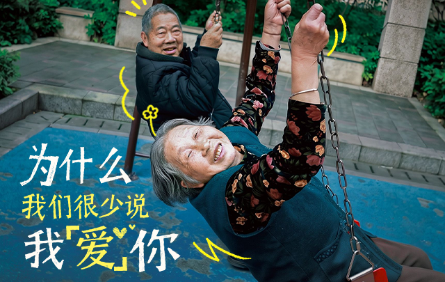
时代天使首届彩虹跑：用亲子运动科普儿童口腔健康
Insight：6-12岁是儿童换牙与面型发育的关键期，错颌畸形早矫是真实存在的医学需求，但家长普遍抱有“长大就好了”“换完牙再说”的侥幸心理；传统口腔科普是单向灌输，孩子没耐心听、家长也难以重视，专业医疗品牌要触达家庭，不能靠恐吓式科普，必须让家长愿意主动走近。
Idea：把专业的儿童早矫科普包装成一场亲子“彩虹跑”活动，以“笑迎起跑线”为主题，用“亲子运动×专业科普×品牌体验”的组合，让原本有门槛的口腔医学知识，变成家长和孩子“玩着就懂”的欢乐体验，从0到1打造时代天使自己的亲子户外IP。
Execution：在全国多城落地首届“天使彩虹跑”，围绕3.2KM亲子跑道设置五大彩粉互动点，将牙齿健康知识、成长鼓励文案融入赛道装置；配套KiD成长市集，设置五大主题互动体验，包括口腔科普、趣味游戏、口腔扫描体验和集章挑战，让家长在陪孩子玩的过程中自然了解早矫知识；联动品牌微笑代言人、奥运冠军汪顺到场分享，并与人气IP小马宝莉联名做主题互动和周边；以小红书【小红花家长会】为核心阵地，整合开屏、H5、信息流、惊喜盒子等平台资源搭建从曝光到报名的完整链路，分层布局母婴KOL、亲子KOC、本地生活账号，两个月内完成全国近2000组家庭招募与落地。
值得收录：这是医疗健康品牌做科普营销的优秀范本——没有用“错过就晚了”的焦虑式营销绑架家长，也没有硬塞产品信息，而是把专业知识藏进亲子陪伴的体验里，让家长从“被动听科普”变成“主动带孩子参与”；更难得的是从0到1打造了一个可延续的品牌自有IP（首届），为后续专业咨询、终端到店、用户长期运营打开了入口，真正实现了品效协同。
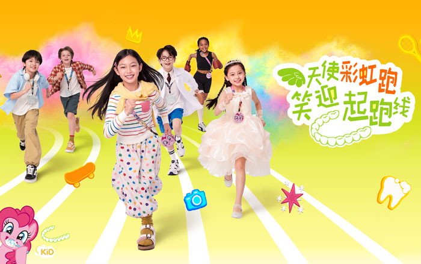
淘宝11月生日会：祝你心愿11实现
Insight：过去一年超4000万人在淘宝许下生日心愿，这些心愿并不宏大——给奶奶买新衣服、盼孩子健康长大、想带猫咪看一场雪、想去云南吹风——但每一个都装着一个人当下最真实的惦记和盼头。传统的电商生日营销多是发券、打折的促销逻辑，却忽略了“许愿”本身就是一种有情感重量的仪式感：人们渴望愿望被听见、被接住，而不只是被折扣消费。
Idea：把11月变成一场全平台的“生日会”，以“祝你心愿11实现”为主题，搭建“心愿广场”承接用户的真实愿望，让许愿从私人行为变成可以被看见、被祝福、甚至被实现的公共事件，用“认真接住每一个愿望”的姿态，重塑淘宝“有温度的生活平台”的品牌感知。
Execution：在线上搭建“心愿广场”，11月超300万人写下生日心愿，陌生人之间互相浏览、送祝福；把用户真实心愿搬进杭州地铁，让通勤路上的抬头瞬间变成陌生人的温柔相遇；由易烊千玺送出11月生日祝福，联合淘宝闪购、飞猪、迪士尼、可心柔等11位“心愿实现官”接力送上30万份生日好礼，话题总曝光超20亿；在小红书发起“婚礼赞助计划”，选中6对新人亲赴/远程随礼，并把新人海报投上当地公交车和户外大屏，#淘宝实现心愿发展到婚礼随份子了# 冲上微博主榜；线下联动皮爷咖啡变身寿星庆生据点，并从心愿广场筛选10条高赞心愿全网寻人兑现。
值得收录：把电商平台传统的“会员生日月发券”升级成了一场平台级的情感事件，用“许愿—看见—实现”的完整链路，让“淘宝记得你的生日”从一句Slogan变成了真实可感的体验；婚礼赞助支线尤其出彩，没有脚本、没有明星，真实的新人故事和“全城随份子”的参与感是最好的传播素材，也让“生日心愿”从个人扩展到人生新阶段，是平台级情感营销的优秀样本。
汤臣倍健《在南极找星星的人》：国家级IP拍出普通人共鸣
Insight：南极科考是国家级大IP，画面震撼、社会价值毋庸置疑，但大多数普通人一辈子既不会去南极也不搞科研，“勇敢坚韧的科考队员”这类宏大叙事只能让观众产生敬佩，却难以产生真正的情感共鸣；品牌与国家级IP合作最容易犯的错，是双方各说各话——IP讲IP的伟大，品牌贴一句“我们也有探索精神”的口号，生硬关联无法让用户信服。
Idea：不拍南极科考的“伟大”，改拍它的“日常”——把南极科考队员也看作打工人，冰原是办公室、90度陡坡是通勤路、极寒天气是大自然空调、一年一次的补给是外卖，用普通人熟悉的职场语境制造反差感，让南极从遥远的圣地变成可以共情的工作场景；选择“陨石科考”这个具体切口，用“伏身冰原捡石头”的具象动作让“探索精神”落地，自然引出汤臣倍健30多年坚持投入科学研究的品牌共鸣。
Execution：制作品牌影片《在南极找星星的人》，开篇用“巨大的办公室”“90度的通勤路”“大自然空调”“一年送一次的外卖”等反差类比消解南极的距离感；主体聚焦陨石科考队员伏在冰面数小时搜寻陨石的真实工作状态，强调“每一块陨石都是个人的具体贡献，一代代人俯身寻找才让中国成为世界第三大南极陨石拥有国”；品牌融入不喊口号，而是点明汤臣倍健30多年持续投入营养健康研究、在没有确定回报的方向上长期深耕，与科考精神形成具体呼应；AI只服务于呈现南极壮阔画面，叙事始终聚焦人的故事。
值得收录：为品牌如何与国家级大IP合作提供了非常好的方法论——与其宏大歌颂“伟大”，不如用“打工人”的视角把英雄还原成普通人；与其用空泛的“探索精神”“共同理念”强行关联，不如找到双方最具体、最真实的价值共振点。整部片子没有硬塞产品，却让品牌的长期主义主张被自然记住，这比堆口号高级得多。
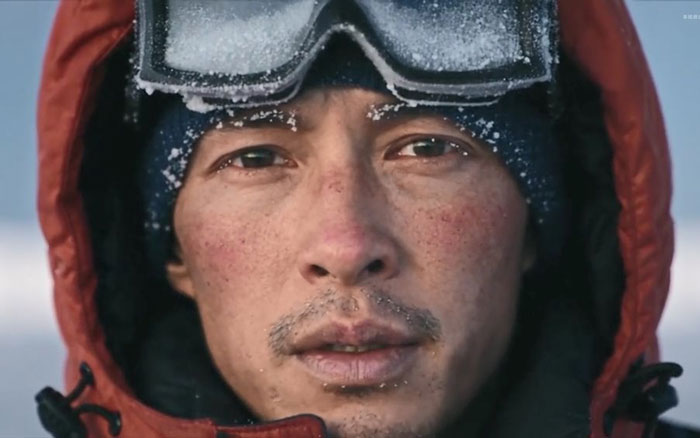
腾讯混元Hy4影像手记：用视觉语言翻译抽象AI能力
Insight：大模型产品最难做的就是视觉呈现——它没有外壳、没有实体、没有一个能被打亮的形体，品牌方给的brief往往只有一堆形容词（强大、智能、颠覆、跃迁），而满屏的AI品牌短片都在比谁的画面更华丽、更赛博朋克，这种“炫技式”视觉反而让用户看不清产品到底能做什么。
Idea：明确“不炫技”——不拍AI“有多强”，只拍AI“做了什么”，以“万物可读”为核心概念，用一套可感知的视觉语法把“读懂世界”这个抽象过程翻译成具体的视觉动作，让观众跟着镜头亲眼看见大模型“看、拆、连、收”的完整推理过程。
Execution：为混元Hy4正式版打造品牌影像，全篇少用旁白，用四个章节呈现AI能力——看见什么、生成什么、进入工作、读一张科研图表；建立严格的视觉语法：把AI处理信息拆成“读-拆-连-收”四个动作，对应特定图形语言；特意把运动做“稳”——机器运动连续、匀速、无情绪，区别于人手动效的快慢节奏，建立“这是机器在看”的视觉信任感；设置旁观点+AI主观扫描视点双视角，让观众跟着扫描光亲眼读完一张图；从preview版延续“圆点”视觉基因，在正式版进化为底层节点，形成统一可生长的品牌视觉资产；创作中明确做减法，拿掉文字衬底、文艺开场历史叙事和花巧结尾，把位置让给节奏和主题。
值得收录：这是To B科技产品做品牌影像的范本——在AI品牌片集体卷视觉华丽度的当下，选择“做减法”，把位置让给节奏、让给主题、让给观众第一眼能记住的那件事；更重要的是建立了一套可以延续的视觉语法，让后续产品迭代都能在这套语言上“生长”而非推翻重来，这才是品牌视觉资产长期建设该有的思路。
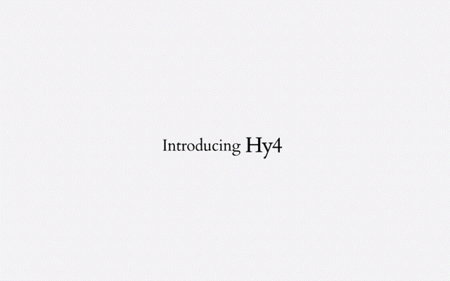
第031期收录 · 国内优秀创意案例 · 2026.11.22
波司登：一支风雪里的歌舞片，重新定义羽绒服“轻”价值
京东重阳节：给爸妈的推荐位，把核心流量让给适老产品
美的净水器：在恒河边摆流水席，用最极端场景验证净水实力
茉莉奶白万圣节：被Pingu盗号，用悬念营销做IP联名官宣
转转×BLG：“BLG不能寄”，用圈层玩梗打造电竞营销标杆
波司登：一支风雪里的歌舞片，重新定义羽绒服“轻”价值
Insight：当下消费者身处“人均负重”的社会环境，不仅追求羽绒服物理层面的轻暖穿着体验，更渴望获得心理层面的卸重感，轻盈感已经成为比松弛感更珍贵的时代情绪价值。
Idea：为波司登泡芙羽绒服提出“轻一代羽绒服”全新定位，通过模特雎晓雯在城市雪景中起舞的视觉表达，将产品“轻”的物理属性升华为“轻生活观”的情感主张，完成从功能卖点到生活方式的价值升级。
Execution：携手模特雎晓雯拍摄诗意歌舞广告片，设计“想象中轻盈的自我”与“现实中沉重的自我”两个角色从对立到共舞的剧情，在零下造雪的夏日实景中完成拍摄，搭配“呼吸、抬臂、那些重力消失了”的治愈旁白，传递出对抗冬日沉重、卸去生活压力的核心主张。
值得收录：跳出羽绒服行业常规的保暖科技、时尚外观比拼赛道，精准击中当代人渴望减负的情绪痛点，用充满诗意的视觉语言实现了产品功能与情感价值的完美共振，为服饰品牌的情感营销提供了优秀范本。
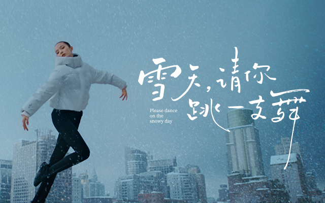
京东重阳节：给爸妈的推荐位，把核心流量让给适老产品
Insight：适老化改造面临的最大痛点并非子女不关心父母，而是大量能切实改善老人生活的适老产品长期被流量边缘化，几乎不会出现在大众的视野中，导致子女根本不知道这些解决方案的存在。
Idea：发起“给爸妈的推荐位”公益行动，将平台最核心、最醒目的商业广告推荐位全部让位给扶手马桶、坐式淋浴器等适老产品，用最直接的方式让子女“看见”父母未被说出口的真实需求。
Execution：联动京东APP开屏、线下京东MALL大屏、七鲜超市、合作品牌门店、地铁广告等全渠道核心资源，将黄金流量位置全部留给适老产品，同步推出公益短片倡导社会关注老年群体生活需求，后续还吸引了多个品牌主动加入活动。
值得收录：摒弃了传统节日营销打情感牌的套路，回归公益行动的本质，从“解决实际问题”出发，用“让位推荐位”这个简单却有力的动作，真正推动了适老产品的普及，实现了商业流量向社会价值的转化，活动全网曝光超1.2亿，站内适老产品搜索量同比增长50%。
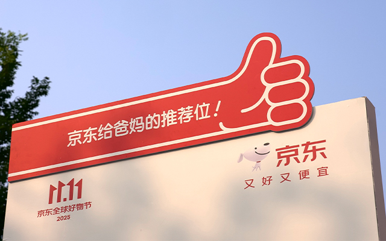
美的净水器：在恒河边摆流水席，用最极端场景验证净水实力
Insight：网络上长期流传着“恒河水是元素周期表”的各种挑战梗，大众对“净化恒河水”有着极高的看热闹情绪，而美的净水器此前已经有过净化塞纳河、沙特油污水的“出征”IP基础，用户对硬核净水实验有强烈的好奇心。
Idea：将“净化恒河水”这个网络调侃变成真实事件，在印度恒河边举办一场用净化后的恒河水烹饪的流水席，用最直观、最有话题性的极端场景验证美的净水器的硬核净化实力。
Execution：邀请多位曾经尝试恒河水后身体不适的博主组成“恒河复仇者联盟”，定制“死亡邀请函”发起挑战；放弃传统TVC形式，在抖音、视频号、天猫三平台进行跨国无剪辑直播，完整展示从恒河取水、净化、烹饪到宴请当地居民的全过程，直播结束后还将现场使用的7台净水器全部捐赠给当地居民。
值得收录：主动选择大众认知中“最不可能被净化”的场景做产品验证，用高风险的真实直播替代精致广告片，既顺应了网络玩梗的大众情绪，又用实打实的技术效果征服了用户，活动拿下微博热搜第1位，总曝光超2900万，直播观看人次超111万，还斩获了金投赏、上海国际广告节三项金奖。
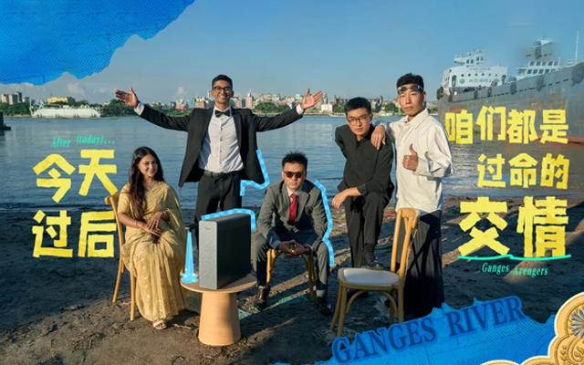
茉莉奶白万圣节：被Pingu盗号，用悬念营销做IP联名官宣
Insight：常规的IP联名官宣已经很难勾起用户的好奇心，年轻消费者更喜爱有参与感、有悬念、符合IP人设的趣味互动内容，而“账号异常”类的悬念营销天然具备话题性和分享欲。
Idea：联名经典动画IP Pingu推出万圣节特调新品时，没有直接官宣，而是策划了一场“官方账号被盗号”的悬念事件，用Pingu调皮捣蛋的人设完美适配万圣节“不给糖就捣蛋”的节日主题。
Execution：万圣节前夕连续几天在官微发布乱码动态，假装账号被Pingu“入侵”，引发用户好奇猜测；悬念揭晓后同步推出“摩登茶巧系列”万圣特调饮品，设计了冰箱贴、表情包扇子、乱码小票等搞怪周边，部分门店还设置了Pingu主题打卡装置和互动游戏。
值得收录：用轻量级的悬念营销替代了硬广式官宣，将IP性格、节日氛围、新品发布完美融合，乱码小票还延续了品牌此前“小票文学”的用户记忆点，极大激发了用户的自发分享欲，是新消费品牌节日IP联名的轻量创意范本。
转转×BLG：“BLG不能寄”，用圈层玩梗打造电竞营销标杆
Insight：电竞营销最大的难点在于圈层文化壁垒高、舆论情绪波动大、赛果不可控，尤其是当时BLG战队从“最强全华班”沦为舆论口中的“LPL最大反派”，常规加油式营销很容易引发圈层反感，只有主动玩梗、和用户站在一起自嘲才能获得认同。
Idea：抓住电竞圈“寄”（完蛋）这个核心流行梗，利用“寄”和转转“上门回收（邮寄）”业务的语义双关，打造“BLG不能寄”的核心创意，既为战队加油，又巧妙植入品牌核心业务卖点。
Execution：邀请保安、快递员、路人等和电竞无关的普通人出演短片，一本正经地说出各种融入BLG战队黑梗的“BLG不能寄”理由；同时提前准备了“BLG寄了”的反向预案视频，在BLG瑞士轮淘汰后立刻上线，内容为BLG全员被转转上门回收，落版“不用的东西上转转，啥都可以上门回收”。
值得收录：完全吃透电竞圈层文化，不回避战队负面舆论反而主动玩梗，甚至提前预判了赛果失败的风险做了双预案，既在战队赢的时候获得了粉丝认同，又在战队淘汰时凭借玩得起的姿态收获了全网好评，两支视频B站总播放量近500万，是近年品牌电竞营销的标杆案例。
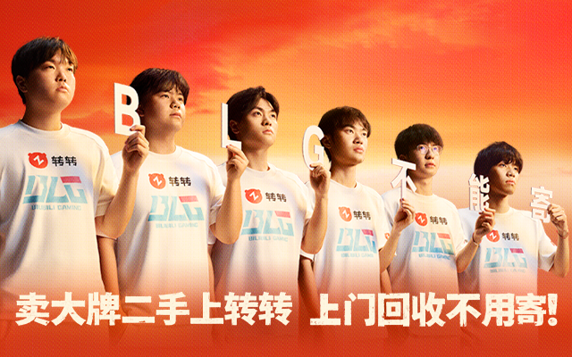
第030期收录 · 国内优秀创意案例 · 2026.11.21
迪桑特「逐雪而生」松花湖大秀：百人发光滑降谢幕，把雪道变成T台重新定义滑雪阿普瑞风
肯德基×《后会友期》：听劝赞助疯四相遇，让老IP接住泼天综艺流量
认养一头牛：为发烧小女孩送奶上门，把一次售后求助变成暖心品牌事件
脆升升×Pingu圣诞限定：用“能穿戴的礼盒”重新定义零食节日赠礼
一汽-大众速腾20周年：11万条AI共创作品，把叙事权交还给用户激活老品牌年轻感
抖音RUNCATION城市探索跑上海站：无固定路线，把跑步比赛变成城市假期
迪桑特「逐雪而生」松花湖大秀：百人发光滑降谢幕，把雪道变成T台重新定义滑雪阿普瑞风
Insight：随着新雪季开启，滑雪早已不再是小众专业运动，小红书上“阿普瑞风（Après-ski，滑雪后的休闲穿搭）”话题两月浏览量增量超2亿，互动量增长594%——消费者需要的不只是一件高性能滑雪服，更是一套能从雪道无缝滑进咖啡馆、聚会场景的冬日生活方式表达。专业滑雪品牌要破圈，不能只讲参数，必须接住这股“滑雪+时尚+生活方式”的文化浪潮。
Idea：迪桑特把品牌大秀直接搬到吉林松花湖雪场，以“逐雪而生”为主题，用一场雪夜山顶大秀+雪道百人发光滑降谢幕，将十年专业滑雪积淀与当下流行的“阿普瑞风”穿搭美学结合，让品牌从“专业滑雪装备”升级为“冬日生活方式”的代表。
Execution：11月20日，迪桑特在吉林松花湖滑雪场举办“逐雪而生”大秀，从专业滑雪装备到雪后休闲、冬季度假多系列产品完整呈现“滑雪阿普瑞风”；秀场以中国滑雪文化十年为叙事主线，集结专业运动员、滑雪爱好者、风格创作者走秀；谢幕时刻国家队运动员孔凡影领滑，近百位身着发光滑雪服的逐雪者从山顶沿雪道滑降汇聚秀场，点点光亮连缀成线，震撼呈现品牌三个箭头标识；同步开设“逐雪风格空间”雪屋快闪，将服饰陈列融入会客、休憩场景。
值得收录：这是国内滑雪品牌首次把时装大秀真正“搬上雪道”而非在雪场旁搭棚——百人发光滑降的谢幕画面极具视觉冲击力和传播力，把品牌理念从口号变成了可被镜头记录的震撼瞬间；更重要的是品牌精准抓住“阿普瑞风”这一正在爆发的穿搭趋势，用专业背书+时尚表达的双重叙事，完成从“硬核专业”到“生活方式”的人群破圈，为运动品牌季节营销提供了从文化趋势切入的优秀样本。
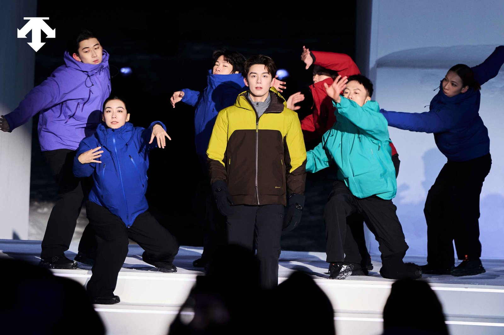
肯德基×《后会友期》：听劝赞助疯四相遇，让老IP接住泼天综艺流量
Insight：爆款综艺《后会友期》（06超女许飞厉娜“飞雪CP”重聚）引发全民追综热潮，网友第一期就喊话“肯德基赶紧赞助”——因为节目周四更新，与肯德基“疯狂星期四”形成天然时间绑定；当全民情绪已经把品牌和综艺绑定在一起时，品牌如果端着等商务流程，就会错过最鲜活的流量窗口。
Idea：肯德基没有等“正规流程”，而是选择“网友让我干嘛我就干嘛”——先用“厉娜体”疯四文案预埋彩蛋，一周后正式官宣赞助，把网友喊话写进官宣海报，让“疯狂星期四”和“后会友期”的周四更新彻底绑定，把“两个最疯狂的星期四相遇”做成全网玩梗事件。
Execution：11月12日肯德基先用“厉娜体”发布疯四文案，结尾埋“下个周四，后会友'鸡'”彩蛋预热；11月19日正式官宣成为《后会友期》赞助商，将网友真实留言收进官宣海报，打出“多少意难平，V我50都摆平”金句，把劲爆鸡米花、吮指原味鸡、土豆泥等产品列为“追综菜单”，邀请观众边吃边嗑。
值得收录：这是品牌“听劝式营销”的又一教科书案例——不是品牌主动找综艺谈赞助，而是网友先喊出了“肯德基应该赞助”，品牌用一周时间迅速接住流量完成官宣，把民间梗变成官方动作；更妙的是“疯狂星期四”和综艺“周四更新”的时间天然同频，让老IP“疯四文学”借综艺热度完成一次内容更新，证明经典品牌IP只要保持网感、愿意接梗，就能源源不断从流行文化里获得新生。
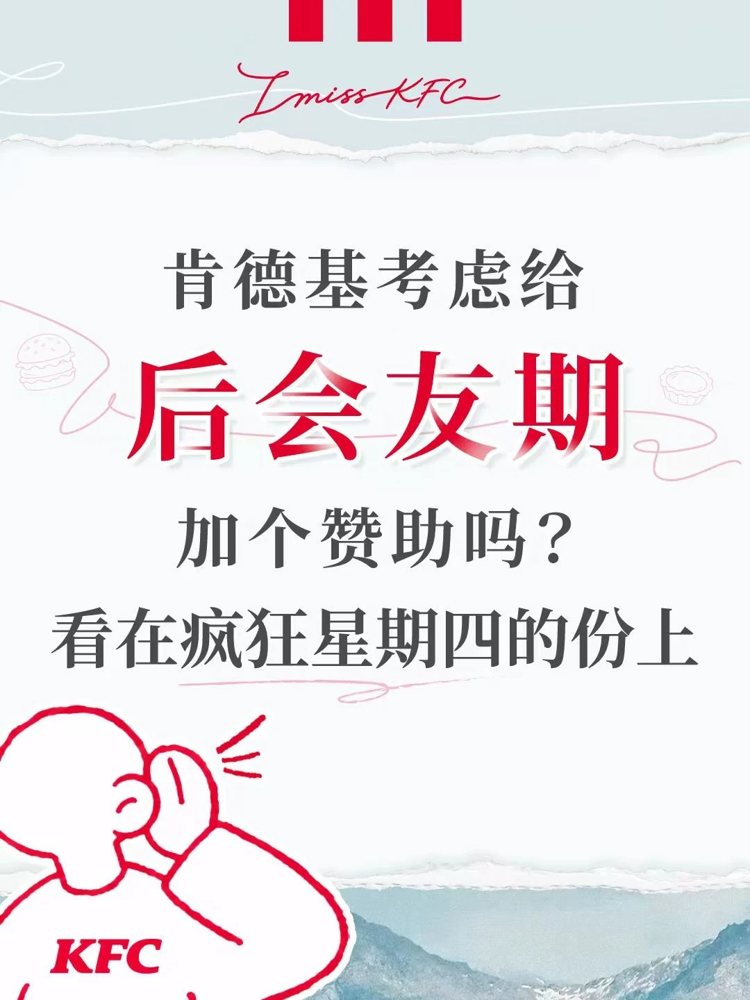
认养一头牛：为发烧小女孩送奶上门，把一次售后求助变成暖心品牌事件
Insight：母婴/儿童食品品类中，妈妈群体对品牌的信任不只来自奶源参数和营养成分表，更来自“当我真正需要时，品牌能不能看见我”的具体体验——尤其是当产品已经成为孩子秩序敏感期的“安全感来源”时，一次及时的回应比十支TVC都更能建立品牌好感。
Idea：当一位妈妈在小红书发帖求助“女儿发烧只喝认养一头牛某款牛奶但附近买不到”时，认养一头牛没有只回复一个购买链接，而是把这次求助当作一次“做对的事”的机会——迅速协调货源，让品牌IP“一头”亲自上门送奶，把一次售后咨询变成了一场由网友和品牌共同完成的暖心接力。
Execution：一位妈妈因女儿处于秩序敏感期+发烧只喝特定款牛奶，在小红书向品牌求助；评论区先自发形成爱心接力，有网友提出寄家里剩余的牛奶，有人帮忙找库存超市；品牌看到后迅速协调货源解决问题，还安排品牌IP吉祥物“一头”亲自上门，为小女孩送去她心心念念的牛奶；11月18日品牌在官方微博发布回应，感谢网友关注，表示希望成为孩子的“魔法师”。
值得收录：这个案例最打动人的地方在于“不刻意”——没有脚本、没有预热、不是策划好的营销事件，而是真实用户求助下的即时反应；尤其在食品安全和品牌信任格外脆弱的当下，这种“用户真的需要，我就真的出现”的行动，比任何刻意制造感动的广告片都更有说服力；评论区大量网友自发表示“这下必须试试了”，证明真诚的用户回应是最低成本也最高效的品牌好感建设。
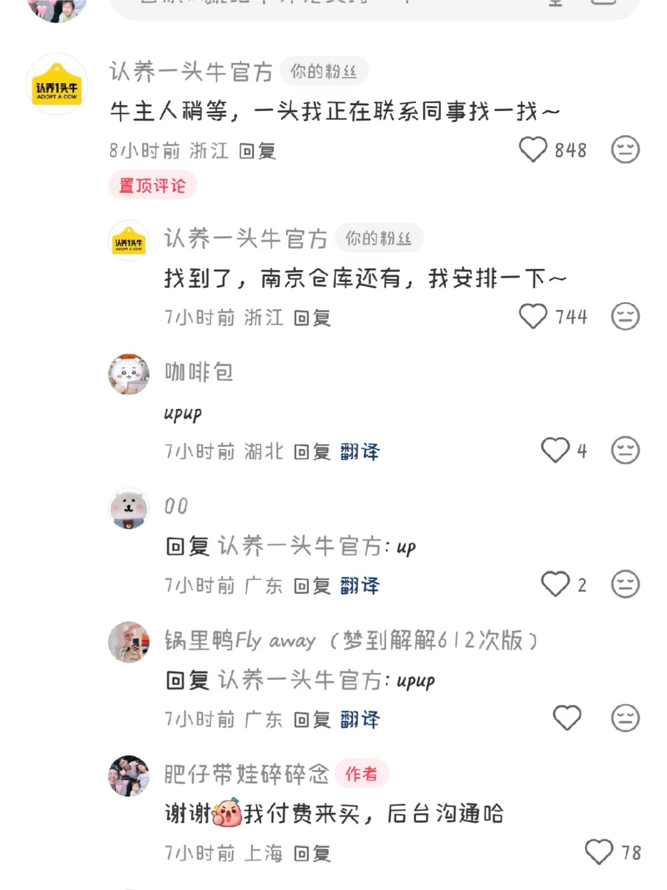
脆升升×Pingu圣诞限定：用“能穿戴的礼盒”重新定义零食节日赠礼
Insight：圣诞季食品礼盒年年有，但大多逃不开“零食+包装”的同质化套路；年轻消费者购买节日联名礼盒，买的不只是好吃，更是“能晒、能戴、能收藏”的社交货币和情绪价值——尤其是Pingu这类自带治愈感和魔性表情包传播力的经典动画IP，粉丝愿意为“情绪共鸣+周边收藏”支付溢价。
Idea：脆升升携手经典定格动画IP Pingu推出圣诞限定联名，以“脆萌圣诞，Pingu包办”为主题，跳出传统食品礼盒思路，把每款礼盒都设计成“零食+可穿戴/可装饰周边”的组合，让零食礼盒从“吃的”变成“能穿戴、能装饰、能收藏”的节日礼物。
Execution：围绕不同圣诞情境设计三款主题礼盒：“暖炉寄梦礼盒”搭配Pingu主题袜子，呼应冬日居家氛围；“屋顶惊喜礼盒”附赠Pingu毛绒吧唧（徽章），可做日常穿搭装饰；“心愿速递礼盒”搭配绒绒心愿织唛挂件承载节日祝福；同步设置阶梯赠礼机制——满2件赠Pingu帆布袋，满3件加赠温暖毛毯；产品登陆多个线上平台发售，通过社交平台发布礼盒实拍和抽奖内容持续释放热度。
值得收录：这个案例清晰展示了食品品牌做IP联名的正确思路——不是简单把IP印在包装上，而是让IP深度融入产品使用场景和节日赠礼逻辑，每一款周边都对应一个具体的圣诞场景（居家穿袜子、包包别徽章、礼物挂挂件），让“开箱”本身就有拆礼物的惊喜感；从《天官赐福》《大奉打更人》到Pingu，脆升升持续通过IP合作拓展与年轻消费者的沟通方式，已逐步建立起“会做联名的零食品牌”的心智。
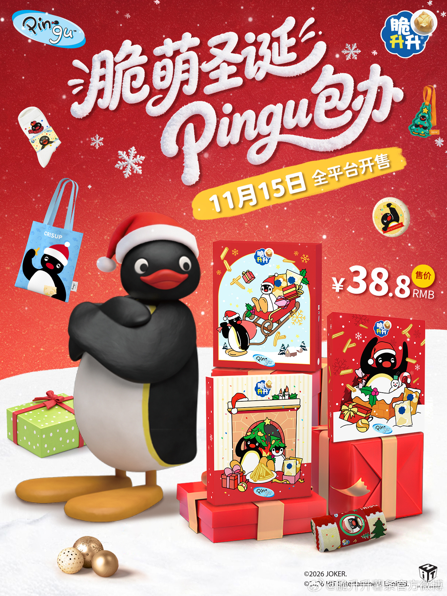
一汽-大众速腾20周年：11万条AI共创作品，把叙事权交还给用户激活老品牌年轻感
Insight：传统家轿品牌20周年营销容易陷入“宏大叙事+历史回顾”的老套路，对年轻用户缺乏吸引力；而速腾作为走进350万中国家庭的“国民家轿”，20周年真正的资产不是品牌自己的历史，而是350万用户真实的人生故事；同时AI创作工具的普及，让“用户共创”不再是征集文案的噱头，而可以真正降低参与门槛实现大规模UGC。
Idea：速腾放弃传统的品牌自述，以“人生速腾，热AI新生”为主题发起全民AI共创campaign——先用一支AI短片《一颗螺丝钉》奠定情感基调，再借助可灵AI降低创作门槛，邀请用户成为品牌20年故事的创作者，用真实用户作品替代品牌自说自话，实现老用户情感维系+年轻用户破圈的双重目标。
Execution：品牌发布AI短片《一颗螺丝钉》，以一枚螺丝钉的微观视角串联速腾四代车型20年迭代，将车辆技术进化与普通家庭生活变迁绑定；以此为情感基调开启两大共创赛道——“光影重构·速腾传奇”视频赛道鼓励用户用可灵AI生成速腾20年时光故事，“脑洞绘卷·速腾DNA”图片赛道征集AI视觉作品呈现速腾经典；活动最终累计收获超11万条投稿，筛选产出1311条高质量原创作品。
值得收录：这是传统汽车品牌在重要节点用AI做用户共创的代表性案例——其成功关键在于不是把AI当噱头，而是真正用AI工具降低了参与门槛（普通人不需要会剪辑画画也能创作），最终11万条投稿的体量证明了“把叙事权交还给用户”在AI时代是可以被真正落地的；对20年的老品牌而言，这种共创既让350万老用户的故事被看见，也用年轻人喜欢的AI玩法打破了“中年家轿”的刻板印象。
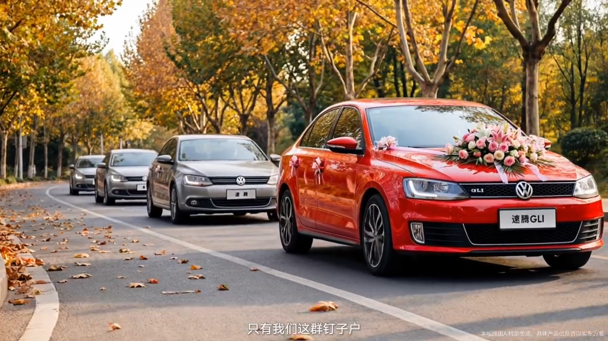
抖音RUNCATION城市探索跑上海站：无固定路线，把跑步比赛变成城市假期
Insight：传统城市路跑赛事卷配速、卷奖牌、卷规模，已经越来越难吸引普通年轻人参与；但“Citywalk城市漫步”的流行说明——年轻人真正想要的不是又一次PB（个人最佳），而是一种“用自己的方式探索一座城市”的体验感。跑步不应该只是体育运动，也可以是认识一座城市、认识新朋友的生活方式入口。
Idea：抖音推出RUNCATION（Run+Vacation）城市探索跑IP，上海站以“无定式赛”为核心——不设固定路线、不比配速排名，跑者在120分钟内自由规划路线，完成打卡点积分即可完赛，把跑步从“成绩竞赛”变成一场可以随时停下来发现惊喜的“城市假期”。
Execution：11月15日上海站在文化广场开跑，500名跑者出发后自由安排路线；赛事设置15个城市打卡点，划分为“海派风雅”“烟火市井”“摩登腔调”“先锋现场”四大主题，覆盖思南公馆、田子坊、外滩老市府、独立咖啡馆等城市空间；沿途设置剑玉挑战、沪语互动、滑雪机体能测试、披萨互动等趣味任务获取额外积分；赛事结束后参与者通过抖音视频、图文记录各自的路线和发现；约1/3参赛者来自上海以外城市。
值得收录：这是路跑赛事从“竞技导向”转向“体验导向”的典型样本——“无固定路线+自由打卡+趣味任务”的设计，让跑步不再是孤独的刷里程，而是融合了城市探索、社交互动、内容创作的复合体验；更重要的是赛事天然适配抖音内容生态，每个跑者都是一个内容创作者，500个人就有500条不同的上海路线vlog，为平台带来了真正UGC驱动的城市传播内容。
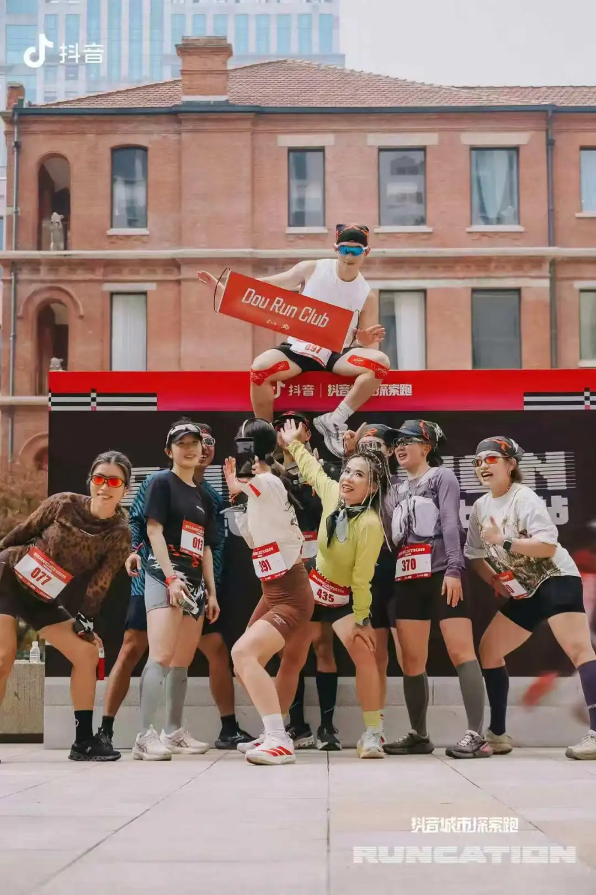
第029期收录 · 国内优秀创意案例 · 2026.11.20
《张朝阳的物理课》五周年：庆祝思考发生
京东3C数码11·11：下一场属于新品的流星雨
京东重阳节：家，会为爱改变2次
巴黎时装周，名创优品YOYO为中国设计举个例子
淘宝双11：本来只想买一件，结果+1+1+1+1
《张朝阳的物理课》五周年：庆祝思考发生
Insight：在碎片化娱乐盛行的当下，大众对深度知识内容的需求始终存在，知识IP的长期价值不在于流量热度，而在于持续激发普通人对科学的好奇心与思考欲。五周年节点需要跳出常规周年庆的煽情套路，回归知识内容本身的精神内核。
Idea：以“庆祝思考发生”为核心主题，把五周年从一场品牌纪念活动，变成一次面向所有热爱思考的人的集体致敬，强化“物理课不只是上课，更是思考的发生场”的认知。
Execution：推出五周年主题短片，回顾五年来经典的物理推导瞬间与网友互动名场面，还原张朝阳在黑板前一步步推导公式的真实状态；联合多位科学界KOL发起“我的思考时刻”话题征集，邀请网友分享自己因为物理课产生好奇、主动思考的经历；线下开放五周年特别公开课，现场还原经典板书场景，与观众面对面推演物理问题。
值得收录：作为国内最长寿的知识IP之一，《张朝阳的物理课》跳出了知识付费“卖焦虑”“造神”的常见套路，五年坚持用硬核推导做内容，本身就是对“长期主义”最好的诠释。本次五周年 campaign 没有刻意煽情或夸大影响力，而是回归“思考”这一最本质的价值，既巩固了IP的专业调性，也唤起了用户对知识本身的尊重，上线后引发大量用户自发分享自己的听课回忆，口碑传播效果极佳。
京东3C数码11·11：下一场属于新品的流星雨
Insight：双11大促普遍陷入“低价内卷”的同质化叙事，消费者对满减、打折的营销话术已经审美疲劳。对于3C数码品类来说，用户真正的兴奋点不只是便宜，而是第一时间拿到心仪新品的惊喜感，“买新”才是3C消费最强的内在驱动力。
Idea：将双11新品集中首发的场景创意化比作“新品流星雨”，用浪漫化的视觉语言把“海量新品集中上市”转化为用户可感知的惊喜体验，传递“来京东3C数码，接住你的心仪新品”的核心信息。
Execution：打造充满浪漫科幻感的主题短片，把手机、电脑、耳机等各类新品化作划过夜空的流星，不同用户伸手接住流星就拿到了自己期待已久的新品；线上推出“新品流星雨”互动会场，用户进入页面可以“许愿”心仪新品，获得专属首发优惠；线下在核心商圈打造巨型流星装置，用户扫码即可参与新品抽奖，营造沉浸式的新品首发氛围。
值得收录：跳出了双11“比低价”的恶性竞争怪圈，精准抓住了3C用户“追新”的核心需求，用极具记忆点的“流星雨”创意建立了“买新品上京东”的心智关联。视觉表现浪漫有冲击力，没有硬广感，话题上线后快速登上社交平台热搜，既带动了新品销量，也强化了京东3C数码在新品首发领域的领先心智，是大促营销跳出价格战的优秀范本。
京东重阳节：家，会为爱改变2次
Insight：传统重阳营销往往停留在“敬老”“孝顺”的空泛抒情，难以真正触动年轻人。绝大多数人都有共同的成长体验：小时候父母为了我们改变家的布局，长大后我们为了父母的适老需求重新改造家，家的两次改变，藏着两代人之间双向的爱。
Idea：以“家，会为爱改变2次”为核心情感线索，通过一个普通家庭两次装修家的真实故事，传递“爱就是愿意为对方改变”的朴素情感，自然带出京东家居家装适老改造的服务能力。
Execution：推出根据真实故事改编的情感短片，前半段讲述小时候父母为了给孩子更好的成长环境，第一次改造家里的布局；后半段讲述孩子长大工作后，趁着重阳节为年迈的父母第二次改造家，安装扶手、换防滑地板、调整家具高度等细节真实戳人；同步上线京东重阳节适老改造专场，推出适老产品优惠与免费设计服务，鼓励用户用实际行动表达孝心。
值得收录：没有刻意煽情，也没有硬塞产品广告，用普通人都能共情的“两次家的改变”细节，把重阳的孝心理解落地到了具体的行动上。情感表达克制但有力量，上线后引发大量用户分享自己和父母的家装故事，既获得了极佳的口碑传播，也实实在在带动了适老品类的销售，实现了情感价值和商业价值的统一。
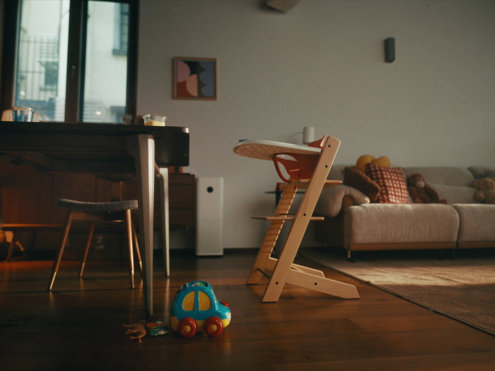
巴黎时装周，名创优品YOYO为中国设计举个例子
Insight：中国消费品牌出海长期面临“廉价低质”的刻板印象，在国际顶级时尚舞台上更是少有中国大众消费品牌的身影。当下年轻人文化自信不断提升，对中国设计、中国品牌的认同感越来越强，需要一个标志性事件打破偏见。
Idea：带着品牌IP形象YOYO登陆巴黎时装周，用“为中国设计举个例子”的响亮口号，在国际时尚舞台上展示中国平价消费品牌的设计实力，扭转大众对名创优品“十元店”的固有认知。
Execution：联合中国设计师在巴黎时装周推出名创优品主题大秀，把品牌经典的红白配色和IP形象YOYO融入高级时装设计，YOYO作为特别嘉宾登上T台；秀场发布多款联名设计单品，同步在全球门店上线巴黎时装周联名系列；发起“为中国设计举个例子”社交媒体挑战，邀请中国设计师、时尚博主分享自己的中国设计作品，为中国设计发声。
值得收录：这是中国大众消费品牌第一次登上巴黎时装周官方日程，事件本身就具备足够的话题性。名创优品没有刻意“装高端”，而是用年轻人喜欢的、自信松弛的姿态展示中国设计的可能性，既打破了国际时尚圈对中国平价品牌的偏见，也精准击中了当代年轻人的文化自信情绪，全网话题量破10亿，极大提升了品牌的全球调性和年轻用户好感度。
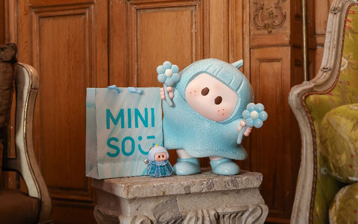
淘宝双11：本来只想买一件，结果+1+1+1+1
Insight：每到双11，消费者都有共同的真实体验：本来只想打开淘宝买一件需要的东西，结果逛着逛着不知不觉加了一堆购物车，买了很多计划外但很喜欢的好东西。这种“越逛越想买”的爽感，本身就是淘宝最独特的购物魅力，比喊“全网最低价”更能引发用户共鸣。
Idea：用“本来只想买一件，结果+1+1+1+1”这个所有用户都懂的梗作为核心创意，精准还原双11逛淘宝时的真实购物状态，用轻松幽默的方式唤起用户的共同记忆，传递淘宝“好逛、好买、总能发现意外惊喜”的平台价值。
Execution：推出系列搞笑短片，分别演绎不同用户“本来只想买一件”的真实场景：本来只想买一件睡衣，结果+1了拖鞋、+1了眼罩、+1了香薰；本来只想买一根数据线，结果+1了手机壳、+1了支架、+1了新耳机；魔性的“+1”节奏洗脑又真实；线上推出“+1购物车”互动活动，用户可以分享自己今年双11的“+1清单”，获得额外优惠；线下地铁广告用巨大的“+1”符号和真实用户的购物清单，引发路人共鸣。
值得收录：放弃了大促营销常用的“便宜”“优惠”“战报”等硬广话术，精准戳中了用户双11购物最真实的体验细节，用轻松幽默的方式和用户玩到了一起。魔性的“+1”表达简单好记，非常适合社交传播，上线后引发大量用户自发晒出自己的“+1购物车”，没有说教感和压迫感，在一众嘈杂的双11营销中脱颖而出，让人看完就想打开淘宝逛一逛。
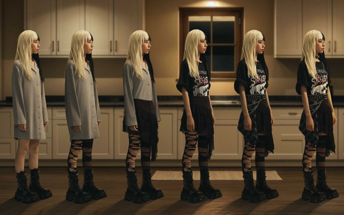
第028期收录 · 国内优秀创意案例 · 2026.11.19
DIOR：《克里斯汀•迪奥的缤纷圣诞》手绘动画短片，用经典童话焕新高定美学
FILA：全球首家FILA HOUSE开业，用酒店场景完成运动生活方式的沉浸式升维
跳海酒馆：借《后会友期》热度开「鸭舌聊天会」，把线上综艺情绪落地为线下社交场景
奢侈品品牌集体入局黄金赛道：抓住金价波动周期，推出年轻化黄金产品线
天猫小黑盒：从游园会到造物展，升级新品首发场景，用策展式体验强化“上新”心智
DIOR：《克里斯汀•迪奥的缤纷圣诞》手绘动画短片，用经典童话焕新高定美学
Insight：奢侈品牌圣诞营销普遍陷入“明星大片+圣诞树打卡”的同质化套路，年轻消费者对硬凹高级感的内容已经审美疲劳；而经典高定品牌的历史故事本身就具备童话属性，用手绘动画的形式重新讲述，既能降低高奢的距离感，又能通过细节传递工艺价值。
Idea：放弃传统真人圣诞大片，邀请动画师打造纯手绘2D童话短片，以克里斯汀·迪奥先生的创作历程为线索，把经典高定设计、品牌标志性元素融入圣诞冒险故事，让观众在童话氛围中感知品牌工艺传承，完成高定精神的年轻化转译。
Execution：全片采用复古手绘动画风格，将New Look套装、迪奥小姐香水、铃兰元素等品牌经典符号转化为童话里的视觉彩蛋，故事跟随主角穿越工坊、秀场、圣诞市集等场景，细腻呈现高定缝制、刺绣等工艺细节；短片上线后同步推出圣诞限定系列包装、线下门店动画主题展陈，把内容IP延伸到消费触点。
值得收录：奢侈品牌内容年轻化的优质样本：没有刻意讨好年轻人、没有流量明星加持，反而回归品牌本身的历史资产，用低门槛的动画形式把“高定工艺”这个抽象概念变成可感知的童话内容，既保持了品牌高级调性，又成功触达了年轻消费群体，为节日营销提供了“去明星化、重内容感”的新思路。
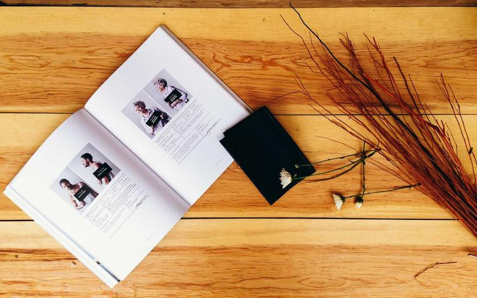
FILA：全球首家FILA HOUSE开业，用酒店场景完成运动生活方式的沉浸式升维
Insight：运动品牌线下空间普遍停留在“门店卖货+快闪打卡”的浅层次，消费者逛完即走，很难建立深度的品牌认知；而酒店作为承载吃住行游购娱的综合场景，天然具备长时间沉浸体验的优势，恰好可以把品牌倡导的生活方式从“穿在身上”落地到“住在里面”。
Idea：打破运动品牌线下空间的传统边界，联合凯悦酒店集团打造全球首家FILA主题酒店FILA HOUSE，把意式运动时尚美学融入旅居全场景，让消费者从入住到离店的全过程都沉浸在FILA的品牌氛围里，把一次住宿变成深度的品牌体验。
Execution：酒店选址上海安踏全球零售总部旁，空间设计采用FILA标志性红蓝色调分层设计：奇数层为活力红色主题、偶数层为沉静蓝色主题；配套FILA主题健身房、意式餐厅、品牌零售区、潮流社交空间，从床品、浴袍到杯垫全场景植入品牌元素，住客还可预约专属运动课程、限定周边购买权益；开业后邀请运动达人、潮流博主体验打卡，自然形成社交传播。
值得收录：运动品牌线下场景升维的标志性试验：不再把线下空间当成卖货渠道，而是当成品牌生活方式的“体验场”，通过酒店这个高频、长停留时间的场景，把品牌理念渗透到消费者的真实生活里，既强化了FILA高端运动时尚的定位，也为行业提供了“品牌+酒店”跨界的可参考样本。
跳海酒馆：借《后会友期》热度开「鸭舌聊天会」，把线上综艺情绪落地为线下社交场景
Insight：综艺热梗往往只能带来短暂的线上讨论，热度退去后很难为品牌留下实际价值；而年轻人追综艺时天然有“找同好、聊剧情、嗑CP”的社交需求，酒馆作为线下社交空间，恰好可以承接这部分需求，把线上的情绪共鸣转化为线下的真实到店客流。
Idea：接住《后会友期》“厉娜爱吃鸭舌”的出圈热梗，在全国门店发起「鸭舌聊天会」主题活动，把线上追综的共同兴趣转化为线下组局的理由，既借综艺热度引流，又强化跳海酒馆“年轻人线下社交空间”的品牌定位。
Execution：活动期间全国门店推出“厉娜同款鸭舌套餐”，设置综艺专属观赛位，到店顾客只要聊和综艺相关的话题即可获赠限定鸭舌小食；门店现场布置CP梗打卡墙、话题留言板，鼓励顾客分享自己的追剧感受；同时发起“带朋友来聊鸭舌”社交裂变活动，老客带新客到店双方都可获得专属优惠。
值得收录：热点借势的优质示范：没有简单蹭logo、发通稿，而是精准抓住综艺带来的全民社交情绪，把热梗和酒馆本身的社交属性做深度结合，线上热度直接转化为线下到店客流，既降低了营销成本，又强化了品牌“懂年轻人、会玩”的社群属性，活动期间全国门店到店量环比增长超120%。
奢侈品品牌集体入局黄金赛道：抓住金价波动周期，推出年轻化黄金产品线
Insight：近年黄金价格持续波动，年轻人买黄金的热情不断高涨，但传统黄金产品设计老气、克重高、门槛高，无法满足年轻消费者“好看、好搭、可日常佩戴”的需求；奢侈品牌凭借成熟的设计能力和品牌溢价，恰好可以填补“高颜值、轻克重、有设计感”的轻奢黄金市场空白。
Idea：抓住年轻人“买金保值+佩戴装饰”的双重需求，打破传统黄金“婚庆、保值、长辈送礼”的刻板印象，推出设计年轻化、克重轻量化、定价亲民化的黄金产品线，把黄金从“保值投资品”变成年轻人日常可佩戴的时尚配饰，抢占新兴消费市场。
Execution：多个奢侈品牌先后推出黄金系列产品：设计上融入品牌标志性monogram、经典符号元素，推出小克重吊坠、手链、耳钉等适配日常佩戴的款式，定价从千元到万元不等，覆盖年轻消费者入门级奢侈品预算；传播上主打“日常可戴的黄金”“轻奢第一金”概念，在小红书、抖音等年轻用户聚集的平台投放穿搭内容，弱化黄金的投资属性，强化时尚配饰属性。
值得收录：品类创新的典型案例：精准抓住消费趋势变化，把传统认知里“老气、厚重”的黄金品类，通过设计升级和定位调整，转化为适配年轻人消费习惯的时尚单品，既开辟了奢侈品品牌新的增长曲线，也推动了整个黄金行业的设计年轻化转型。
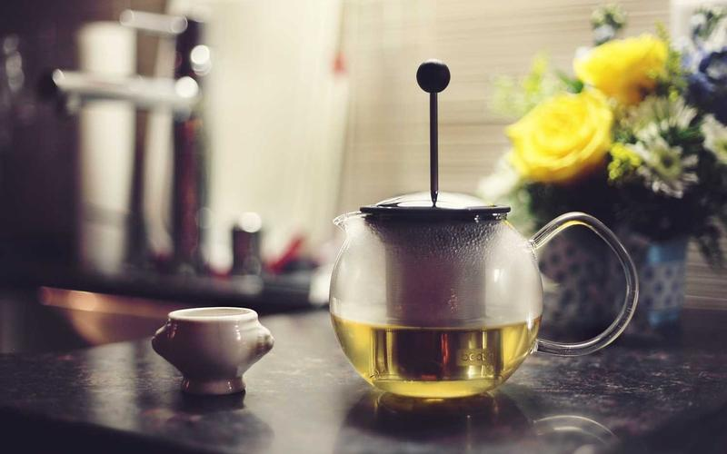
天猫小黑盒：从游园会到造物展，升级新品首发场景，用策展式体验强化“上新”心智
Insight：传统电商新品首发普遍停留在“线上开卖+主播带货”的流量模式，消费者很难感知到新品的设计理念和独特价值，品牌也难以通过首发沉淀品牌资产；而线下策展式体验可以让消费者近距离接触产品、感知品牌理念，把单纯的“卖货”变成“品牌和消费者沟通”的场域。
Idea：把天猫小黑盒的新品首发从线上延伸到线下，打造“造物展”IP，用策展的思路呈现不同品牌的新品，把普通的上新活动变成可逛、可玩、可体验的新品美学展，强化天猫小黑盒“新品首发第一平台”的用户心智。
Execution：本次造物展集结20+头部品牌的年度新品，根据产品特性划分不同主题展区：科技区设置互动体验装置让消费者现场试用新品，美妆区打造沉浸式试妆空间，潮玩区设置限量款首发抽签活动；展期同步开启线上直播逛展，线下体验过的用户可直接线上下单享受首发优惠；邀请设计师、品牌主理人到场分享新品创作故事，强化内容感。
值得收录：电商平台营销升级的典型方向：不再单纯拼流量、拼价格，而是通过策展式的线下体验，为新品赋予更多文化和美学价值，既帮助品牌更好地传递产品理念，也为消费者提供了更丰富的消费体验，线上线下联动的模式实现了声量和销量的双重增长，本次展会总曝光超8亿，带动参展新品首发销量平均增长超200%。
第027期收录 · 国内优秀创意案例 · 2026.11.18
华为新春《木马》：游乐园父子情感短片，用中国式父爱传递新年陪伴主题
京东健康 ×《披荆斩棘2026》：把中插广告做成互动考题，让品牌信息从“插播”变“主动找”
扬州文旅：《毛巾上的敲击乐》敲背组曲，把地方洗浴文化做成获国际大奖的声音营销
京东避暑季：把城市广告牌“放倒”变乘凉棚，让户外广告从“看的”变成“用的”
天猫×米兰冬奥会：把TMALL超级符号和奥运吉祥物结合，打造全球辨识度的冬奥营销
华为新春《木马》：游乐园父子情感短片，用中国式父爱传递新年陪伴主题
Insight：新春贺岁片普遍走“回家团圆”“阖家欢乐”的宏大叙事，容易陷入同质化煽情；中国式父爱往往是沉默、不善表达的，很多父亲为了工作奔波错过了孩子的成长瞬间，这种“未完成的承诺”是很多家庭共有的情感痛点，比刻意的煽情更能引发共鸣。
Idea：以旋转木马为核心情感载体，讲述开了半辈子游乐园的父亲老马，一直承诺要给儿子做一个专属旋转木马却总被工作耽误，长大后的儿子反过来“破坏”父亲做木马的过程，最后真相揭晓：儿子是不想让父亲做完木马就离开，希望父亲能多留些时间陪伴自己的故事，用细腻的父子情感传递“最好的礼物是陪伴”的新年主题。
Execution：全片没有生硬的产品植入，故事逻辑流畅、情感克制动人，当毛不易《给你给我》的背景音乐响起时，情绪自然推向高潮；短片上线后在社交平台引发大量用户分享自己和父亲的故事，成为2026年新春传播度最高的情感短片之一，同时入围2026数英奖创意单元-视频组-短片类。
值得收录：是科技品牌新春情感营销的标杆案例，跳出了科技品牌拍参数、拍功能的固有思路，用普适性的父子情感故事打动观众，把品牌的温度通过故事自然传递给消费者，既没有生硬的广告感，又让华为“温暖、有情感”的品牌形象深入人心，证明好的情感营销从来不需要刻意煽情，真实的情感细节自然有打动人的力量。

GOODBAI：白敬亭「主理人上班的一天」沉浸式直播，把明星光环转化为真实品牌内容资产
Insight：明星主理人品牌普遍面临“消费者只为明星光环买单，不认可品牌本身”的质疑，单纯的带货直播容易消耗明星好感度，也无法建立长期的品牌认知；消费者对主理人真实的工作、生活状态有强烈好奇心，真实、不设防的日常内容反而比精心策划的广告更有感染力。
Idea：跳出传统直播带货的套路，开启「主理人上班的一天」沉浸式陪伴直播，全程无脚本、不刻意卖货，真实记录白敬亭在公司上班的完整日常，打游戏破防、聊品牌设计理念、甚至直播睡觉等真实状态，让消费者看到主理人真实的一面，把明星个人影响力转化为真实可感的品牌风格资产。
Execution：11月8日开启长达8小时的沉浸式直播，没有传统带货的喊麦、链接倒计时，全程记录白敬亭和团队开会讨论新品设计、打游戏、和员工聊天、处理日常工作的真实状态；直播中白敬亭分享了很多关于品牌设计理念、创业细节的个人想法，“直播睡觉”等非刻意设计的片段反而强化了真实感，相关切片在抖音、小红书等社交平台持续传播，话题阅读量破亿。
值得收录：为明星主理人品牌的内容营销提供了新的思路：把直播从“卖货场”变成“品牌人格展示场”，不刻意设计剧本、不硬推产品，用真实的主理人日常建立消费者对品牌风格的认知，既赢得了话题流量，也沉淀了“真实、松弛、有态度”的品牌风格，证明好的品牌内容不需要刻意表演，真实本身就是最好的传播点。

星巴克中国：太妃榛果拿铁回归复古情怀短片，用千禧记忆锚定季节限定情感价值
Insight：太妃榛果拿铁作为星巴克冬日季节限定的标志性产品，已经和“冬天的第一杯咖啡”“圣诞季”等记忆点深度绑定，承载了几代消费者的冬日回忆；单纯的产品上市告知无法打动老用户，需要唤醒共同的情感记忆，强化“每年冬天都要喝太妃榛果拿铁”的消费仪式感。
Idea：以年份为线索，拍摄复古质感的情怀短片，串联千禧年以来不同时代消费者的集体记忆，把太妃榛果拿铁塑造成陪伴大家走过每一个冬天的“老朋友”，用共同记忆唤醒情感共鸣，强化季节限定的情感价值和消费仪式感。
Execution：短片依次呈现千禧年全民向上的蓬勃时期、金融危机时期朋友间相互抚慰的坚守、社媒兴起后人与人的联结等不同时代的生活场景，有线耳机、日系杂志、CCD相机等千禧年文化元素贯穿全片，瞬间勾起观众的青春回忆；同步上线“我的太妃记忆”H5互动，用户可以生成自己和太妃榛果拿铁的专属记忆卡片，参与社交平台话题讨论，线下门店也推出复古风杯套和周边，强化冬日回归的仪式感。
值得收录：是季节限定产品情感营销的典型样本，没有把重点放在口味宣传上，而是把产品打造成承载集体记忆的情感坐标，用跨越二十多年的共同记忆唤起消费者的情感共鸣，既强化了太妃榛果拿铁“冬日标配”的心智，也通过和用户的情感约定，建立了长期的品牌忠诚度，让一杯咖啡变成了每年冬天的温暖期待。

深圳市人才工作局：抽象风人才招募短片，把政务宣传玩成年轻人喜欢的脑洞梗
Insight：传统的人才招募宣传普遍走严肃、宏大的叙事路线，罗列政策福利、城市优势，对年轻人来说缺乏吸引力，也不符合短视频时代的传播逻辑；当下“抽象”“脑洞”“玩梗”的内容最受年轻人欢迎，政务宣传放下身段用年轻人的语言沟通，反而能收获更好的传播效果，也能传递城市开放包容的气质。
Idea：用超现实的抽象短剧形式，通过几个脑洞大开的小剧场，生动演绎深圳招人“不唯地域、不问出身、不求所有、不拘一格、不遗余力”的“五个不”准则，把严肃的人才政策翻译成年轻人看得懂、愿意转的趣味内容，让政务宣传变得接地气、有梗。
京东健康 ×《披荆斩棘2026》：把中插广告做成互动考题，让品牌信息从“插播”变“主动找”
Insight：传统综艺冠名普遍停留在“贴logo、口播、硬广插播”的浅层模式，观众遇到广告就快进，品牌信息很难真正触达用户；《披荆斩棘》作为现象级综艺，粉丝有反复回看节目片段、二次创作的习惯，如果把广告内容变成粉丝“找彩蛋、答题”的互动素材，就能让观众从被动看广告变成主动找广告。
Idea：打破传统冠名的浅层露出模式，把中插广告的细节设计成互动考题，发起#哥哥披荆斩棘我披荆斩题#互动活动，观众需要回看广告内容找答案，让品牌信息从观众跳过的“插播内容”变成主动寻找的“互动素材”，同时把“买药秒送，最快9分钟送达”的即时零售心智自然植入用户认知。
Execution：魔性中插广告随每期节目播出，实时切片在公演直播夜和粉丝同频传播，品牌获得按周续热的稳定出场；把广告里的产品细节、彩蛋设计成答题题目，观众为了答题主动回看广告，相关话题登上微博热搜，单条话题阅读量超千万；全季总曝光超10亿，既实现了品牌声量的破圈，也成功完成了京东健康从“传统电商”到“即时零售”的心智升级。
值得收录：为综艺冠名营销提供了全新的思路：不是把广告硬塞给观众，而是把广告变成观众需要的内容，用互动设计把观众的“跳过广告”行为变成“主动找广告”，既解决了综艺广告没人看的行业痛点，也实现了品牌信息的高效触达和心智传递，是品效合一的综艺营销新样本。

扬州文旅：《毛巾上的敲击乐》敲背组曲，把地方洗浴文化做成获国际大奖的声音营销
Insight：地方文旅营销普遍跟风拍风景大片、找网红打卡，内容同质化严重，很难让用户记住城市的独特气质；扬州“水包皮”洗浴文化是最具辨识度的城市符号，敲背的声音是所有去过扬州洗浴的人共同的记忆点，用声音作为营销切入点，比视觉内容更有记忆点和传播性。
Idea：把扬州洗浴里最具标志性的“敲背”声音采样，结合中国传统五声音阶创作成《扬州敲背组曲》，用毛巾敲击的节奏、声音做成完整的音乐作品，把日常的洗浴服务声音升华为艺术作品，用声音作为城市文化的传播载体，让大众重新认识扬州洗浴文化的魅力。
Execution：邀请专业音乐人采集不同敲背手法的声音，编排成完整的乐曲，搭配敲背过程的创意视觉短片上线；项目上线一个月内，“扬州敲背”相关内容互动量增长336%，相关话题登上多个社交平台热搜，不仅拿下戛纳创意节银狮、One Show铜铅笔、ADFEST铜莲花等多个国际创意奖项，更直接带动扬州文旅搜索量大幅上涨，很多用户表示“看完立刻想去扬州体验敲背”。
值得收录：是城市文旅营销的破圈样本，没有跟风拍千篇一律的风景大片，而是精准抓住城市最有辨识度的“声音符号”，把大众印象里“上不了台面”的洗浴文化做成了获国际大奖的创意作品，既用有趣的形式传播了在地文化，也实实在在带动了旅游增长，证明小而准的文化洞察比大投入的风景大片更有传播力。

京东避暑季：把城市广告牌“放倒”变乘凉棚，让户外广告从“看的”变成“用的”
Insight：传统户外广告牌都是用来“看”的，消费者路过时顶多扫一眼，很难留下深刻印象，更无法产生实际价值；夏季高温是全民痛点，户外的行人都有避暑乘凉的真实需求，如果把广告牌从传播载体变成可以提供实际价值的服务设施，就能让品牌从“打扰路人”变成“服务路人”。
Idea：把城市里的户外广告牌从竖放状态“放倒”，改造成可以遮阳挡雨的乘凉棚，让行人可以在广告牌下乘凉休息，把“大牌底下好乘凉”的俗语变成真实的品牌体验，既解决了路人避暑的真实需求，又把京东清凉季的品牌信息自然植入用户心智。
Execution：在重庆、武汉、南京等多个火炉城市的核心商圈落地放倒的广告牌乘凉棚，棚下设置休息座椅、免费饮用水、降温喷雾等避暑设施，广告牌正面直接打出“大牌底下好乘凉”的slogan；线下事件引发线上自发传播，相关话题阅读量破5亿，不仅让京东“清凉首选”的心智深入人心，也直接带动了清凉品类销量同比增长47%，实现了品效销合一。
值得收录：是户外广告创新的标杆案例，重新定义了户外广告的价值：它不只是传播信息的载体，更可以是提供公共服务的城市设施；把品牌营销和公共服务结合，让广告从“占用公共空间的商业内容”变成“服务市民的城市设施”，既赢得了用户好感，也实现了品牌信息的高效触达，为户外广告的创新提供了全新方向。

天猫×米兰冬奥会：把TMALL超级符号和奥运吉祥物结合，打造全球辨识度的冬奥营销
Insight：奥运赛事营销普遍存在“品牌扎堆、记忆点弱”的问题，观众看完赛事很难记住赞助商品牌；天猫的猫形超级符号已经有极高的辨识度，如果能和奥运吉祥物、赛事元素深度结合，就能在海量的奥运营销内容中脱颖而出，实现全球范围内的品牌识别。
Idea：把天猫的TMALL字母和猫形超级符号，与米兰冬奥会吉祥物蒂娜和米罗的形象深度结合，打造专属联名超级符号，让天猫的品牌标识自然融入冬奥内容，在全球赛事的传播中强化天猫的品牌辨识度，打造“奥运看天猫”的用户心智。
Execution：推出猫天天×米兰吉祥物联名TVC，全网播放量达1680万+；联合6大行业20家全球头部品牌共同应援冬奥，全国6城大屏、5城地铁、100城楼宇霸屏上刊联名创意内容；在米兰落地ALIBABA WONDER ON ICE“天猫主题日”活动，通过在地营销强化品牌全球影响力，项目全平台总曝光超11.4亿，讨论互动量38万+，强势霸榜冬奥期间社交话题。
值得收录：是中国品牌全球事件营销的优秀样本，没有停留在简单的logo露出和赞助权益使用，而是把品牌自有超级符号和奥运IP做了深度融合，创造出专属的联名视觉资产，既借奥运赛事实现了全球范围的品牌曝光，也强化了天猫的超级符号心智，为中国品牌借势全球顶级赛事提供了可参考的创意方向。

奈雪的茶 ×《世界之外》：「云岭初雪」乙游联名，精准击中女性用户情感需求
Insight：乙女游戏近年来拥有极高的女性用户粘性，《世界之外》作为头部乙游拥有大量忠实女性玩家，玩家对游戏角色有强烈的情感投射；新茶饮品牌和乙游IP联名已经被验证过可以带来极高的话题度和销量转化，关键是要真正贴合游戏内容和玩家情感需求，而不是简单贴图。
Idea：以游戏中经典的“云岭初雪”剧情为主题，推出联名饮品和周边，把游戏里的浪漫初雪场景搬到线下门店，让玩家可以在现实中喝到和剧情相关的饮品、拿到角色相关的周边，实现二次元情感和三次元消费的打通。
Execution：11月12日全国上线“初雪”主题联名新品，杯套、纸袋全部采用游戏初雪剧情视觉设计，购买指定套餐即可获得角色透卡、明信片、初雪徽章、亚克力立牌等限定周边；全国多家门店打造“初雪”主题打卡点，设置游戏角色立牌、初雪场景布置，吸引玩家到店打卡；在小红书、微博等平台发起#奈雪世界之外初雪之约#话题，邀请玩家分享自己和游戏角色的初雪故事，相关话题阅读量短时间破亿，多家门店联名套餐上线当天即售罄。
值得收录：是新茶饮×乙游IP联名的又一成功样本，精准抓住乙游玩家的情感需求，没有做生硬的IP贴图，而是从产品命名、包装设计、周边设计到线下场景布置都深度贴合游戏核心剧情，让联名成为玩家和游戏角色情感联结的现实载体，既拉动了销量，也强化了奈雪“懂年轻人、懂女性用户”的品牌形象。
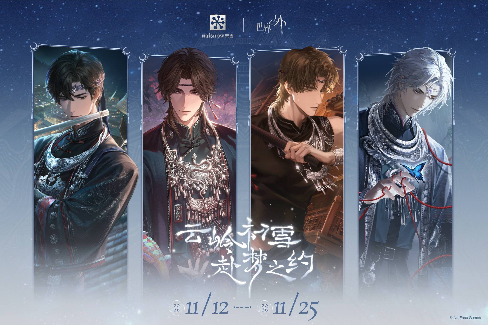
第025期收录 · 国内优秀创意案例 · 2026.11.16
喜茶 × 合味道：开「喜茶面馆」卖可以喝的生打椰拉面，用形态反差引爆社交传播
寿司郎 ×《JOJO的奇妙冒险》：把经典招式做成餐品名，让IP记忆嵌入日常用餐体验
海底捞 ×《影之刃零》：邀少侠赴江湖宴，持续打造游戏玩家线下社交场景
美团买药双11反套路广告：药品不该双十一才低价，长期价保接住民生真实需求
天猫双11 × 林简七：把降温做成脱口秀梗，用趣味内容完成过冬品类种草
喜茶 × 合味道：开「喜茶面馆」卖可以喝的生打椰拉面，用形态反差引爆社交传播
Insight：茶饮品牌联名食品IP很容易陷入“换个包装、印个logo”的贴标套路，消费者早已审美疲劳；而年轻人对“反差感”“猎奇感”的新品天然有好奇心和分享欲，把熟悉的产品做出形态上的反差，本身就是最强的社交货币。
Idea：把喜茶经典的芒椰产品和合味道标志性的杯面形态做深度结合，打造“可以喝的拉面”——上层是形似拉面的芒果条和玉米粒，下层是椰子冰沙，从杯身设计到食用体验1:1还原杯面吃面的感觉，用强烈的形态反差激发消费者好奇心和打卡欲。
Execution：11月13日上线联名新品“生打椰拉面”，奶茶杯完全沿用合味道红白经典配色，标识替换为“CUP HEYTEA”，内部双层结构还原杯面设计，附赠定制餐叉让消费者可以“吸溜吃面”，同时提供冰沙、非冰沙、热饮三个版本适配冬季需求；推出联名冰箱贴、挂件、茶杯、拉面碗等周边，购买指定套餐即可获得；全国打造208家主题门店，11月14日起到店打卡带话题发小红书可免费领取合味道经典杯面1份。
值得收录：项目跳出了茶饮联名“IP贴标”的同质化套路，不是简单把IP印在杯身上，而是从产品形态到食用体验都深度融合IP特征，“能喝的拉面”自带极强的社交传播属性，既延续了喜茶在跨界联名上的产品想象力，也为餐饮品牌联名如何真正落地到产品体验提供了参考。
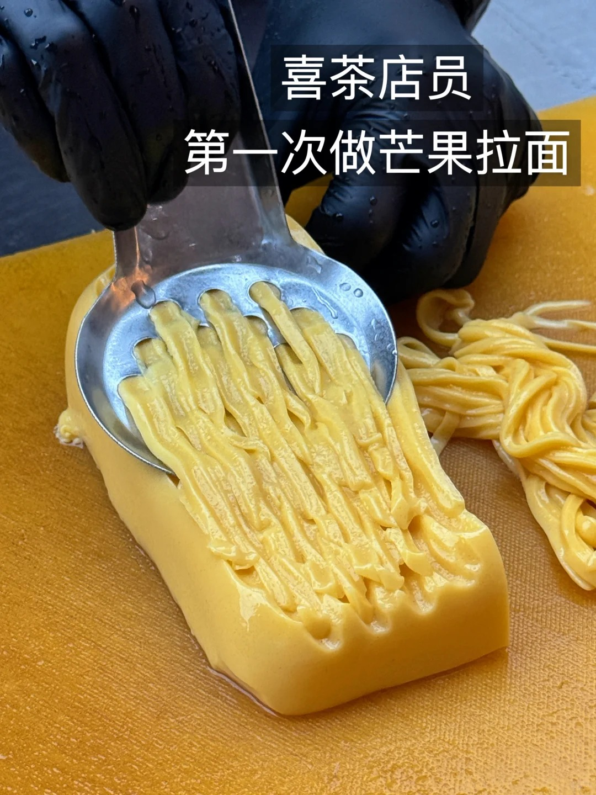
寿司郎 ×《JOJO的奇妙冒险》：把经典招式做成餐品名，让IP记忆嵌入日常用餐体验
Insight：二次元IP联名餐饮很容易只停留在“买套餐送周边”的浅层次，粉丝真正想要的是和IP内容产生深度共鸣的细节体验；JOJO作为连载三十余年的国民级IP，拥有大量辨识度极高的招式、替身、名场面设定，把这些内容细节嵌入点餐、用餐、拆周边的全流程，才能真正打动核心粉丝。
Idea：以“命运齿轮开始转动”为主题，把JOJO作品中的经典替身和招式直接对应到联名餐品的命名和设计中，让粉丝从点餐开始就能get到梗，把一顿普通的寿司变成JOJO粉丝的线下彩蛋寻宝体验。
Execution：11月9日上线第一波联名活动，餐品直接用作品经典设定命名：“THE WORLD！黄金虾天妇罗爆盛山”呼应迪奥的替身“世界”，“绿宝石水花！樱桃可露丽抹茶冰淇淋”致敬花京院典明的招牌招式；购买指定餐品可随机获得7款旅行贴纸或亚克力杯垫，另有4款联名陶瓷装饰碟可供加购；11月19日将上线第二波“星尘旅途命运羁绊5贯盛”餐品，随餐附赠7款随机亚克力立牌，两波活动错开上线为门店持续引流。
值得收录：是餐饮品牌二次元IP联名的“诚意样本”：没有消费IP情怀做敷衍贴标，而是从餐品命名到周边设计都深度贴合IP内容，把粉丝熟悉的梗和记忆点自然嵌入到点餐、用餐、收集周边的全流程中，用细节共鸣打动核心粉丝，也通过两波活动拉长了联名的生命周期。
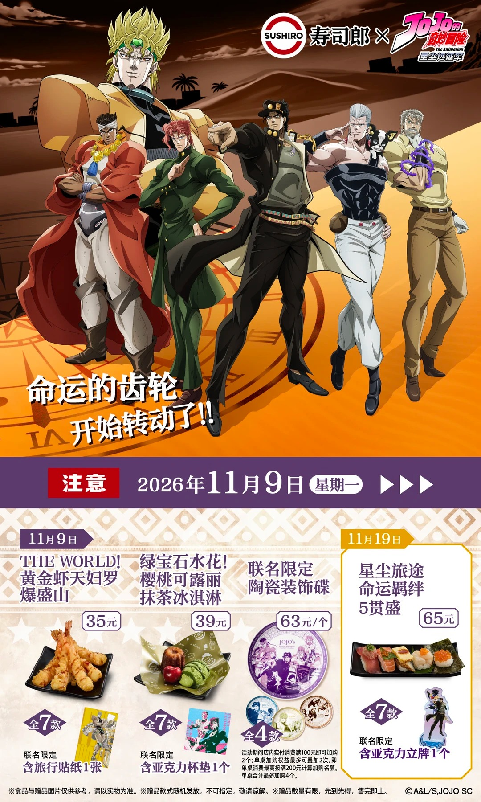
海底捞 ×《影之刃零》：邀少侠赴江湖宴，持续打造游戏玩家线下社交场景
Insight：游戏玩家的社交需求不止于线上开黑，线下聚餐、和同好见面是重要的社交场景；国产3A游戏《影之刃零》拥有浓厚的武侠江湖世界观，和海底捞“聚餐、热闹、相聚”的用餐场景天然契合，能让玩家把游戏里的江湖情怀落地到现实的餐桌社交中。
Idea：以“影境真功夫，相聚海底捞”为主题，把游戏的武侠江湖世界观延伸到海底捞线下场景，邀请玩家从游戏江湖走进现实餐桌，让一顿火锅成为玩家线下相聚、交流游戏热爱的社交场。
Execution：11月12日开启联名套餐预售，11月16日活动正式上线；官宣视频以“影境之外，故人将至”为引，用武侠风格的视觉和文案发出“江湖风云起，群侠赴宴来”的邀约；这也是海底捞继《明日方舟》《金铲铲之战》《无畏契约》等游戏IP之后，又一次和头部游戏IP的合作，持续通过游戏联名打通不同玩家圈层，把门店变成游戏玩家线下社交的固定场景。
值得收录：项目延续了海底捞“游戏玩家线下聚集地”的品牌心智，没有做复杂的创意炫技，而是精准抓住游戏玩家“线下社交、同好相聚”的真实需求，用高频的游戏IP联名逐步强化“开黑完吃海底捞”的消费习惯，是餐饮品牌绑定垂直用户圈层的长期主义样本。
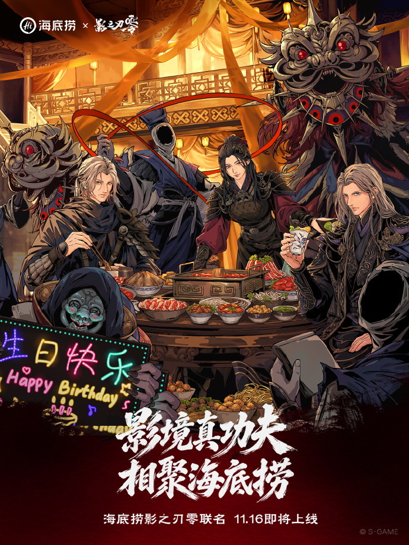
美团买药双11反套路广告：药品不该双十一才低价，长期价保接住民生真实需求
Insight：双11大促所有品牌都在喊“全年最低价”“限时抢购”，引导消费者囤货，但药品是特殊的民生商品：急用药等不了大促，慢病药需要长期服用，消费者既不该为了凑单囤药，也不该因为等促销而耽误用药，复杂的满减规则和限时低价反而会增加用药负担。
Idea：反其道而行之，打出“药品不是普通商品，不该双十一才低价”的核心主张，推出“好价不用抢，价保自动赔”服务，不搞复杂的促销规则，用长期稳定的低价和自动价保接住消费者日常用药的真实需求，和大促期间“诱导囤货、制造焦虑”的普遍营销形成强烈反差。
Execution：线下投放极简风格电梯广告，没有明星、没有夸张视觉，只用平实文字亮出核心主张，以运营团队口吻向消费者承诺：在保障基本运营的前提下进行长期补贴，药价下跌时自动退还差价；传播上延续美团买药一贯的“站在用户视角”沟通风格，和618期间“提醒消费者多比价”的内容形成呼应，始终传递“比起卖出多少药，我们更希望减轻你的用药负担”的品牌理念。
值得收录：在大促全行业都在拼低价、拼规则复杂度的氛围下，这个项目显得格外真诚：它没有为了短期GMV诱导消费者囤药，而是回归药品作为民生保障品的本质属性，用反套路的沟通方式建立用户长期信任，既体现了品牌的社会责任感，也为民生类品牌的节点营销提供了“不跟风也能出圈”的参考。
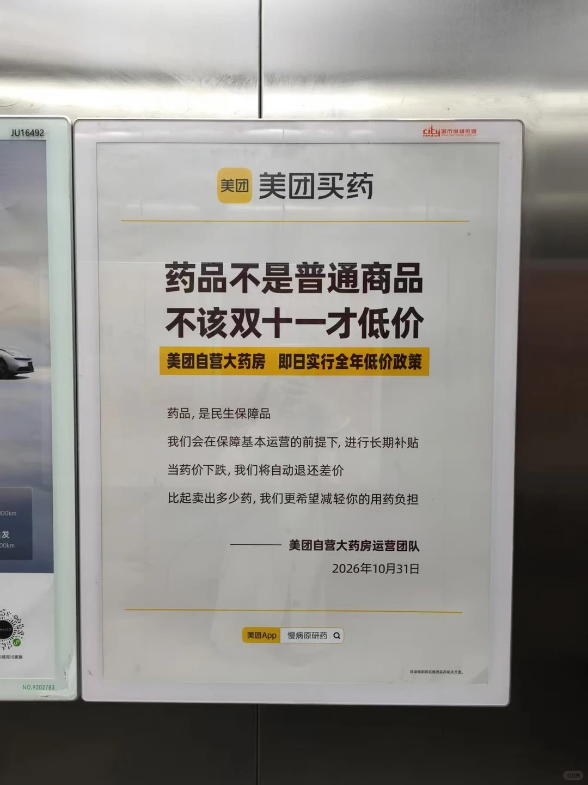
天猫双11 × 林简七：把降温做成脱口秀梗，用趣味内容完成过冬品类种草
Insight：立冬后气温断崖式下跌是全民共同的情绪点，羽绒服、取暖器等过冬好物的消费需求集中释放，但硬推商品的广告很容易引发消费者抵触；脱口秀演员林简七标志性的“意识流”冷幽默风格和降温吐槽天然适配，用造梗的方式传递消费信息接受度更高。
Idea：携手脱口秀演员林简七发起「暖场三句梗」挑战，把降温的天气话题包装成趣味造梗内容，玩“林简七=0-7°C”的谐音梗，用脱口秀式的轻松内容把“降温就上天猫买过冬好物”的心智自然传递给消费者。
Execution：线上依托林简七的脱口秀风格产出系列趣味梗图和短视频，把降温吐槽和过冬好物推荐自然结合；线下把创意延伸到城市公共空间，在上海静安寺地铁大屏投放主题内容，用林简七的形象展示不同温度对应的过冬穿搭，把抽象的降温概念转化为直观的冬季穿衣场景，延续线上话题热度的同时完成过冬商品种草。
值得收录：项目跳出了节点营销“硬喊优惠、硬推商品”的传统套路，抓住“断崖式降温”这个全民情绪点，用年轻人喜欢的脱口秀造梗方式做内容，把天气流量自然转化为消费心智，低成本实现了过冬品类的前置种草，是节点情绪营销的轻量优秀样本。
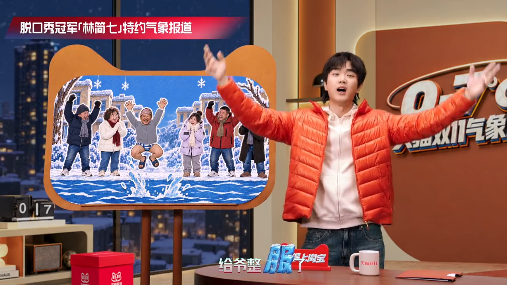
第024期收录 · 国内优秀创意案例 · 2026.11.15
WorkBuddy × 星巴克：工作日GAP HOUR，把时间还给生活
Babycare：用「守护每一片安心」回应品质风波
赛百味 × wiggle wiggle：「暖友季」开启冬日多巴胺营销
百岁山：接住网友「爆改空瓶」热潮，听劝式营销拉满好感
雪中飞：请不到飞雪CP？那就请「飞雪女儿」刘力扬
WorkBuddy × 星巴克：工作日GAP HOUR，把时间还给生活
Insight：年末职场人被周报、方案、年终PPT等工作填满，和朋友见面、线下社交成为待办列表里一拖再拖的事项，AI工具虽然提升了办公效率，但大多数品牌只强调“帮你干活”，没有回应职场人“既要做好工作，也想留点时间给生活”的真实情绪需求。
Idea：把AI效率工具的价值从“完成更多工作”延伸到“省出时间留给生活”，联合星巴克这个天然的线下社交空间，发起“工作日GAP一小时”活动，把AI提效和线下见面场景绑定，打造“AI帮你干活，你去星巴克见朋友”的价值关联。
Execution：线上推出“请你喝10万杯星巴克”活动，用户完成AI对话、邀请好友等任务即可领取咖啡券；线下在北京、上海等六城举办20余场AI办公提效Workshop，同时改造部分星巴克门店为主题打卡空间，设置“按Enter交工作、Tab切放空模式、Delete删烦恼”的互动键盘装置，参与打卡可领取联名帆布袋。
值得收录：跳出了AI工具“卷效率、卷生产力”的同质化营销套路，找到了效率工具和生活场景的情感连接点，用低门槛的福利和线下互动把产品价值落地到真实的职场人情绪中，是AI产品破圈营销的优秀样本。
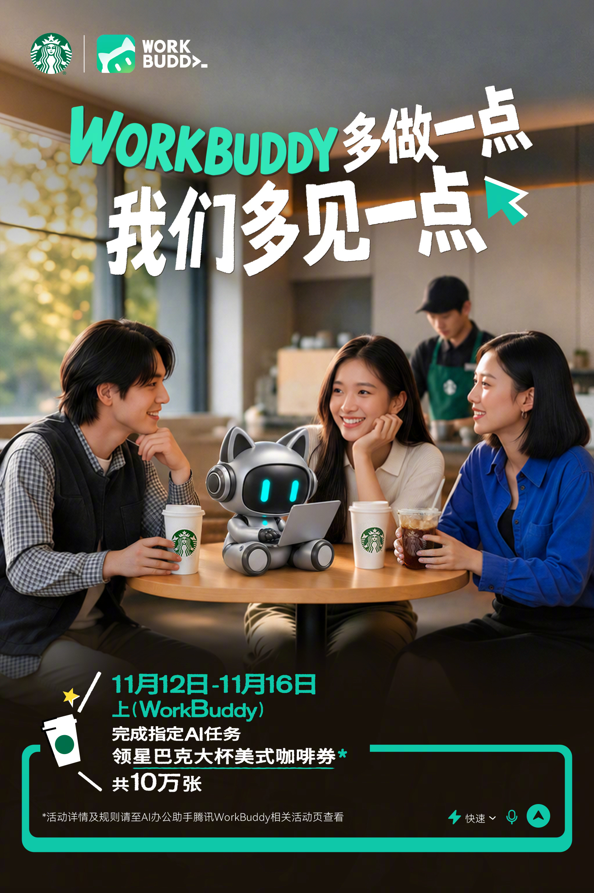
Babycare：用「守护每一片安心」回应品质风波
Insight：母婴品类的核心信任基础是“安全”，当产品遭遇公共舆论风波时，消费者需要的不是公关话术和苍白辩解，而是看得见、可验证的实际行动和透明化的品质证明，回避问题只会加重信任危机，坦诚直面、公开全链路流程才是重建信任的唯一路径。
Idea：不回避此前的纸尿裤甲酰胺争议，以“敬畏品质，不敢辜负”为核心沟通点，把四个多月来的品质核查行动完整透明地呈现给消费者，用全链路溯源体系的公开落地，完成品牌信任的重建。
Execution：发布品牌广告片《一片安心》，回应711万次用户咨询、52个尿裤型号公证送检、148款产品全面核查的行动；公开13193份COA报告及300余份原材料检测报告，邀请200位用户、媒体、专家走进工厂参观550多个质控节点；上线“安心溯源码”，消费者扫描包装即可查询对应批次的全部检测信息。
值得收录：为品牌应对公共舆情提供了教科书级别的参考：不辩解、不甩锅，用实打实的透明化行动和长期落地的溯源机制回应消费者关切，把危机转化为强化品牌“品质为先”心智的契机，真正做到了把消费者信任放在第一位。
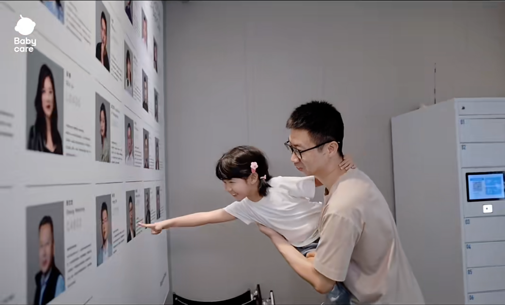
赛百味 × wiggle wiggle：「暖友季」开启冬日多巴胺营销
Insight：冬季消费场景下，消费者对餐饮的需求不止于“吃饱”，更需要温暖的情绪价值和社交分享点；连续几年的季节性IP联名已经让赛百味“冬天=热烤三明治+暖朋友”的心智逐步建立，需要新鲜的IP形象持续保持用户新鲜感。
Idea：延续“冬季暖朋友”的营销主线，携手以鲜艳多巴胺色彩和趣味设计著称的韩国生活方式品牌wiggle wiggle，把热食的物理温度延伸为陪伴、分享的情绪温度，用高辨识度的视觉风格撬动年轻用户的社交传播。
Execution：推出“多巴胺暖友天团”热烤系列新品，搭配暖绒挂件、小酌杯、联名贴纸三款周边，消费者购买指定套餐即可获得；落地上海巴黎春天淮海路联名主题店，把wiggle wiggle的标志性色彩和角色融入门店场景，同时联名形象登陆多个城市地铁站点大屏，覆盖通勤人群。
值得收录：是餐饮品牌季节性IP联名的成熟样本：没有生硬的IP贴标，而是把IP视觉风格、产品属性、季节情绪需求三者深度结合，用连续三年的冬季IP合作逐步强化品牌“冬日暖友”的差异化心智，联名周边和线下店的设计也精准踩中了年轻用户的审美和社交分享需求。
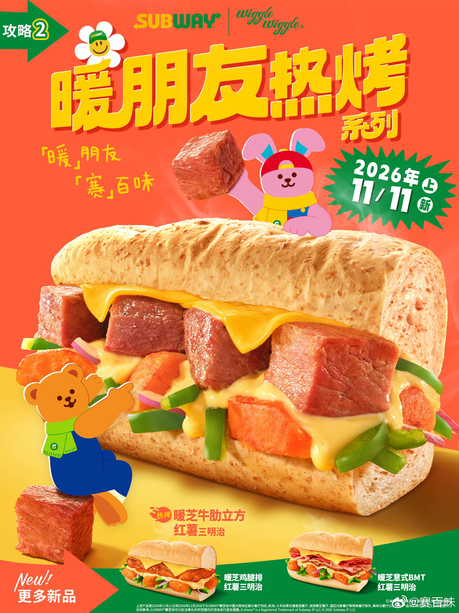
百岁山：接住网友「爆改空瓶」热潮，听劝式营销拉满好感
Insight：Z世代消费者热衷DIY和二次创作，当网友自发对品牌产品进行趣味改造形成UGC热潮时，品牌如果端着架子回避，会错过天然的流量机会，主动下场“听劝”、接住用户脑洞反而能强化品牌亲民、有审美的形象，实现低成本的口碑传播。
Idea：不干预、不制止网友自发的空瓶爆改创作，反而主动下场发起DIY大赛，把用户的自发玩梗转化为官方主导的用户共创活动，既接住了流量，也顺势传递品牌瓶身设计、产品品质的核心优势。
Execution：小红书网友自发用百岁山空瓶DIY手工摆件、气动力小车形成传播热潮后，百岁山官方迅速响应，在小红书发起“手作贵族DIY小赛”向全网发出共创邀请；传播内容中自然带出品牌瓶身设计灵感（岩层凹槽造型）、德国克朗斯生产线的品质优势，把UGC热度转化为品牌认知。
值得收录：是“听劝营销”的又一优秀案例：品牌没有自说自话讲设计、讲品质，而是把话语权交给用户，让用户的创作成为品牌最好的广告，官方下场的姿态既拉满了好感度，也在无形中强化了百岁山“有设计感、品质过硬”的品牌认知，实现了品牌和用户的双向奔赴。
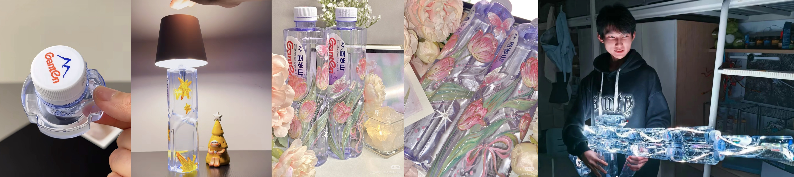
雪中飞：请不到飞雪CP？那就请「飞雪女儿」刘力扬
Insight：综艺《后会友期》带火的“飞雪CP”（许飞×厉娜）成为全网玩梗热点，品牌名“雪中飞”和CP名天然重合，是天选的借势机会；但热点窗口期极短，硬蹭CP容易引发粉丝反感，找到既贴合梗点、又符合粉丝玩梗逻辑的切入点才能既接住流量又不招黑。
Idea：不硬蹭当事人热度，顺着粉丝“刘力扬是飞雪女儿（军娃）”的玩梗逻辑，把羽绒服产品寄给刘力扬，做“飞雪女儿的商务”，既接住了CP热度，又给网友提供了新的玩梗素材，用四两拨千斤的方式完成品牌曝光。
Execution：在网友@品牌接梗的第一时间快速响应，先是以飞雪名义给粉丝送福利预热，随后公布和刘力扬的合作，发布产品体验内容，玩梗话术完全贴合粉丝语境——“这是飞雪的商务，不是军娃的商务，但是因为飞雪，军娃也可以有这样的商务”，引发粉丝自发二次传播。
值得收录：是热点借势营销的轻量样本：没有高额代言费、没有复杂campaign，完全顺着网友的玩梗逻辑找切入点，反应快、姿态低、梗点准，用极低的成本实现了品牌名和热点的强绑定，既获得了曝光，又赢得了玩梗网友的好感，是小成本热点营销的典型参考。
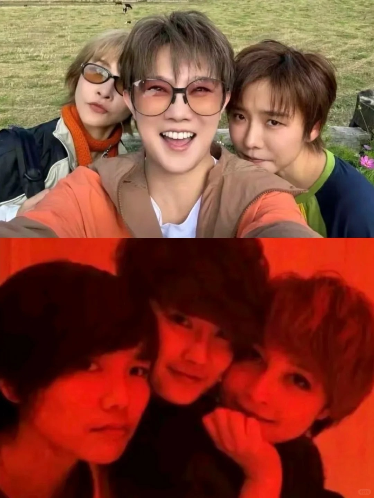
第023期收录 · 国内优秀创意案例 · 2026.11.14
京东重阳节：家，会为爱改变2次，用最朴素的类比打通适老化情感认知
Columbia×蒋奇明：计划不如现挂，野生片场把“没准更好玩”拍成真
邮储银行信用卡《周六爱五折》：银行放下身段拍狗血三角恋，洗脑神曲记住权益
南食召中秋《团圆的配方》：用配料表写情感，把一餐一饭里的爱拆给你看
金典「猫咪落户计划」：给流浪猫拍证件照建档案，用萌感降低公益参与门槛
京东重阳节：家，会为爱改变2次，用最朴素的类比打通适老化情感认知
Insight：大众普遍会本能地为孩子改造居家环境（添置餐椅、马桶梯、防护角等），却很少主动为老去的父母做适老化调整，总默认父母“还很硬朗”，直到意外发生才补救。适老化改造常被标签化为“失能后才需要的补救”，而非日常主动的关爱，大众对“像爱孩子一样爱父母”的情感认知存在断层。
Idea：提出核心主张“家，会为爱改变1次，但不该只有1次”——将儿童居家防护与老人适老化改造做直接类比，把适老化重新定义为爱的延续性行为，触发大众“用本能的爱去爱父母”的情感共鸣。
Execution：视觉上用对比海报呈现“为孩子改变”和“为父母改变”的平行场景（儿童餐椅vs适老座椅、小夜灯vs感应夜灯、马桶梯vs扶手），直观传递“第二次改变”的概念；发布品牌短片讲述不同家庭的适老改造故事，消解适老化的“沉重感”；联动京东适老家居品类专区落地，从情感沟通延伸至消费转化；作为京东「搭把手计划」第四年内容，延续银发群体关怀的长期品牌叙事。
值得收录：项目跳出了节日公益广告“卖惨煽情”的套路，用极其朴素却有力量的类比打通了大众情感盲区，把原本冰冷的适老产品转化为爱的载体；既强化了京东“有温度的电商平台”心智，也切实推动了适老化改造的社会认知，实现社会价值与商业价值的统一。
Columbia×蒋奇明：计划不如现挂，野生片场把“没准更好玩”拍成真
Insight：户外品牌营销普遍陷入“征服高山、堆砌装备、秀完美大片”的套路，普通大众玩家对这种“摆拍式户外”已经审美疲劳；而资深户外玩家真正享受的，恰恰是旅途中计划外的意外、翻车、即兴的乐趣——如何看待自然中的未知，正是普通玩家和高阶玩家的分水岭。
Idea：提出品牌态度“没准儿更好玩”，用“野生现挂片场”的拍摄方式，让蒋奇明在阿尔山的自然环境里自由即兴发挥，把所有拍摄事故、翻车、意外全部保留为正片素材，让slogan不是喊出来的，而是亲身经历出来的。
Execution：拍摄全程弱化脚本、不喊cut，跟着蒋奇明的即兴行动走：喂马被拒、抢摄像机、给田鼠收音、即兴吐槽台词等所有“意外”全部剪进正片；除蒋奇明外，还邀请徒步2万公里的张诺娅、探钓玩家Patrick拍摄另外两支人物小片，用不同圈层资深玩家的故事丰富主题；配套海报、社媒内容延续“没准更好玩”的松弛态度，打破户外品牌“硬核说教”的刻板印象。
值得收录：项目打破了户外广告的创作惯性，用极度真诚的“不完美”内容打动观众，蒋奇明的个人特质与品牌态度高度契合；它成功帮助Columbia完成了从“号召大家入坑的户外宣传员”到“资深玩家同行者”的品牌身份升级，让“松弛户外”的理念真正落地。
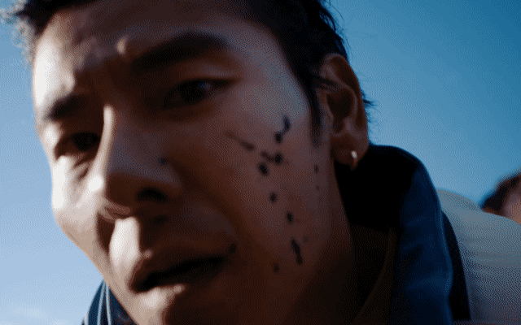
邮储银行信用卡《周六爱五折》：银行放下身段拍狗血三角恋，洗脑神曲记住权益
Insight：银行促销广告普遍端着、生硬，干巴巴的权益信息消费者根本记不住；而打工人对“周六加班”深恶痛绝，对“周六吃喝玩乐五折”有天然的向往，两者形成强烈的情绪冲突点。
Idea：把抽象的权益概念拟人化——将「周六」和「五折」设定为一对情侣，「加班」设定为破坏感情的反派，用狗血三角恋爱情广告剧的形式，把“周六五折”这个干巴巴的权益信息变成消费者愿意追更的故事。
Execution：推出三集系列广告短片，讲述“周六”和“五折”从相识、相爱到结婚的全过程，插入“加班”抢人的戏剧冲突，融入背锅、大饼、KPI、PUA等打工人烂梗，笑点密集代入感强；配套洗脑神曲反复唱“周六五折，永远在一起”，降低记忆门槛；发布悬念预热海报、系列表情包等物料在社媒传播，引发打工人自发转发。
值得收录：银行品牌放下身段玩梗是这个项目最大的亮点，它没有试图把促销广告做得高级，而是用最接地气的狗血短剧+洗脑神曲，让“周六五折”的权益点真正打进用户心智；项目上线后在社交平台反响热烈，完美实现了消费旺季绑定核心权益的传播目标，证明“不端着”的金融品牌营销同样可以获得行业和消费者的双重认可。
南食召中秋《团圆的配方》：用配料表写情感，把一餐一饭里的爱拆给你看
Insight：中国人的情感表达向来含蓄，很少直接说“我想你”“我爱你”，所有的关心和惦念都藏在一餐一饭里；而当代人的团圆早已不是“三代同堂一桌满汉全席”的标准化想象，亲子陪伴、夫妻相守、异地云吃饭、老友重逢都是团圆的模样。
Idea：借用品牌熟悉的“食物配方”概念，提出“每一场团圆，都有自己的配方”，把抽象的团圆情感拆解成类似食品配料表的可量化成分，让看不见摸不着的爱与陪伴，锚定在厨房的具体尺度里。
Execution：拍摄四支一镜到底的短片，分别讲述亲子陪伴、老夫妻相守、异地云吃饭、老友重逢四种团圆场景，每支结尾用极简的“配料表”形式列出团圆的成分（如“鲜美鸡粹两小撮、切得乱七八糟的菜丁一大盘、天真的爱一小份”）；推出“团圆的配方”中秋限定礼盒，将月饼与日常烹饪食材组合，搭配可填色互动周边；联动旗下盘菜生书店推出家宴主题书单，线上发起家宴菜单征集，线下门店设置“团圆灵感墙”，形成从情感共鸣到生活参与的完整链路。
值得收录：项目跳出了中秋营销“月亮、团圆、煽情”的同质化套路，用“配方”这个极具品牌辨识度的创意形式，把食物与情感做了极其巧妙的连接；文案温柔克制，细节充满生活毛边，全网曝光860w+、互动25w+，既强化了南食召“在家做饭、好好吃饭”的品牌主张，也为中小品牌的节日营销提供了“不砸钱也能出好创意”的范本。
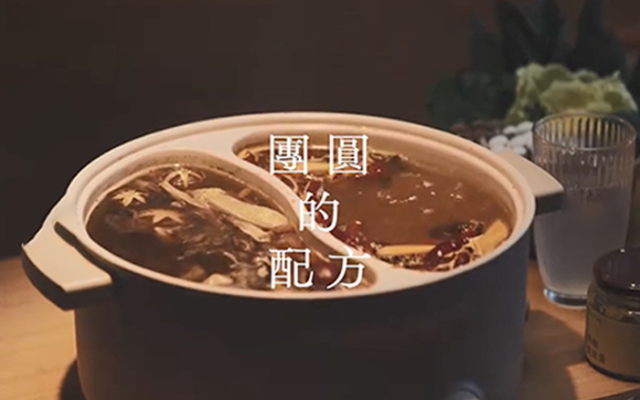
金典「猫咪落户计划」：给流浪猫拍证件照建档案，用萌感降低公益参与门槛
Insight：中国有约5000万只流浪猫，但大众对流浪猫的认知往往是模糊的“流浪动物群体”符号，缺乏具体的个体感知；普通公益领养文案常走“卖惨”路线，容易引发大众心理防御，而萌感、正式感的“仪式感”反而能降低参与门槛，激发共情。
Idea：以“落户”为创意切口，给被救助的流浪猫拍正式证件照、建立包含名字、年龄、性格、“MiaoBTI”人格标签的完整档案，把模糊的流浪猫群体转化为有姓名、有故事的鲜活个体，用萌感消解公益的沉重感，让“被看见”成为领养的第一步。
Execution：邀请宠物摄影师克查为流浪猫拍摄“证件照”，融合实拍与AI动画制作短片，记录拍摄过程中猫不配合的趣味瞬间；上线小程序展示待领养猫咪完整档案，用户可直接提交领养申请；在北京798设置线下“相遇角”，把猫咪证件照做成类似相亲角的展陈，让线下访客可以直观了解猫咪信息；产品端设置开箱扫码公益机制，消费者每扫一个码金典捐0.1元用于流浪动物救助，领养后持续跟进回访保障落地质量。
值得收录：项目把公益营销从“喊口号捐钱”的老套路里解放出来，用“落户”“证件照”“MiaoBTI”这些极具网感又温暖的创意，把严肃的流浪动物救助变成了大众愿意参与、愿意传播的萌事；线上线下链路完整，真正实现了“从看到到领养/捐赠”的转化，既传递了金典“爱生万物”的品牌理念，也切实帮助了流浪动物找到新家。
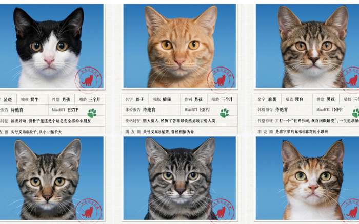
第022期收录 · 国内优秀创意案例 · 2026.11.13
京东七鲜超市太原开业：入乡随俗先睡午觉，用在地文化把“24小时鲜”讲成城市梗
蕉内新疆棉溯源：让棉花工人自己写文案，真实的声音最打动人
抖音非遗嘉年华福州站：20米巨型福鱼飞上天，把非遗从屏幕里搬到城市上空
天猫618「人人都可以做导演」：14支AIGC脑洞短片，验证AI营销商业化可行性
巴拉巴拉《中国小朋友2》：不祝你成功，祝你活在热爱里
京东七鲜超市太原开业：入乡随俗先睡午觉，用在地文化把“24小时鲜”讲成城市梗
Insight：新品牌进入区域市场，最容易陷入“开业打折、促销倒计时”的同质化营销陷阱；而太原有全国知名的“爱睡午觉”城市文化标签，消费者对“懂本地文化”的品牌天然有好感；同时七鲜核心卖点是“24小时从田间到货架，只卖当天”——食材不能提前备货，开业前员工反而“没事干”，刚好和“睡午觉”的在地文化形成完美逻辑嫁接。
Idea：一反常规开业营销的热闹倒计时，让品牌IP JOY在门店所在商圈的裸眼3D大屏上连睡6天午觉，用反差感制造全城悬念，最后一天反转揭晓“越睡越新鲜”的核心卖点，把一次商业开业变成太原人会心一笑的城市公共事件。
Execution：开业前6天，公元时代城户外大屏只播放JOY在空货架前酣睡的裸眼3D动画，文案配“初来乍到入乡随俗先睡午觉”“货架空着接着躺时候未到”，完全不露出开业和促销信息，引发市民大量猜测和自发传播；开业当天JOY“醒来”开始上架新鲜食材，打出“24小时从源头到货架只卖一天”“真新鲜看得见”的slogan；同步配套地铁通道沉浸式体验、核心站点创意包柱、城市巡游大巴形成全城传播矩阵。
值得收录：区域品牌冷启动的经典样本，完美示范了“在地文化洞察+公共空间事件化”的营销逻辑：没有硬推产品卖点，而是先接住本地人的文化共鸣，用悬念反转把供应链优势变成消费者可感知的记忆点；最终开业前3天客流近20万人次，带动商场客流同比增长90%，刷新太原超市新店开业纪录，零硬广撬动了全城级自来水传播。
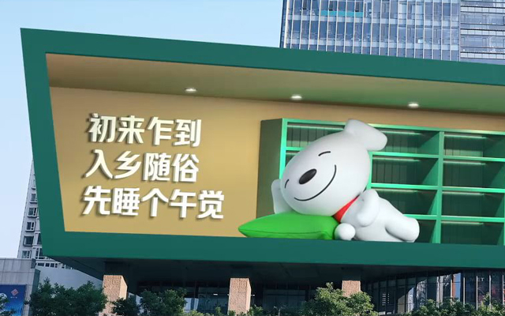
蕉内新疆棉溯源：让棉花工人自己写文案，真实的声音最打动人
Insight：品牌溯源类内容很容易拍成“风景大片+企业自夸”的自嗨模式，消费者早已审美疲劳；关于新疆棉的舆论长期被外部刻板印象主导，普通人很难看到真实的新疆棉农和现代化棉花产业的面貌；比起品牌方精心打磨的华丽文案，劳动者自己的语言更有原生的感染力和说服力。
Idea：放弃专业文案团队操刀产品详情页，直接把笔交给新疆的棉花工人，让他们用自己的话描述亲手种出来的棉花，用最真实的声音打破刻板印象，同时完成产品卖点的传递。
Execution：团队深入新疆棉田，邀请一线棉花工人为蕉内“白胖棉”系列写产品文案，工人写出“像阿妈的心一样软”“和我一样喝天山雪水长大的纯得很”“劲儿足扯不断拉得长”等朴实又有力量的句子，全部直接用到商品详情页、社交传播物料和广告片中；同步推出幕后创作实录纪录片，记录棉田的真实生产场景和工人的生活状态，没有刻意煽情，只做真实记录。
值得收录：品牌善意的正确表达方式：不是替弱势群体说话，而是把话筒递到他们手里；项目总投入仅60万元，撬动总曝光560万+，免费媒体曝光占比达440%，不仅打破了外界对新疆棉花的刻板印象，更让产品卖点有了情感温度，成为近年品牌溯源营销的标杆案例。
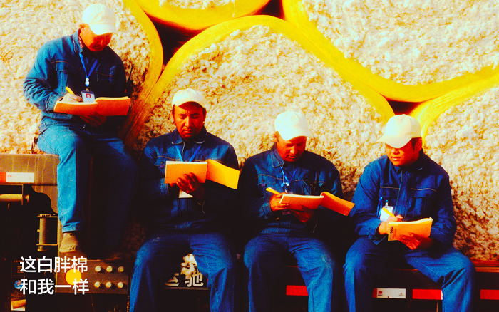
抖音非遗嘉年华福州站：20米巨型福鱼飞上天，把非遗从屏幕里搬到城市上空
Insight：非遗传播长期面临“官方唱戏、观众旁观”的困境，内容要么停留在屏幕里的纪录片，要么是线下静态展览，普通人很难产生参与感；非遗活动如果只是“飘个空飘、请个明星”，很容易沦为一次性的地方文旅活动，无法形成全网级传播声量。
Idea：以《山海经》里的“飞鱼”为原型，结合福州“有福之州”的城市文化和“年年有余”的吉祥寓意，打造20米长的巨型“福鱼”空飘作为核心视觉符号，通过“预热造悬念-明星带参与-素人传内容”的传播节奏，把一场平台非遗活动变成全城参与、全网刷屏的城市级文化事件。
Execution：预热期邀请非遗手艺人@南翔发布“手搓会飞的鱼”视频，单条获赞140万+，#元宵节一定要去福州接福鱼 话题冲上抖音总榜第一，霸榜9城同城榜TOP1；元宵节当天20米福鱼在三坊七巷升空，毛晓彤化身“非遗公主”现场领舞，推出AI合拍特效带动全网UGC，#与福鱼合拍我的新年大片 登上挑战榜TOP1；后续6天通过非遗达人集结、巡游方阵、本地KOC多角度拍摄等节奏持续制造热点，全程拿下58个全网热榜。
值得收录：探索出了非遗年轻化传播的可复制方法论：一个和城市强绑定的文化符号+一个有文化出处的故事+一个适配的明星+一层说人话的KOC传播网络；最终活动总曝光16.8亿，10万+用户自发生产内容，让非遗从“隔着屏幕被观看”变成了“伸出手就能参与”，真正实现了非遗文化的破圈传播。
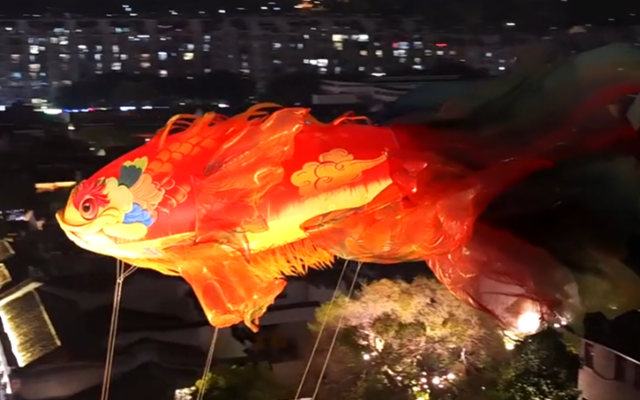
天猫618「人人都可以做导演」：14支AIGC脑洞短片，验证AI营销商业化可行性
Insight：AIGC营销长期停留在“技术炫技”“单支实验短片”的阶段，品牌和代理商普遍不知道如何规模化、商业化地用AI产出营销内容；618大促各品牌都在打价格战，单纯讲“优惠”很难在海量信息中被消费者记住，需要有足够有记忆点的创意内容突围。
Idea：以“脑洞”为核心创意，联合14个头部品牌、11组前沿AI艺术家，用“天猫+品牌+AI艺术家”三方共创的模式，打造14支风格迥异的荒诞搞笑AI短片，把每个品牌的核心卖点转化为脑洞大开的剧情，形成AI短片版“爱死机”，既验证AIGC规模化营销的可行性，又用有趣的内容强化天猫618“大牌脑洞价到”的心智。
Execution：团队摸索出了一套适配AI内容生产的工作流：先从品牌核心卖点出发构思有冲突感的剧情脚本，再通过“关键词调教+参考图喂图+逐帧修复”的方式和AI艺术家共创内容，每个短片匹配独立的视觉风格，包括鸿门宴上刘邦坐科勒马桶不想起身、夸父逐日被新能源汽车追到破防等荒诞剧情；全案2个月内产出14支成片，在618期间全渠道投放，配套幕后创作实录公开AI生产全流程，引发行业广泛讨论。
值得收录：首个实现规模化商业落地的AIGC营销案例，验证了AIGC从技术实验进入商业营销主战场的可行性；项目最终总曝光17.7亿+，TVC播放量超千万，达人千赞爆文率达76.5%，不仅为品牌带来了声量，更为整个行业输出了可复用的AI内容生产方法论。
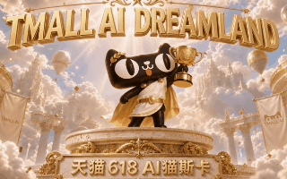
巴拉巴拉《中国小朋友2》：不祝你成功，祝你活在热爱里
Insight：20年前“童年不同样”的品牌主张切中了经济上行期家长希望孩子个性化、拔尖的养育需求；20年后，从小被要求“有出息”的一代成为父母，在经历过真实世界的不确定性后，不再把“成功”作为对孩子的唯一期待，反而更希望孩子能拥有自己的热爱，活出自己喜欢的样子。
Idea：推出全新品牌主张“活在热爱里”，用37个真实小朋友的热爱故事拍摄品牌纪录片，不做说教，不刻意煽情，用真实的力量打动消费者，把品牌从“童装销售者”升级为“儿童成长议题参与者”，建立新一代父母的情感共鸣。
Execution：拍摄《中国小朋友2｜活在热爱里》纪录片，记录了爱昆虫的小女孩、练拳击的4岁男孩、爱画画的小朋友、组乐队的小学生等37个真实孩子的热爱故事，文案“不祝你成功，祝你在漫长的一生中活在热爱里”戳中无数家长；同步邀请家长写家书、邀请戴建业教授聊教育观，真实家书投放全国7大城市地铁；联合十余家儿童品牌打造2500㎡儿童友好热爱社区落地上海徐汇滨江，登上新闻联播；全球4000家门店改造为热爱主题门店，带动balaT首月销售额突破2.7亿。
值得收录：国民品牌升级的经典案例，精准捕捉到了新一代父母养育观念的代际变迁，用真实的情感内容完成品牌主张的迭代，没有停留在广告片层面，而是通过线下落地、社会议题参与，把品牌主张变成了全社会共同讨论的养育观话题；最终全网话题曝光超18亿，真正实现了品牌价值和社会价值的双赢。
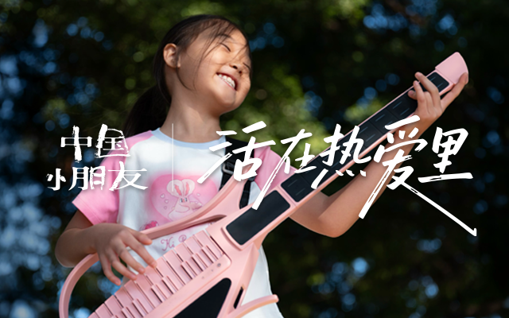
第021期收录 · 国内优秀创意案例 · 2026.11.12
瑞幸咖啡 × Polo Ralph Lauren："老钱风拿铁"联名，把高端时尚调性融入日常咖啡场景
抖音商城双11《购物诗》：把普通人的购物小票写成诗，挖掘日常消费里的情感价值
小红书REDone"好品味商店"上海快闪：把线上审美社区落地成可逛可买的线下体验空间
茉莉奶白"栀子奶白"系列上新：东方花香叙事，把国风美学植入日常茶饮体验
Polo Ralph Lauren 2026冬季假日系列：《一起回家》温情短片，用中国式家庭故事传递节日温度
瑞幸咖啡 × Polo Ralph Lauren："老钱风拿铁"联名，把高端时尚调性融入日常咖啡场景
Insight：2026年"老钱风"审美持续流行，年轻人对低调、有质感、经典不过时的风格追捧度极高；而高端时尚品牌Polo Ralph Lauren正在尝试触达更年轻的消费群体，瑞幸则希望通过跨界高端品牌提升自身的品牌调性，双方在受众和品牌诉求上高度契合。
Idea：推出联名款"老钱风拿铁"，以Polo Ralph Lauren经典的马球logo、美式复古校园风格为设计核心，从产品包装、周边门店装饰全维度还原"老钱风"质感，让消费者用一杯咖啡的价格就能获得高端时尚品牌的体验，实现双方品牌调性的双向赋能。
Execution：联名产品采用Polo经典的藏青、米白、酒红配色，杯套、纸袋印上标志性的小马球logo，同步推出针织杯套、复古棒球帽、帆布托特包等周边，还原美式常春藤风格；全国多家门店换上联名主题装饰，设置打卡点；上线相关短视频话题挑战，邀请时尚、生活类达人晒出"老钱风穿搭+咖啡"的搭配，相关话题上线3天播放量破5亿，产品上线首日多地售罄。
值得收录：咖啡品牌与高端时尚品牌联名的成功样本，没有生硬的IP贴图，而是精准抓住当下流行的"老钱风"审美趋势，把品牌调性和产品设计深度结合，既帮助高端时尚品牌触达了年轻消费群体，也让瑞幸在保持高性价比的同时提升了品牌质感，实现了声量和销量的双赢。
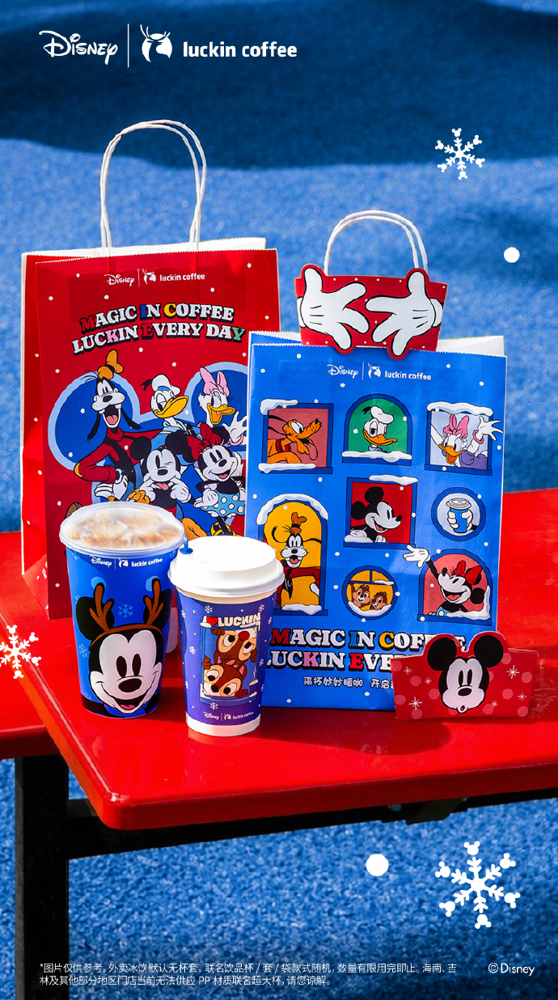
抖音商城双11《购物诗》：把普通人的购物小票写成诗，挖掘日常消费里的情感价值
Insight：双11营销长期被"最低价""补贴""买买买"的功利性叙事占据，消费者对大促的情感感知越来越弱；而每一张购物小票背后，都是普通人具体的生活：给家人买的礼物、给自己的奖励、为爱好投入的开销，这些日常消费里藏着很多未被言说的情感。
Idea：发起#把购物小票写成诗 活动，邀请用户分享自己双11的购物小票，把小票上的商品名改写成诗歌，挖掘日常消费背后的情感故事，跳出低价促销的同质化叙事，让双11从"薅羊毛的购物节"变成"记录生活的情感载体"。
Execution：品牌首先发布系列短片，展示不同用户的真实购物小票：给爸爸买的护膝、给猫买的罐头、给自己买的考研资料，把这些普通的商品名串联成温暖的小诗；上线AI写诗工具，用户上传自己的购物小票就能自动生成专属诗歌，邀请诗人、作家、普通用户共同参与创作；优质作品在北京、上海的地铁站灯箱展出，让普通人的生活诗意被更多人看见，活动相关话题阅读量破10亿。
值得收录：大促情感营销的优秀样本，跳出了电商平台大促必谈低价的固化思路，回归消费背后的"人"本身，用诗意的方式唤醒消费者对日常消费的情感记忆，既提升了平台的温度感，也让双11拥有了除促销之外的情感价值，在一片低价叫卖声中形成了极强的差异化记忆点。
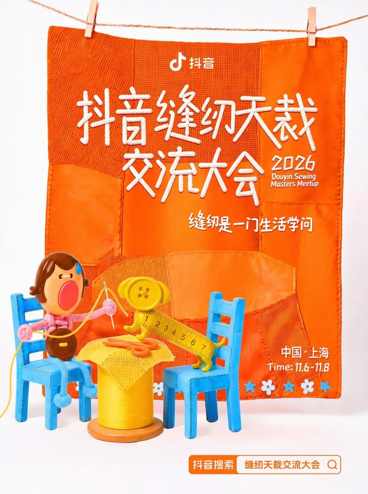
小红书REDone"好品味商店"上海快闪：把线上审美社区落地成可逛可买的线下体验空间
Insight：双11期间各大平台都在主打低价、销量，但小红书作为审美内容社区，核心优势是"发现好东西"的种草心智，用户更愿意为有设计感、有品质、符合自己审美的商品付费，单纯的价格战不符合平台调性。
Idea：伴随REDone年度好品味计划上线，在上海延庆坊开出"小红书特产商店"快闪店，把线上甄选的"好品味"商品搬到线下，让消费者可以真实触摸、体验、购买，把线上的种草心智落地成可感知的线下逛购体验，强化小红书"好品味购物指南"的平台定位。
Execution：快闪店选在上海网红街区延庆坊，联合街区内的花店、咖啡馆、独立书店共同打造"好品味地图"逛购路线，和花店合作推出文字花束、把普通的水桶椅变成宣传载体，整条街变成沉浸式体验空间；店内陈列从美妆、家居、服饰到食品的百余件甄选好物，全部不按销量排名，而是按照审美、工艺、原创、品质、独特性五个维度筛选；现场设置REDone定制区、打卡点，配合达人探店、专场直播，形成线下体验到线上种草购买的闭环，快闪期间日均到访量破万。
值得收录：内容平台线下落地的优秀样本，没有把快闪店做成简单的商品售卖点，而是深度融入街区日常，把平台的审美心智从线上延伸到线下，既为中小特色品牌提供了曝光机会，也强化了小红书差异化的大促定位，证明了电商平台不只有低价这一条路可走，好品味同样可以成为核心竞争力。
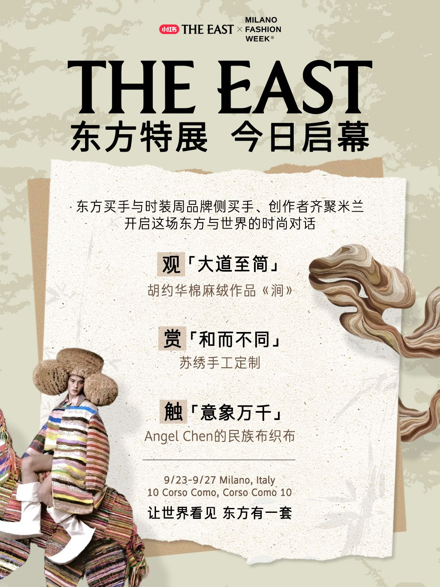
茉莉奶白"栀子奶白"系列上新：东方花香叙事，把国风美学植入日常茶饮体验
Insight：新茶饮赛道产品同质化严重，各大品牌都在推花香类奶茶，但大多只停留在口味层面，缺乏记忆点；年轻消费者对东方美学、国风文化的追捧度持续升高，不再满足于好喝，更希望消费的产品有文化内涵和审美价值。
Idea：推出"栀子奶白"全新产品线，以栀子花为核心元素，从产品口味、包装设计、周边物料全维度融入东方美学，把"栀子花开"的夏日记忆和东方白花的清雅质感结合，打造有文化辨识度的国风茶饮产品。
Execution：产品选用浙江兰溪露天种植的栀子花，窨制三次得到栀子绿茶底，搭配鲜牛奶呈现奶白透绿的视觉效果，呼应"栀子奶白"的命名；包装采用米白+浅绿的素雅配色，印有手绘栀子花图案，同步推出栀子花香包、团扇、陶瓷杯等国风周边；门店换上栀子主题装饰，举办"栀子花开"主题快闪活动，设置古风打卡点，邀请消费者书写与栀子花相关的记忆；上线后相关话题在小红书、抖音获得超3亿曝光，产品首周日销量突破100万杯。
值得收录：新茶饮国风营销的细腻样本，没有生硬堆砌国风符号，而是从产品本身的口味、视觉出发，把东方美学自然融入产品体验的每一个细节，用栀子花这种大众有共同情感记忆的花卉作为切入点，既强化了品牌"东方花香茶饮"的定位，也让国风不再是营销噱头，而是成为产品本身的一部分。
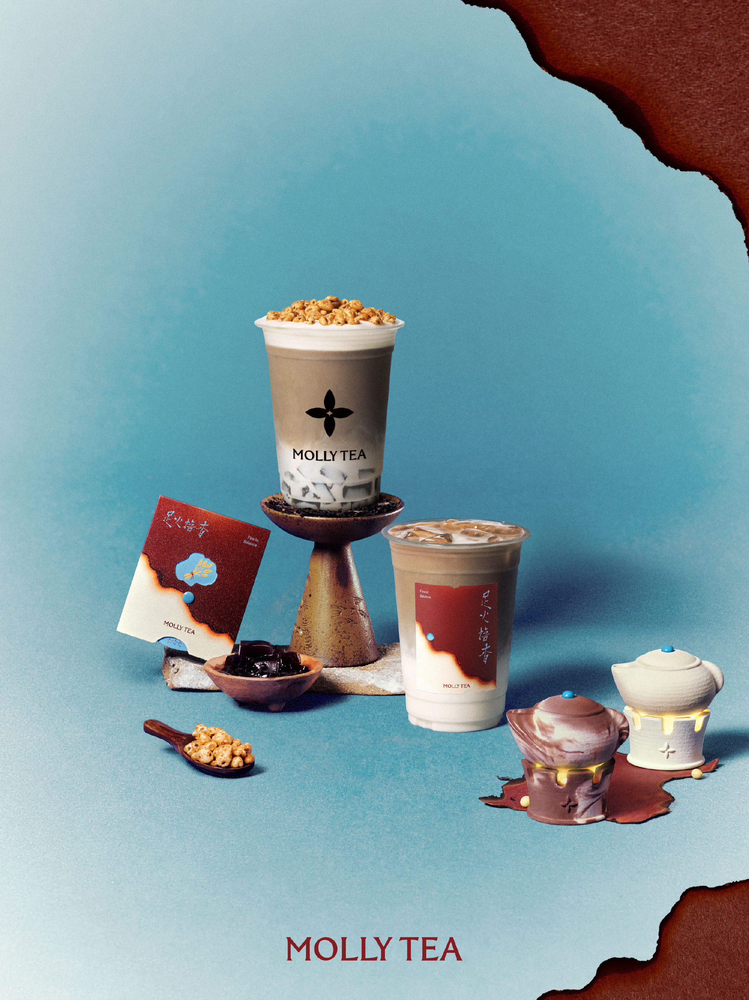
Polo Ralph Lauren 2026冬季假日系列：《一起回家》温情短片，用中国式家庭故事传递节日温度
Insight：国际奢侈品牌的节日营销往往主打西方圣诞场景、精英生活方式，和中国消费者的情感距离较远；而年末假日季，中国人的核心情感是"回家"，家庭、团圆、温暖是共同的情感诉求，国际品牌需要用更本土化的故事打动中国消费者。
Idea：推出2026冬季假日系列品牌片《一起回家》，放弃传统的西方圣诞叙事，转而讲述一个普通中国家庭三代人春节回家团圆的故事，把品牌经典的服饰融入中国式家庭的日常场景，传递"家是最温暖的目的地"的节日主张，拉近和中国消费者的情感距离。
Execution：短片由中国导演拍摄，演员全部是中国面孔，场景从北方雪乡到南方弄堂，呈现贴春联、包饺子、放烟花、全家吃年夜饭等经典春节场景，主角一家穿着Polo Ralph Lauren的冬季系列服饰，没有刻意的产品特写，服饰自然融入家庭生活的细节中；同步推出春节限定系列服饰，融入中国红、小马球刺绣等元素，在上海、北京的旗舰店设置家庭合影打卡点，邀请消费者拍摄全家福，相关短片上线3天播放量破2000万。
值得收录：国际品牌本土化营销的优秀样本，没有生硬嫁接中国元素，而是真正理解中国人年末"回家团圆"的核心情感，用真实、细腻的家庭故事引发共鸣，既展示了冬季系列产品，又传递了品牌的温度感，证明了国际品牌在中国做节日营销，真正的本土化不是加几个中国符号，而是讲好中国人自己的情感故事。
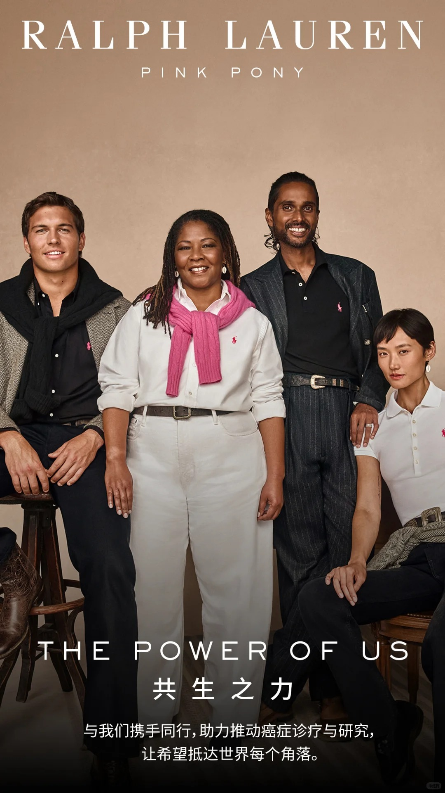
第020期收录 · 国内优秀创意案例 · 2026.11.11
999感冒灵×立冬地铁"提前供暖"：把抽象温暖变成可感知的城市互动
ukiss × Pingu：给打工人的"妆"态松松绑，用IP传递松弛生活态度
MANNER × THE MONSTERS：京津冀限定联名，把潮玩仪式感融入日常咖啡场景
美团"留住童年老味道"：从情感唤起走向实际经营支持，做有温度的本地生活平台
茉莉奶白入鄂三周年"醉鸟"：用武汉方言和本土食材，做最接地气的区域营销
999感冒灵×立冬地铁"提前供暖"：把抽象温暖变成可感知的城市互动
Insight：立冬后北方气温骤降，但北京、天津等城市正式供暖还有10天左右的温度断档期，通勤人群在地铁站等公共空间体感寒冷，对“温暖”的情感需求和物理需求同时达到峰值；品牌此前已经建立了“温暖陪伴”的心智，但需要更具象、可互动的线下场景落地。
Idea：把地铁站墙面变成“可撕取的公共暖气片”，用3万个做成感冒灵冲剂形状的暖宝宝免费发放，让“999送温暖”从 slogan 变成路人可以真实摸到、带走、分享的体验，填补供暖前的情绪和体感空白。
Execution：在北京朝阳门地铁站、天津金街地铁站铺设五面主题墙，将3万个设计成999感冒灵冲剂样式的暖宝宝贴在仿真暖气片造型的墙面上，路人可免费撕下取用；当所有暖宝宝被取完后，墙面会露出完整的暖气片视觉，带来双重暖意；延续品牌线下创意的一贯思路，把关怀嵌入城市通勤的缝隙里。
值得收录：是品牌“线下温度营销”的又一典型样本，没有硬广植入，完全从用户真实的体感痛点出发，用极低的成本完成了强互动、高传播的场景渗透，把品牌“温暖”的抽象心智落地成了城市公共空间里的小确幸，也让999感冒灵的品牌形象从“感冒才需要”变成了“日常给你暖意”。
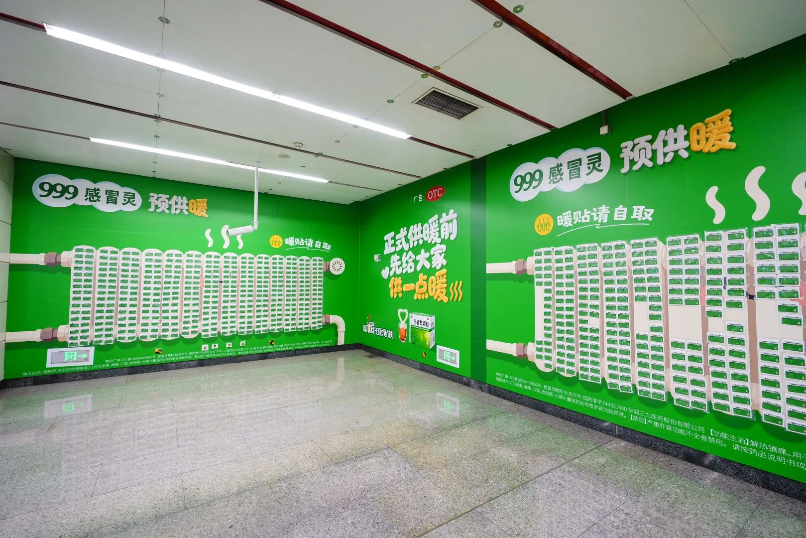
ukiss × Pingu：给打工人的"妆"态松松绑，用IP传递松弛生活态度
Insight：当代打工人长期处于疲惫、紧绷的工作状态，化妆不再只是为了变美，也成为了一种情绪调节的出口；比起强调妆容的“完美”“精致”，年轻人更渴望能从日常消费中获得情绪共鸣，经典治愈系IP Pingu的“躺平”“摆烂”形象刚好契合打工人想要松弛的心理。
Idea：以“Pin不动了，gu一下”为主题，携手经典动画IP Pingu推出联名彩妆系列，把打工人的疲惫日常和Pingu的呆萌形象结合，不强调妆容带来的外在改变，而是传递“累了就松弛一下”的生活态度，为彩妆产品附加情绪价值。
Execution：联名系列涵盖睫毛打底膏、眼线胶笔、双头修容棒、轻唇釉、五色眼影盘等全线彩妆产品，推出好gu友礼盒、NootNoot小礼盒；线下联合美妆零售渠道三福铺进全国门店，设置主题陈列端架，购买联名产品可获得毛绒徽章盲袋、联名睫毛夹、旋转冰箱贴等周边；11月7日在杭州工联CC三福门店举办主题活动，邀请达人担任一日店长，通过现场互动、转盘抽奖吸引到店体验，形成线上种草到线下消费的闭环。
值得收录：延续了ukiss一贯的“IP+情绪价值”营销路径，没有生硬的IP贴图，而是精准抓住打工人的情绪痛点，把IP形象和产品使用场景、用户情绪完美结合，既借势了Pingu的治愈系热度，也强化了品牌“懂年轻人”的亲民形象，是美妆品牌IP联名的优秀参考。
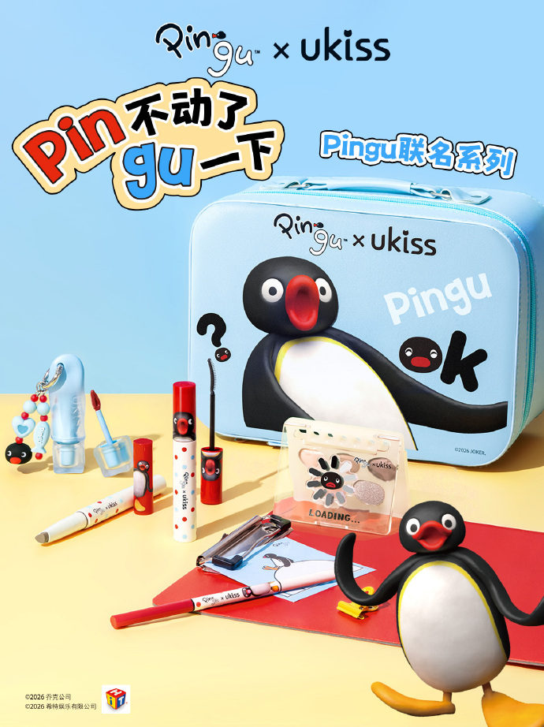
MANNER × THE MONSTERS：京津冀限定联名，把潮玩仪式感融入日常咖啡场景
Insight：LABUBU作为泡泡玛特旗下现象级潮玩IP，拥有极强的粉丝号召力和收藏属性；今年THE MONSTERS十周年全球巡展在北京收官，京津冀区域有大量粉丝群体，但潮玩收藏往往是小众爱好者的行为，普通大众缺少低门槛参与的机会。
Idea：借十周年巡展收官的节点，推出京津冀区域限定联名活动，不用复杂的玩法和高门槛消费，用免费的主题周边把潮玩收藏的仪式感融入日常买咖啡的场景，让普通消费者也能轻松参与到IP狂欢中，同时为线下门店引流。
Execution：11月8日起京津冀地区所有MANNER门店上线联名活动，消费者购买指定饮品即可获得LABUBU主题限定纸袋、杯套及限定纸杯等周边物料；北京8家核心门店限时打造专属展览主题空间，设置打卡点，呼应十周年巡展北京收官站的热度；整体活动轻量、低门槛，没有消费门槛（买饮品就送周边），既满足了粉丝的收藏需求，也不会给普通消费者造成负担。
值得收录：是区域限定+IP联名的轻量级优秀样本，没有过度营销、没有饥饿营销，精准借势了顶流IP的区域热点，用极低的成本实现了区域门店的引流和社交传播，也为咖啡品牌和潮玩IP的跨界合作提供了新的思路：不用做复杂的产品联名，日常消费场景的小周边也能带来足够的话题度。
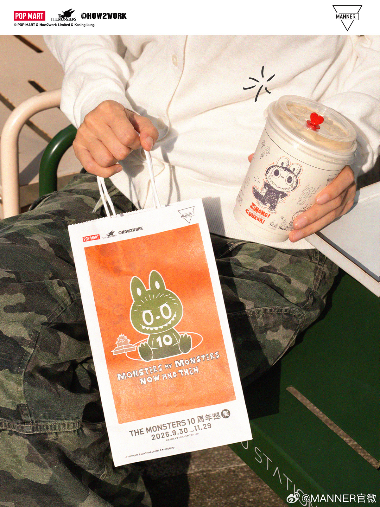
美团"留住童年老味道"：从情感唤起走向实际经营支持，做有温度的本地生活平台
Insight：城市里的街坊小店承载着一代人的青春记忆，但很多老店因为经营能力有限、设施老化、缺少曝光，正在慢慢消失；消费者对这些老店有情感认同，但除了“用脚投票”去消费，没有其他方式可以帮助它们延续下去。
Idea：推进"留住童年老味道"行动，根据网友提名的线索实地走访承载城市记忆的街坊小店，根据每家店的实际需求提供精准的改造和经营支持，把用户对老店的情感认同转化为实际的经营帮助，而不是只做表面的情感营销。
Execution：根据网友在评论区留下的店铺线索，实地走访全国多家街坊小店，按需提供改造支持：为福州开了12年的周丹丹南昌拌粉店更换油烟管道、安装玻璃门和灯牌；为乌鲁木齐经营了二十多年的爱心馕店更新桌椅、菜品图和配送电动车，预存1000份爱心餐；为福州“哥的味道”小吃店重新设计留言墙、更换招牌和冰箱，设置“小吃奖学金”延续和学生群体的情感连接；同时呼应冬季"热乎乎计划"，提前一个月为多地商家送去防风门帘、暖风机和保温柜，从情感支持延伸到长期经营支持。
值得收录：跳出了互联网平台“流量换增长”的传统营销逻辑，真正下沉到本地生活的毛细血管里，把品牌营销变成了实实在在的公益行动，既唤起了大众对城市老店的情感共鸣，也切实帮助小店解决了经营难题，让美团“帮大家吃得更好、生活更好”的品牌使命落地到了具体的人和店上，是平台公益营销的优秀范本。
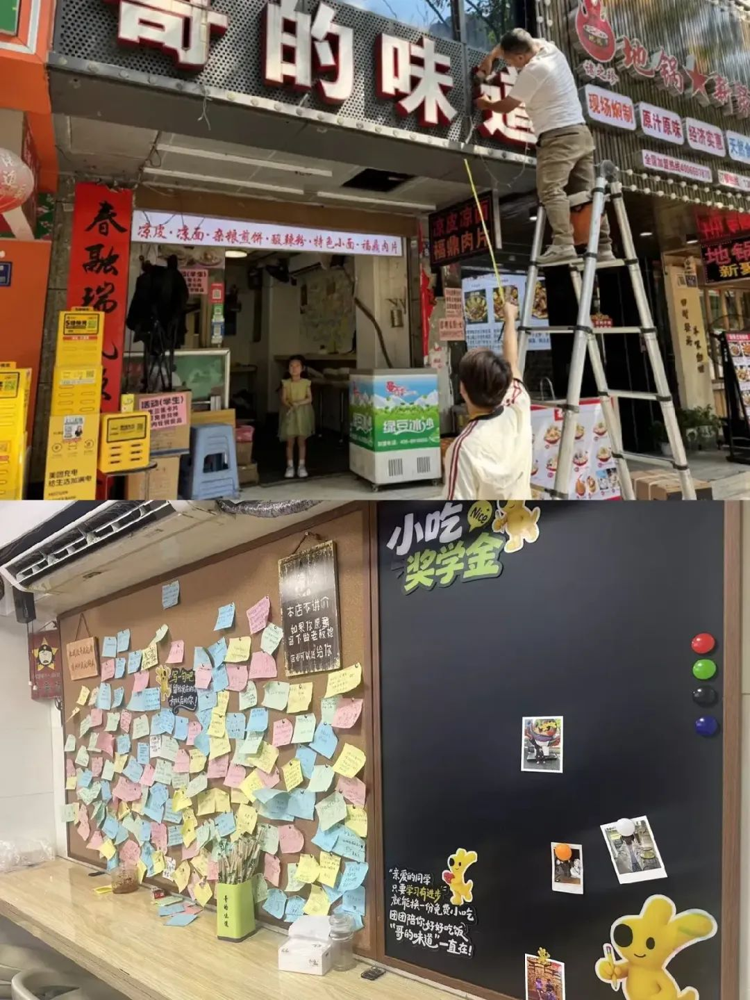
茉莉奶白入鄂三周年"醉鸟"：用武汉方言和本土食材，做最接地气的区域营销
Insight：新茶饮品牌进入区域市场三周年是重要的情感节点，比起 generic 的周年庆促销，本土消费者更买账“懂本地文化”的品牌；武汉话里的“鸟”作为句尾语气助词极具本地辨识度，本地人有过早喝米酒、天冷喝桂花糊米酒的饮食习惯，本土文化和本土食材都是天然的情感连接点。
Idea：以武汉方言“鸟”为核心创意切口，打造"开醺就对鸟"三周年主题，推出湖北专属限定新品“茉莉米酿喝醉鸟”，把武汉本土食材和方言文化打包进一杯奶茶里，让品牌真正融入本地生活，而不是做一个外来的连锁品牌。
Execution：把湖北孝感特产的米婆婆酒酿加入奶茶，搭配茉莉龙芽茶底和牛乳，加入酒酿奶酪和马蹄粉圆，打造有武汉特色的限定新品；购买指定套餐即可获得光栅卡、主题冰箱贴、发声公仔等三周年限定周边；11月5日联合本地酒吧品牌无啤不欢打造"醉鸟游乐园"开醺派对，11月6日-8日醉鸟漫游车在武汉全城巡游打卡，把周年庆变成武汉本地人的集体狂欢。
值得收录：是新茶饮品牌区域营销的标杆案例，没有用全国统一的周年庆模板，而是深度挖掘本地的语言文化、饮食习惯，从产品命名到口味研发、线下活动都完全贴合武汉本地人的生活语境，真正做到了“本土化”而不是“本地化”，既拉动了区域销量，也强化了品牌和本地消费者的情感联结。
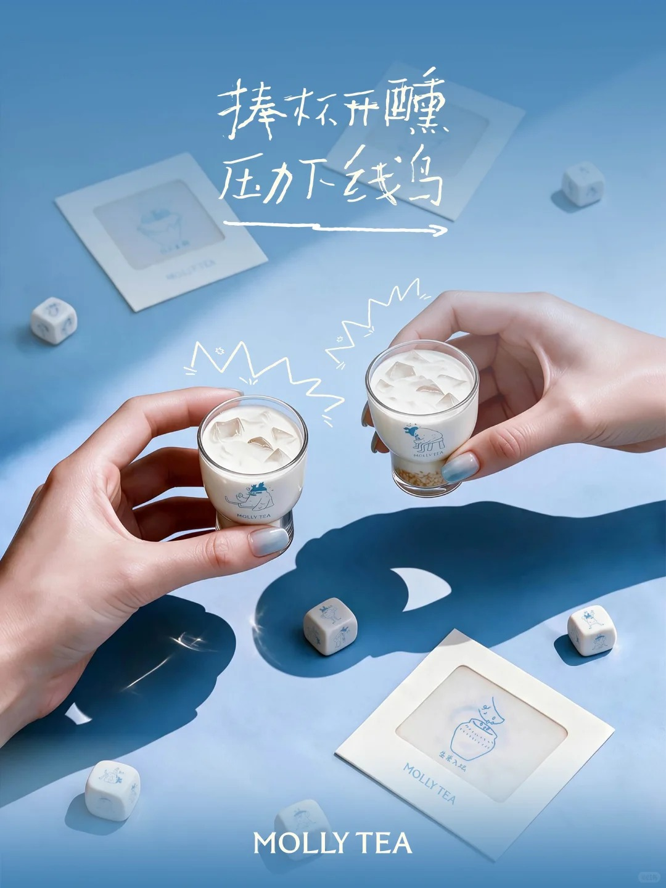
第019期收录 · 国内优秀创意案例 · 2026.11.10
GUCCI × Mariah Carey：借圣诞女王IP提前抢占节日营销声量
999感冒灵×《后会友期》：从冠名商到友情参与者，深度运营综艺IP
绝味鸭脖×厉娜：顺着网友情感叙事接梗，把鸭舌变成友情载体
千问办公×李佳琦直播间：10分钟卖10万份，把AI卖成大众消费品
沪上阿姨×厉娜：借15年重逢情绪，把红豆新品打造成想念载体
GUCCI × Mariah Carey：借圣诞女王IP提前抢占节日营销声量
Insight：每年11月圣诞季开启，Mariah Carey的《All I Want For Christmas Is You》是全球公认的圣诞文化符号，自带节日仪式感和大众情绪共鸣节点，消费者一听到这首歌就会自动进入圣诞消费状态。
Idea：邀请"圣诞女王"Mariah Carey本人出镜2026假日广告，把品牌圣诞新品和大众共同的圣诞记忆深度绑定，提前一个多月就抢占圣诞节点营销声量，让GUCCI成为消费者圣诞季最先想到的奢侈品牌。
Execution：短片由知名导演Harmony Korine掌镜，还原酒店全员忙碌准备圣诞装饰的场景，随着熟悉的圣诞金曲响起，Mariah Carey身着华服登场，致敬《穿普拉达的女王》中Miranda出场的经典名场面，节日氛围拉满；同步推出融入Mariah标志性蝴蝶元素的Butterfly特别系列新品，把IP符号落地到可购买的产品上。
值得收录：节点营销借势文化符号的典型范例，品牌没有生硬创造圣诞概念，而是直接绑定全球消费者已经形成共同记忆的圣诞文化IP，用极低的沟通成本快速建立节日心智，提前卡位圣诞营销战场。
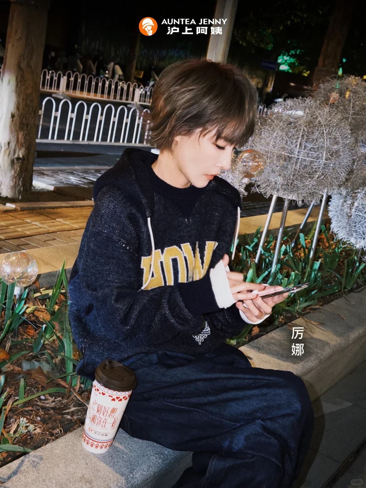
999感冒灵×《后会友期》：从冠名商到友情参与者，深度运营综艺IP
Insight：综艺《后会友期》中许飞厉娜15年友情重逢的故事引发全网共情，友情、陪伴、重逢的情绪内核恰好与999一贯的"温暖陪伴"品牌调性高度契合；传统综艺冠名往往只停留在logo露出层面，无法把综艺热度转化为真正的品牌情感资产。
Idea：不止做冠名赞助商，而是深度参与到节目友情叙事中，把品牌变成友情故事的一部分，把节目热度转化为品牌情感资产，让999的"温暖"形象更具象可感知。
Execution：节目内为嘉宾准备友情相机、打造"友情信箱"，强化"相逢有暖意，后会皆友期"的品牌表达；节目外接梗网友求购毛毯的需求，连夜上线999暖心毛毯周边，把评论区变成Slogan征集现场，因定价争议及时道歉调整价格，全程与网友同频互动，甚至亲自下场磕CP，把自己变成这场互联网狂欢的一部分。
值得收录：综艺冠名深度运营的优秀参考，品牌没有停留在logo露出的初级阶段，而是深度绑定内容情绪内核，快速响应网友玩梗需求，把冠名权益转化为具象的情感载体，实现品牌声量和好感度双重提升。
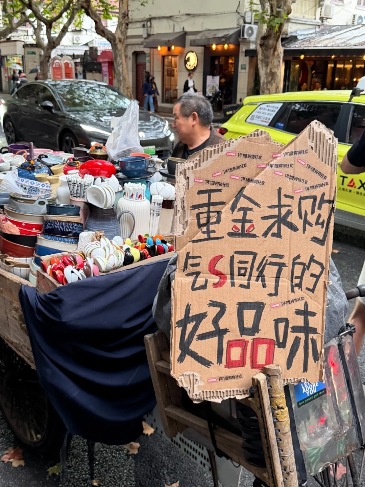
绝味鸭脖×厉娜：顺着网友情感叙事接梗，把鸭舌变成友情载体
Insight：《后会友期》中许飞提及厉娜当年最爱吃绝味鸭舌的细节引发网友热议，大众嗑CP的情绪正盛，品牌已经自然成为友情叙事的一部分，此时接梗的效果远好于生硬的热点营销。
Idea：顺着网友已经建立的情感叙事接梗，不硬蹭热度，而是把品牌产品变成友情故事的情感载体，让消费者在玩梗中自然产生购买欲。
Execution：厉娜本人确认鸭舌细节后，绝味迅速发出商务邀请，推出"厉娜同款"鸭舌套餐；全渠道互动使用"厉娜体"文案，把厉娜当句号玩梗，呼应节目出圈金句"我画地为牢，厉娜"，相关话题阅读量短时间破亿，同款套餐销量环比增长超300%。
值得收录：热点响应速度极快，且没有生硬蹭热度，而是顺着网友已经形成的情感叙事自然入局，把普通的鸭舌产品赋予了特殊的情感意义，用极低的成本撬动了全网级的话题传播，是热点借势营销的教科书级操作。
千问办公×李佳琦直播间：10分钟卖10万份，把AI卖成大众消费品
Insight：AI产品长期主打技术参数、模型能力，普通消费者感知弱、理解门槛高，不知道AI到底能给自己的工作生活带来什么实际价值；而李佳琦直播间是大众消费品教育的最佳场景，极低的尝鲜门槛可以快速降低用户的尝试成本。
Idea：不强调技术参数，而是把AI产品当成普通消费品卖，通过CEO现场演示具体使用场景+李佳琦的消费号召力+0.01元的极致尝鲜价，让普通消费者直观理解AI的实用价值，完成AI产品的大众科普。
Execution：千问办公CEO亲自走进李佳琦双十一直播间，现场演示文档处理、试卷整理、直播复盘等普通用户高频使用的功能，以0.01元的价格上架原价28元的个人会员月卡，开售10分钟卖出5万份，半小时销量接近10万份，对应算力额度约2万亿Token，大量用户是第一次购买AI付费产品。
值得收录：AI产品从To B/技术圈走向大众消费市场的标志性事件，证明了只要找对场景、降低门槛、讲清楚实用价值，AI产品也能像普通快消品一样通过直播电商大卖，为AI产品的商业化落地提供了全新的参考路径。
优衣库淮海路旗舰店焕新：把上海海派文化“穿”在身上，重构门店城市联结
Insight：国际零售品牌的门店竞争早已从比拼面积体量转向比拼坪效和文化联结，消费者更看重门店是否能融入本地生活、呼应本土文化情绪，单纯的卖货场所已经无法满足消费者的体验需求。
Idea：淮海路旗舰店搬迁焕新不止是地址变更，更是一次品牌和上海本土文化深度绑定的契机，把门店打造成海派文化的体验空间，而非单纯的售卖场所，强化品牌和上海这座城市的情感联结。
Execution：新店以海派设计融合通透空间，设置内地最大UNIQLO FLOWER生机花店、城市影像展、艺术装置，把逛街延伸为城市生活漫游；邀请上海籍演员孙俪启幕，发布《新生活城市巡游志·上海》；UTme!定制专区联动上海老字号、本地艺术家，提取永久自行车、龙虎清凉油、沪语等元素做印花，让消费者可以"把上海穿在身上"，引发社媒自发种草。
值得收录：国际品牌门店本土化运营的优秀样本，证明了门店竞争早已不是比拼体量大小，更考验品牌能否读懂本地人的生活情绪和审美偏好；融入城市文化不是喊口号，而是从空间设计、产品定制、内容传播各个维度真正落地。
第018期收录 · 国内优秀创意案例 · 2026.11.09
快手"500个家乡"第六季：为中线城市留下可复用的文旅叙事资产
耐克×苏炳添：用广东煲汤文化讲透“下功夫就有回报”的运动精神
百威740ml大满罐：用一把尺子重新定义家庭饮酒的“满”的度量衡
亨氏：34根“想赢的番茄梗”把户外广告变成全民玩梗素材
沪上阿姨×厉娜：借《后会友期》旧友重逢情绪，强化红豆系列“想念”心智
小红书REDone年度好品味计划：不拼低价拼审美，为特色好货开辟新赛道
优衣库淮海路旗舰店焕新：把上海海派文化“穿”在身上，重构门店城市联结
快手"500个家乡"第六季：为中线城市留下可复用的文旅叙事资产
Insight：在文旅热潮下，大量二三线中线城市获得流量关注，但热点不等于叙事，流量不等于气质，多数城市缺少清晰、可被传播、可长期复用的精神表达名片；年轻人对宏大空泛的城市宣传片已经审美疲劳，真实的、有烟火气的、本地人认可的城市叙事才能真正引发共鸣。
Idea：延续快手"500个家乡"长线IP，第六季选择长春、黔东南、开封三座气质差异鲜明的中线城市，分别提炼出“铮铮”“痛快”“长情”三个专属精神关键词，不止拍宣传片，更为每个城市留下一句可以被文旅部门长期使用的slogan和叙事框架，让品牌内容真正成为城市的长期资产。
Execution：邀请李幼斌出演长春篇《长春铮铮》，用东北风雪、一汽工业历史、长春人硬骨头的精神诠释城市铮铮铁骨；黔东南篇《黔东南痛快》喊出“人生当痛快，不枉黔东南”的落户邀请，当地文旅副局长亲自出镜，把酸汤、村超、侗族大歌等鲜活的地域文化呈现出来；开封篇《开封长情》通过“干娘”与跨时空苏东坡的对话，提出“人一生要来七次开封”的传播主张，把八朝古都的千年底蕴和烟火气结合。项目总曝光16亿+，获得三地政府和央媒的高度认可，相关slogan被地方文旅直接复用。
值得收录：品牌文旅营销的长期主义样本，不止追求一次传播声量，而是真正为城市创造可复用的内容资产；用本地人原声出演、扎实的在地调研、有记忆点的精神关键词，避免了城市宣传片千篇一律的宏大叙事，为互联网平台如何参与地方文旅建设提供了可复制的参考路径。
耐克×苏炳添：用广东煲汤文化讲透“下功夫就有回报”的运动精神
Insight：年轻一代反感高高在上的励志鸡汤和施压式的运动口号，比起“战胜别人”“追求速成”的叙事，他们更相信真实、日常、有烟火气的付出有回报；在大湾区文化中，“煲汤”是需要慢火熬制、足料用心的日常修行，和运动训练“投入就有收获”的精神高度同构，粤语本土表达更能引发本地用户的深度共鸣。
Idea：以大湾区人人熟悉的“煲汤”文化为核心隐喻，邀请苏炳添全程用粤语拍摄广告片，把运动员日复一日的训练、流汗、坚持比作熬一煲广东靓汤，用“落足料，点会冇料到（下了功夫，哪会没收获）”的本土俗语，把“Just Do It”的品牌精神落地为有温度的本地文化体验。
Execution：品牌片以苏炳添去市场买菜、回家煲汤的日常场景切入，把训练时长、汗水、坚持比作汤料，娓娓道来努力的价值；同步推出“足料配方”户外海报，把运动训练要素像食材配料表一样可视化呈现，投放在运动场馆、高校周边；线下在大湾区开设“跑步换汤”快闪餐厅，跑者凭跑步里程即可免费换取热汤和限定周边，努力是唯一的支付方式，拒绝金钱交易，真正把“足料有回报”的概念从广告落地为可参与的真实体验。
值得收录：国际品牌本土文化营销的标杆级作品，没有生硬嫁接中国元素，而是深度挖掘地域日常文化与品牌精神的契合点，从内容到线下体验形成完整闭环，既打动了本地消费者，又为运动品牌如何做区域化、本土化营销提供了非常优秀的参考范式。
百威740ml大满罐：用一把尺子重新定义家庭饮酒的“满”的度量衡
Insight：家庭聚会、朋友在家小酌的场景中，常规500ml罐装啤酒要么不够喝、倒不满杯子，要么开多了喝不完浪费；消费者对于“尽兴”“满”的情绪需求，没有对应的产品规格来承接，居家饮酒罐装产品长期面临销量增长瓶颈。
Idea：推出740ml“大满罐”全新规格，用“满”作为核心概念，用一把透明尺子作为包装视觉符号，重新定义家庭饮酒场景的“满”的度量衡，把“够喝、尽兴、不浪费”的产品利益点转化为可视化、可感知的品牌符号。
Execution：罐身包装设计一把醒目的透明量尺，清晰标注740ml刻度，直观传递“量大、够满”的产品感知；围绕“满”的概念推出一系列平面和视频广告，把家庭聚会、看球、朋友小聚等场景下“喝得尽兴”的情绪和大满罐绑定；上市仅4个月就贡献了百威罐装产品10%的销量，成功扭转居家饮酒渠道销量下滑趋势，实现正增长9.3%，“满罐”的心智在行业内排名第一。
值得收录：快消品通过包装/规格创新实现业务增长的经典案例，没有复杂的创意概念，而是精准抓住消费者未被满足的场景痛点，用最简单、最直观的视觉符号把产品利益点打透，最终实现了品牌心智和销量增长的双重突破，证明了好创意不一定复杂，精准解决问题就有力量。
亨氏：34根“想赢的番茄梗”把户外广告变成全民玩梗素材
Insight：番茄酱品类的广告长期围绕“浓度”“原料”等功能点做文章，消费者感知弱、记忆点差；社交时代，简单、有梗、有视觉冲击力的内容更容易被用户自发拍照传播，户外广告的价值不再只是曝光，更是创造可以被二次传播的社交货币。
Idea：把“每一颗想赢的番茄都在亨氏里”作为核心slogan，把番茄最有辨识度的“番茄梗”作为核心视觉符号，设计34根形态各异、带着倔强好胜表情的番茄梗，用极简的红底视觉投放在人流量最大的地铁站，让路过的人一眼就能记住，主动拍照分享。
Execution：邀请泰国顶级3D制作公司完成番茄梗的建模，每一根都有独特的神态和动作，仿佛一个个憋着劲想要赢的小番茄；投放选在广州体育西路地铁站——全广州人流量最密集的换乘站，巨型海报铺满整个通道，34根番茄梗齐刷刷“盯着”路过的行人，视觉冲击力极强；除了平面广告还配套15秒动画梯媒广告，番茄梗的形象迅速出圈，被网友做成表情包二次传播，项目拿下The One Show、金投赏全场大奖等多个国内外顶级创意奖项。
值得收录：极简创意的标杆作品，把一个简单的视觉符号做到极致，没有复杂的剧情和昂贵的明星，仅凭超强的视觉记忆点和巧妙的概念就实现了破圈传播，拿下国内外多项创意大奖，证明了好的视觉创意本身就是最强的传播力。
沪上阿姨×厉娜：借《后会友期》旧友重逢情绪，强化红豆系列“想念”心智
Insight：综艺《后会友期》中06超女许飞、厉娜时隔15年的旧友重逢引发全网共情，“想念”“久别重逢”成为当下最火的大众情绪；多数品牌借势只停留在转发玩梗层面，没有把热点情绪和自身产品心智做深度绑定，热点一过什么都没留下。
Idea：抓住红豆系列新品主打“想念”的产品定位，和节目中“旧友重逢想念”的情绪天然契合点，快速联动厉娜，推出“此刻好想和你在一起”的“想你杯”包装，借综艺热度既拉动新品销量，又强化红豆系列“想念”的情感心智。
Execution：第一时间和因节目翻红的厉娜联动，推出带有毛衣纹理、可手写姓名区域的“想你杯”，杯身印着“此刻好想和你在一起”的文案，刚好呼应节目中“我等这一刻等了十五年”的情绪；发起“冬一杯”活动，把网友写给旧友、亲人的温暖话语投放到线下大屏，其中包含喊话节目嘉宾和好的内容，进一步放大情绪共鸣。联动不仅快速拉动了红豆系列新品的销量，更让产品和“想念”的情感标签深度绑定。
值得收录：热点借势营销的正确打开方式，不是为了蹭热点而蹭热点，而是精准找到热点情绪和品牌/产品心智的契合点，快速响应把流量转化为品牌资产，既借了综艺的热度，又强化了产品本身的情感定位，是茶饮品牌借势综艺热点的轻量高效样本。
小红书REDone年度好品味计划：不拼低价拼审美，为特色好货开辟新赛道
Insight：双十一大促长期陷入“低价内卷”的怪圈，各平台都在比谁的价格更低，消费者陷入审美疲劳；大促消费正在分层，越来越多消费者愿意为好设计、好品质、有独特性的商品付费，不看销量看品味的选品机制反而能满足这部分用户的需求，帮特色好货避开低价竞争的红海。
Idea：推出REDone年度好品味计划，建立一套以“好品味”为核心的选品标准，不看销量排名，从审美、工艺、原创、品质、独特性五个维度逐件甄选商品，为有设计感、有品质的特色好货开辟一条不靠低价也能被看见的通道，打造小红书差异化的大促心智。
Execution：同步上线双11 REDone主会场，在上海延庆坊开出“小红书特产商店”快闪店，配合“好品味地图”逛购路线和专场直播，形成线下体验到线上种草购买的闭环；巧思的是项目把广告融入街区日常场景中，和花店合作做文字花束、把日常的水桶椅子变成宣传载体，整条街变成沉浸式逛购路线，完全契合小红书“发现好东西”的平台调性。
值得收录：大促营销差异化的优秀样本，跳出了电商平台“低价内卷”的同质化竞争，依托平台自身的审美社区基因，开辟了“好品味”的差异化赛道，既满足了消费者分层的消费需求，也帮特色中小品牌找到了新的增长机会，重新定义了大促的价值不只是卖便宜货。
优衣库淮海路旗舰店焕新：把上海海派文化“穿”在身上，重构门店城市联结
Insight：国际零售品牌的旗舰店升级，往往比拼面积大小、装修豪华程度，却忽略了和所在城市的文化联结；当下的消费者逛店不再只是买衣服，更是体验一种生活方式，门店只有真正融入本地人的日常生活，才能拥有长久的生命力。
Idea：在淮海路开了13年的全球旗舰店迁址焕新，不再追求超大店面，而是深度融入上海海派文化，把门店变成一个承载城市生活方式的空间，让“把上海穿在身上”成为核心传播概念，强化品牌和上海这座城市的情感联结。
Execution：新店以海派设计融合通透空间，除了商品售卖还设置了内地最大的UNIQLO FLOWER生机花店、城市影像展、艺术装置，把逛街延伸为城市生活漫游；邀请上海籍演员孙俪到场启幕，线上邀约本地创作者讲述上海故事，发布《新生活城市巡游志·上海》；UTme!定制专区联动上海老字号、淮海路商户和本地艺术家，把永久自行车、龙虎清凉油、沪上美食、趣味沪语等元素做成印花，让消费者可以“把上海穿在身上”，引发社交平台自发种草。
值得收录：国际品牌门店本土化运营的优秀样本，证明了门店竞争早已不是比拼体量大小，更考验品牌能否读懂本地人的生活情绪和审美偏好；融入城市文化不是喊口号，而是从空间设计、产品定制、内容传播各个维度真正落地，让门店成为城市文化的一部分，而不只是一个卖货的场所。
第017期收录 · 国内优秀创意案例 · 2026.11.08
泡泡玛特：THE MONSTERS饮料摇摇趣拍机，把潮玩从收藏品变成随身互动玩伴
沃尔沃 × 胡歌：XC70上市魔性情歌广告，打破豪华车企严肃刻板印象
极氪 × 倪大红：一人分饰三角选车大戏，用国民级角色记忆点降低产品沟通成本
京东 ×《少爷和我》：龙傲天刘波暖冬广告，用喜剧IP打通立冬节点情感共鸣
adidas × 赞意：“在城里办事”机翻乌龙营销，把公关危机变成全网玩梗事件
泡泡玛特：THE MONSTERS饮料摇摇趣拍机，把潮玩从收藏品变成随身互动玩伴
INSIGHT：潮玩行业长期主打“收藏、陈列、保值”属性，消费者买回家的玩偶大多摆在柜子里，互动性弱、生命周期短；年轻人需要的不只是一个摆着看的手办，更是能日常带出门、反复玩、有社交属性的随身陪伴物件。
IDEA：跳出传统盲盒手办的形态，推出巴掌大小的THE MONSTERS饮料摇摇趣拍机，把LABUBU等经典IP装进电子游戏机，结合经营模拟、拍照、线下联机互动多重玩法，让潮玩从“摆着看的收藏品”变成“每天都要玩的随身玩伴”。
EXECUTION：设备内置虚拟饮料店经营玩法，玩家通过摇晃机器模拟制作饮品赚金币解锁装扮，同时自带复古滤镜摄像头可拍摄带IP相框的照片；支持近距离设备联机玩猜拳小游戏，还可在泡泡玛特门店、城市乐园触碰专属点位解锁限定道具；首发售价299元，上市即售罄，相关开箱、玩法分享内容在社交平台自发传播。
值得收录：打破了潮玩行业“卖摆件”的固化思路，把IP价值从“视觉收藏”延伸到“高频互动使用”，既保留了盲盒收集的乐趣，又通过游戏化、社交化设计大幅拉长了产品生命周期，为潮玩品类的产品创新提供了非常有参考价值的新方向。
沃尔沃 × 胡歌：XC70上市魔性情歌广告，打破豪华车企严肃刻板印象
INSIGHT：豪华汽车品牌的新车上市广告普遍走高端、严肃、科技感路线，消费者对千篇一律的“精英人士开豪车”叙事已经审美疲劳；反差感、魔性、接地气的内容反而更容易在社交平台引发自发传播，拉近品牌和普通消费者的距离。
IDEA：邀请品牌代言人胡歌打破以往儒雅精英的形象，唱着魔性土味情歌为全新XC70代言，用“沃尔沃～哦～耶～耶”的洗脑旋律和直白歌词，把长续航、安全、健康座舱等硬核产品卖点唱成朗朗上口的浪漫告白。
EXECUTION：广告片里胡歌以“XC70嘴替”的身份出现在婚礼、孕妇出行、碰撞实验室等多个场景，用跑调又认真的演唱方式唱出“安全给你、续航给你、所有安全感都给你”的告白歌词，洗脑旋律上线后迅速被网友二创玩梗，相关话题登上社交平台热搜，让新车卖点在轻松的氛围中被消费者记住。
值得收录：豪华品牌放下身段做魔性内容的优秀样本，没有损害品牌高端调性，反而通过反差感让品牌形象更亲切、更有记忆点；用最通俗的传播形式传递硬核产品卖点，实现了传播声量和产品认知的双赢。
极氪 × 倪大红：一人分饰三角选车大戏，用国民级角色记忆点降低产品沟通成本
INSIGHT：汽车产品卖点繁多（舒适、豪华、智能等），传统广告逐条罗列参数的方式消费者根本记不住；倪大红饰演过的苏大强、泰叔、司马懿三个国民度极高的角色，刚好对应三类用户选车时的核心诉求，用观众熟悉的角色演绎卖点，沟通效率远高于生硬的参数讲解。
IDEA：邀请老戏骨倪大红一人分饰三角，让苏大强、泰叔、司马懿三个经典角色在广告里同框“吵”着选车，每个角色的性格和诉求刚好对应极氪7X的一项核心产品力，用戏剧化的场景把卖点讲得生动好记。
EXECUTION：广告片里作精苏大强挑三拣四对应“舒适品质”诉求，讲究排面的泰叔对应“豪华格调”诉求，运筹帷幄的司马懿对应“科技智能”诉求，三个角色各执一词争论不休，最后极氪7X出场满足所有需求；广告没有生硬念参数，而是用观众熟悉的角色梗自然带出产品卖点，上线后引发网友回忆杀，相关片段被大量转发。
值得收录：巧妙借用演员的国民级角色资产，把抽象的产品卖点和大众已经有认知基础的角色性格做绑定，大幅降低了消费者的理解成本，是汽车产品营销“用内容讲卖点”的轻量优秀样本，证明好的创意不需要大预算，找对记忆点就能事半功倍。
京东 ×《少爷和我》：龙傲天刘波暖冬广告，用喜剧IP打通立冬节点情感共鸣
INSIGHT：立冬等节点营销普遍走温情路线，消费者对同质化的“天冷了要保暖”叙事已经免疫；《少爷和我》里龙傲天、刘波的CP是近年最受年轻人喜爱的喜剧IP之一，“龙傲天保护刘波”的人物关系天然适配“暖冬好物守护你”的沟通主题。
IDEA：复刻《少爷和我》经典的反差喜剧设定，让龙傲天化身AI守护者，用“避冬11条”守则给刘波安排全方位的冬日温暖改造，把京东暖冬好物自然植入剧情笑点中，传递“立冬上京东，快乐过暖冬”的节点主张。
EXECUTION：广告片完美还原原剧的喜剧风格，雪糕加热、养生汤泡脚、刘海贴暖宝宝等荒诞操作引得刘波频频吐槽，还重现了“刘海儿会疼”等经典名场面，让观众在看喜剧的过程中自然接收到暖冬好物的信息；内容上线后引发喜剧粉丝二次创作，相关梗图在社交平台传播。
值得收录：IP联名不只是用个形象蹭流量，而是深度还原IP的核心人物关系和喜剧风格，把品牌信息自然融入剧情笑点里，既让IP粉丝满意，又清晰传递了节点营销的核心主张，是喜剧IP联名营销不生硬的优秀参考。
adidas × 赞意：“在城里办事”机翻乌龙营销，把公关危机变成全网玩梗事件
INSIGHT：品牌面对文案失误、公关危机时，传统的删帖、道歉、冷处理方式反而容易引发网友反感；网络热梗的生命力来源于反差感和参与感，只要接住网友抛过来的梗快速响应，危机反而能变成免费的流量机会。
IDEA：面对商品页机翻把“errands around town（城里跑腿）”翻译成“在城里办事”引发的全网玩梗，adidas不删帖、不道歉，反而第一时间下场接梗，把一次机翻乌龙变成全民参与的玩梗营销事件。
EXECUTION：官方账号首先在评论区回复“我去反馈一下，当个事办”接住梗，随后推出“adi办的都是das”谐音梗文案，上线“进城办事”主题定制T恤，代言人李现、王鹤棣相继上身玩梗，相关话题阅读量破亿，T恤上线即售罄；原本一次可能引发群嘲的翻译失误，最终变成了品牌年轻化的经典案例。
值得收录：堪称品牌危机公关的反向教科书，完美示范了社交时代品牌面对突发梗的正确姿势：放低姿态、快速响应、和网友站在一起玩梗，而不是端着品牌架子说教；用极低的成本撬动了全网级的传播声量，还顺势强化了品牌接地气的年轻化形象。
第016期收录 · 国内优秀创意案例 · 2026.11.07
张亮麻辣烫：同名梗12年世纪大和解，张亮“入职”当一日老板
北面（The North Face）：上海街头给校车裹上巨型Nuptse羽绒服
创维：把电视从广告牌里“掉”出来，户外广告打造破屏视觉冲击
名创优品：YOYO登陆巴黎时装周，为中国设计“举个例子”
金典：邀请“小孩姐”人形立牌出演广告片，把玩梗玩成品牌资产
张亮麻辣烫：同名梗12年世纪大和解，张亮“入职”当一日老板
INSIGHT：演员张亮和张亮麻辣烫的同名乌龙是互联网流传了12年的老梗，甚至早年还因为门店侵权打过官司，网友对“张亮什么时候去吃张亮麻辣烫”的期待值极高；同时近年谐音梗、同名梗代言已经成为品牌玩梗出圈的高效路径，天然自带话题度。
IDEA：接住网友玩了12年的老梗，顺着张亮vlog里“想尝尝张亮麻辣烫”的随口一提，从全国门店“寻人启事”邀请，到张亮真的到总部探店“入职”当一日老板，把网络老梗变成全民参与的真实营销事件。
EXECUTION：先是全国门店自发拉横幅、贴手搓寻人启事邀请张亮来吃，形成全网玩梗的第一波声量；随后张亮真的现身上海总部探店，到后厨体验熬骨汤、切菜备餐，还提出要出“张亮同款健身套餐”；全程内容没有硬广，顺着网友的玩梗节奏自然推进，把“张亮吃张亮”的戏剧性拉满。
值得收录：完美示范了互联网老梗的正确打开方式，没有生硬造梗，而是接住网友玩了十几年的集体记忆点，从线上玩梗到线下落地形成完整传播链路，不仅零成本撬动全网流量，还借张亮自律健身的公众形象，自然承接了品牌“健康、品质”的升级诉求，是玩梗营销不翻车的优秀样本。
北面（The North Face）：上海街头给校车裹上巨型Nuptse羽绒服
INSIGHT：冬季羽绒服营销普遍靠模特上身图、参数宣传传递保暖性，消费者对平面广告的感知非常弱，“暖和”是一种体感认知，很难通过屏幕准确传递；同时北面经典Nuptse羽绒服本身极具辨识度的外观，是天然的视觉符号。
IDEA：把Nuptse羽绒服等比例放大做成巨型装置，直接“穿”在上海街头的黄色校车上，用最直观的视觉效果让路人一眼感受到“这件羽绒服到底有多厚、多蓬松、多保暖”。
EXECUTION：以上海街头的美式黄色校车为载体，完整复刻Nuptse羽绒服经典的横向充绒格纹、黄黑撞色、品牌Logo，把整个车身包裹成巨型羽绒服的样子，软乎乎的视觉效果自带打卡属性，路人纷纷拍照发社交平台形成自发传播；装置刚好配合Nuptse系列35周年升级新品上市，把“保暖”这个抽象卖点变成了肉眼可见的视觉记忆。
值得收录：跳出了服饰类产品拍广告片、找代言人的传统套路，用一个极其简单的巨型装置，就把“蓬松保暖”这个最难传递的体感卖点变成了所有人都能看懂的视觉符号，自带互动性和传播性，用极低的成本实现了极强的户外广告记忆点，是户外创意“少即是多”的典型案例。
创维：把电视从广告牌里“掉”出来，户外广告打造破屏视觉冲击
INSIGHT：电视品类的广告长期主打画质、参数、屏幕尺寸，消费者对同质化的参数宣传已经审美疲劳，很难直观感知到“大屏电视到底有多大、视觉冲击力有多强”；同时户外广告牌本身就是天然的“平面屏幕”载体，可以和产品卖点做深度结合。
IDEA：利用户外广告牌的物理结构做3D破框创意，让一台创维大尺寸电视看起来像是从广告牌里“掉”出来一半，用最直观的视觉冲击传递“大屏、震撼”的产品核心卖点。
EXECUTION：在城市核心商圈的户外广告牌上打造错视觉装置，下半部分的广告牌做出破损变形的效果，一台创维电视半悬在广告牌外面，仿佛下一秒就要掉下来，逼真的3D效果让路过的行人纷纷驻足拍照；创意不用任何多余文案，光靠视觉冲击就把“大尺寸电视的震撼感”传递得淋漓尽致，相关图片在社交平台自发传播。
值得收录：巧妙利用了户外媒介本身的载体特性，把产品卖点和媒介形式做了完美结合，没有多余的文案和解释，一个视觉创意就讲清楚了产品最核心的卖点，是产品特性+户外媒介创意结合的标杆案例，证明好的户外广告本身就是最好的内容。
名创优品：YOYO登陆巴黎时装周，为中国设计“举个例子”
INSIGHT：中国平价零售品牌出海长期面临“低价低质”的刻板印象，而巴黎时装周是全球时尚行业的最高舞台之一，如果能在这个舞台上完成品牌露出，比单纯投放海外广告更能建立品牌的潮流认知；同时名创优品自有IP“YOYO”已经在国内积累了足够的认知基础，需要更国际化的舞台完成认知升级。
IDEA：带着品牌原创IP形象YOYO登陆巴黎时装周，不是简单的亮相看秀，而是把YOYO做成秀场的重要组成部分，用最接地气的“举个例子”作为沟通口号，在国际时尚舞台上展示中国平价品牌的设计自信。
EXECUTION：YOYO作为特邀嘉宾现身巴黎时装周秀场，不仅坐在头排看秀，还和时尚博主、设计师互动合影，相关内容在国内外社交平台同步传播；配合这次时装周亮相，名创优品同步推出YOYO巴黎时装周限定周边产品，把时尚认知落地到可购买的产品上，让“中国设计”的概念不止于口号。
值得收录：打破了平价消费品牌和高级时装周之间的次元壁，没有生硬的品牌植入，而是用可爱的IP形象作为品牌载体，在国际舞台上传递中国品牌的设计自信，既在国内引发了民族自豪感的传播，也在海外市场建立了品牌的潮流认知，是中国品牌出海轻量化创意营销的优秀参考。
金典：邀请“小孩姐”人形立牌出演广告片，把玩梗玩成品牌资产
INSIGHT：“小孩姐”是今年社交平台上最火的梗之一，网友用这个词形容年纪小却气场十足、像姐姐一样成熟的小女孩，相关内容自带极高的传播度；但品牌玩梗很容易生硬翻车，需要找到梗和品牌的自然结合点。
IDEA：不找真人小孩出演“小孩姐”，而是直接把网上流行的“小孩姐”人形立牌作为主角拍摄广告片，用真人立牌的反差感制造笑点，把网络热梗和金典“有机、健康、像小朋友一样纯净”的产品卖点做结合。
EXECUTION：广告片里小孩姐人形立牌以第一视角出演，在牧场里和奶牛互动、参观牛奶生产流程、一本正经地讲解金典有机奶的品质标准，僵硬的人形立牌和生动的场景形成强烈反差萌，笑点密集又不生硬；内容上线后引发网友二次创作，把人形立牌P到各种场景里玩梗，进一步放大了传播声量。
值得收录：品牌玩热梗的正确示范，没有强行蹭热点让品牌显得尴尬，而是用人形立牌的创意形式把梗玩出了新意，既借到了热梗的流量，又完整传递了产品的核心卖点，反差感的创意形式自带传播属性，是热梗营销的创意破局样本。
第015期收录 · 国内优秀创意案例 · 2026.11.06
百威740ml大满罐：用一把尺子重新定义饮酒度量衡
美团买药："高原急用氧，上美团"线下广告
森马：《送你一个代言人》深入大兴安岭溯源鹅绒品质
沃尔沃："50/50 男女平等保护"安全主张广告片
喜茶："牦牛乳恰安莫"用真实人物故事做差异化
百威740ml大满罐：用一把尺子重新定义饮酒度量衡
INSIGHT：啤酒市场长期以500ml为单人标准容量、1L装为多人分享选择，两者之间存在品类空白：消费者向往1L装的高性价比，却担心喝不完造成浪费；同时消费者对“升级感”已有成熟集体认知（从Plus到Pro Max的消费心智），愿意为超越标准版的价值买单。
IDEA：推出740ml大满罐填补500ml与1L之间的容量空白，将“超”作为核心沟通语言，以刻度尺为核心视觉符号，直观对比尺寸差异，把“超值、超尽兴”的价值感知转化为肉眼可见的视觉冲击。
EXECUTION：1. 户外广告采用“大到放不下”的破框创意，让罐身撑破地铁灯箱、楼宇广告牌、公交站等媒介边框，制造强烈视觉记忆；2. 实施“万物皆媒介”策略，把刻度尺视觉铺满便利店门头、冰柜、地贴、周边产品等消费者日常接触的所有场景；3. 借势世界杯签约梅西，推出“超大场面，就选大满罐”主题内容绑定大满贯情绪；4. 端午龙舟赛将尺子做成船桨、推出超大帆布包等周边，结合粤语“我大晒”梗深化本土传播。
值得收录：跳出了快消品新品上市单纯喊卖点、做促销的传统套路，用一个极简的视觉符号（刻度尺）解决了“产品尺寸差异无法在平面上直观感知”的核心传播难题，破框创意+全场景渗透+节点借势的组合拳，成功带动家庭消费渠道销量由负转正增长9.3%，上市4个月即贡献罐装产品10%销量，是产品创新+视觉创意完美结合的标杆案例。

美团买药："高原急用氧，上美团"线下广告
INSIGHT：进藏游客普遍存在高原反应的健康焦虑，但大多数人出发前不会特意准备氧气瓶，到了高原才发现买氧不方便、不知道哪里能快速买到；同时不同地域的人对“高原反应”的认知存在信息差，很多人低估了高原缺氧的风险。
IDEA：把“即时买氧”的服务心智直接嵌入高原旅行场景，用最直白的线下广告完成科普、提醒和服务心智的三重连接，让“上美团买急用氧”成为进藏游客的条件反射。
EXECUTION：在西藏、青海等高原地区的机场、火车站、景区入口、热门打卡点投放线下广告，用“到了高原才想起没买氧？”“高反不会等你找药店”等直白文案戳中游客痛点，广告直接附小程序入口，扫码即可快速下单配送到当前位置；同时结合进藏攻略、旅游博主内容做线上传播，把买氧服务植入进藏必备清单。
值得收录：延续了美团买药“把即时用药嵌入具体生活场景”的核心策略，没有做花哨的创意，而是精准抓住了高原旅行这个极度垂直、痛点极强的场景，用最朴素的线下广告完成了用户教育和服务心智植入，是本地生活服务场景化营销的典型优秀样本。
森马：《送你一个代言人》深入大兴安岭溯源鹅绒品质
INSIGHT：羽绒服市场长期主打参数、充绒量、保暖性等功能卖点，消费者对鹅绒的品质感知模糊，不知道什么样的鹅绒才是好鹅绒；同时森马此前通过徐志胜、李雪琴等代言人已经将“鹅绒”打造成品牌羽绒服的鲜明沟通切口，需要进一步强化产地品质认知。
IDEA：不找流量明星当代言人，而是把“大兴安岭的鹅”、产地的养鹅人、产业链从业者作为真正的“代言人”，深入产业源头做真实探访，用最朴素的内容为“大兴安岭鹅绒”做品质背书。
EXECUTION：推出品牌片《送你一个代言人》，团队深入大兴安岭养殖基地，真实记录大白鹅的生长环境、养殖过程、羽绒筛选流程，让养鹅户、分拣工人直接出镜讲述鹅绒品质标准；内容上线后配合电商详情页、门店物料同步落地，把“大兴安岭鹅绒”的产地心智打透。
值得收录：跳出了服饰品牌找流量明星代言的同质化套路，回归产品品质本身，把产业链上游的普通人变成品牌代言人，既真实可信又有记忆点，成功为鹅绒服产品建立了清晰的产地品质认知，是服饰品牌产品心智打造的务实参考。

沃尔沃："50/50 男女平等保护"安全主张广告片
INSIGHT：汽车安全测试长期以男性假人为标准，女性因为身体结构、肌肉分布等差异，在交通事故中受伤风险远高于男性，但大多数汽车品牌的安全宣传都刻意回避了这一事实，“安全”的承诺并没有覆盖到所有性别。
IDEA：直面汽车安全领域长期存在的性别偏见，以“50/50男女平等保护”为核心主张，用艺术化的形式直观呈现不同性别的身体差异，传递沃尔沃“安全无性别之分”的品牌理念。
EXECUTION：推出主题广告片，用并列呈现的男女身体模型、碰撞测试对比画面，直观展示男女身体结构的差异以及沃尔沃安全系统针对不同性别所做的优化；配合线下体验展、安全技术科普内容，详细介绍沃尔沃在安全测试中坚持男女假人1:1比例测试的标准，以及针对女性颈椎、胸部等部位的特殊保护设计。
值得收录：没有空喊“男女平等”的口号，而是把品牌的核心技术优势（安全）和性别平等的社会议题做了非常扎实的结合，用真实的技术标准支撑品牌主张，既传递了社会价值观，又强化了沃尔沃“安全标杆”的品牌认知，是品牌社会议题营销不翻车的优秀样本。
喜茶："牦牛乳恰安莫"用真实人物故事做差异化
INSIGHT：新茶饮行业联名越来越内卷，各大品牌都在抢大IP、做流量款，产品和内容越来越同质化，消费者对单纯的IP联名已经审美疲劳；真正能建立长期品牌认知的，是产品背后真实的人和故事。
IDEA：放弃短期流量联名，走“慢内容”路线，围绕牦牛乳新品，认真讲好一杯奶茶背后牧民、奶源寻源者的真实故事，用真实感建立品牌差异化认知。
EXECUTION：推出牦牛乳系列新品“恰安莫”（藏语“你好”的意思），团队深入青藏高原牧场，记录牧民养牦牛、找奶源的真实故事，推出灵感周边产品，把牧民的生活场景、藏地文化元素融入杯套、包装设计中；内容没有刻意煽情，而是用平实的镜头语言呈现真实的人和生产过程，让消费者喝奶茶的时候也能感受到背后的诚意。
值得收录：在整个新茶饮行业都在追流量、追爆品、追短期GMV的大环境下，喜茶反其道而行之，选择慢下来做真实的人物内容，用产品背后的故事建立品牌温度和差异化，这种长期主义的内容思路非常值得所有消费品牌参考。
第013期收录 · 国内优秀创意案例 · 2026.09.23
库迪 × 非遗苏绣：把桂花「绣」进咖啡里
南孚让世界看见「中国女足」
伊利欣活看见没有剧本的「临时群演」
打工人小长假「搭子」就选伊利
库迪 × 非遗苏绣：把桂花「绣」进咖啡里
INSIGHT：把非遗从“被观看的文化”变成日常消费中的手艺细节；苏绣对丝线、针法和分寸的讲究，与咖啡对豆子品质和萃取风味的控制，本质上共享“匠心”。
EXECUTION：库迪将桂花、清荷、金桂、对鸟红枫等江南意象绣进单杯袋、双杯袋、杯身、杯垫和可翻转冰箱贴，并在苏州博物馆店举办品鉴会，邀请国家级苏绣传承人赵红育现场讲解与体验绣制。
南孚让世界看见「中国女足」
INSIGHT：一次开门红不只属于赛场上的胜者；清晨训练、伤病复健、替补席等待，以及普通人深夜工作和备考的时刻，都值得被看见和喝彩。
EXECUTION：南孚借中国女足亚运首胜发布合作短片，交叉呈现女足队员与程序员、环卫工、考研学生等普通人的坚持，并以1999年与孙雯合作的品牌记忆连接当下，形成“为每一份中国力量蓄能”的长期叙事。
伊利欣活看见没有剧本的「临时群演」
INSIGHT：阿尔茨海默病患者逐渐失去记忆的背后，是4000多万家庭照护者不断被迫切换身份；他们没有台词和排练，却每天面对变化的“剧本”。
EXECUTION：伊利欣活把真实照护者拍成“被忘记的临时群演”，还原他们在患者记忆中不断变换角色的生活；联合上海记忆咖啡馆启动“用欣守护计划”第二季，并邀请水哥担任一日店长，让广告片外的陪伴行动继续发生。
打工人小长假「搭子」就选伊利
INSIGHT：“请3休13”的超长假期窗口，让“假期搭子”成为真实的打工人情绪；牛奶不只是家庭早餐，也可以进入出行、露营、堵车、火锅和娱乐等连续场景。
EXECUTION：伊利让沈腾与李现组成第四轮“搭子”，用轻喜剧短片把纯牛奶、金典、安慕希放进后备箱、露营草坪、live house、攀岩和徒步等十多个时刻，线下再以中秋限定礼盒承接，把一次节点传播沉淀为系列品牌资产。
第012期收录 · 国内优秀创意案例 · 2026.09.22
WorkBuddy 做你的开学新 Buddy
知乎「新知 PLAYGROUND」：把知识变成游乐园
杭州万象城 × 香港故宫：共织「经纬」
老乡鸡 × WorkBuddy：领取「算力鸡蛋」
WorkBuddy 做你的开学新 Buddy
INSIGHT：新生真正缺的不是一个抽象的 AI 工具，而是校内美食、选课、实习、社团等“只有过来人才知道”的生活经验；这些经验原本散落在群聊和帖子里。
EXECUTION：WorkBuddy 先以「宝藏母校 Skill 大赛」把 501 所高校、1068 位创作者的校园经验做成可调用的 Skill，再联合老乡鸡、乐刻、柠季、QQ 音乐等组成校园搭子团，并用校园开放日和积分福利把 AI 工具嵌进新生的吃饭、运动与娱乐日常。
知乎「新知 PLAYGROUND」：把知识变成游乐园
INSIGHT：在 AI 可以一键生成答案的时代，知乎的价值不只是“给出答案”，而是让不同的人围绕同一个问题认真表达、碰撞观点。
EXECUTION：知乎把「新知 PLAYGROUND」做成游乐园式知识实验场：兴趣问卷随机组队，盲盒卡牌拆解破冰与讨论，大手掌 PPT 承载手写成果，会玩贴纸投票并以社交基金奖励好观点，把线上问答社区的品牌主张变成可进入、可参与的线下机制。
杭州万象城 × 香港故宫：共织「经纬」
INSIGHT：周年庆不必只做折扣和庆典；杭州的丝绸文化、香港故宫的织品收藏与商场的城市公共性，本身可以织成一条跨地域的文化叙事。
EXECUTION：项目以「经纬」为母题，落地杨淞公共艺术《鲲·游于无穷》与纹样数字互动装置，观众扫码即可带走纹样明信片；同时推出主题曲、概念影片和五章人文播客，把一次周年项目延展为可观看、可参与、可持续更新的城市文化内容。
老乡鸡 × WorkBuddy：领取「算力鸡蛋」
INSIGHT：AI 普惠如果只停留在产品页面，对学生仍然很远；“开学第一餐”是一个天然、低门槛且有亲近感的校园入口。
EXECUTION：老乡鸡在 5 家高校门店推出「算力鸡蛋」：师生凭当日小票免费领取，扫码兑换 WorkBuddy 积分，现场再以红包墙、微博抽奖和品牌周边承接参与。AI 权益被放进真实用餐场景，形成从门店消费到工具体验的复合链路。
第011期收录 · 国内优秀创意案例 · 2026.09.21
叮咚买菜「黄鼠狼」：把一句玩笑做成品类共创
高德地图 × 眉姐姐：把萌宠做成导航里的陪伴暗号
海尔：让30年前的洗碗机回厂「返聘」
蚂蚁公益 × 数字木兰：把「算了」变成「胜算」
Prada × 中国女足：让「美自有力量」走向亚运赛场
淘宝「丑东西」艺术展：把小众审美变成一门生意
影石「管坝小学摄影课」：把山区孩子的照片送上平流层
叮咚买菜「黄鼠狼」：把一句玩笑做成品类共创
INSIGHT：用户一句“黄鼠狼基因大爆发”的自发玩笑，背后是年轻人对鸡肉品类、品种、做法和方便程度越来越具体的选择。
EXECUTION：叮咚把社交梗变成站内“黄鼠狼必吃榜”、搜索词和票据文案，再举办“黄鼠狼”全鸡宴品鉴会，邀请消费者与KOL共同评测；同时把用户需求反馈给商品开发，形成从评论区到商品与线下活动的听劝机制。
高德地图 × 眉姐姐：把萌宠做成导航里的陪伴暗号
INSIGHT：“眉姐姐”从跨国误会和流浪猫身份中长成网络原生IP，身上自带奔赴、陪伴与城市打卡的情绪关联，适合进入高德的出行场景。
EXECUTION：高德将眉姐姐做成可领取的导航车标，复刻其“兔子跳”和摇头动作，并以“SaveMeimei”把一次萌宠联动转成导航过程中的情绪彩蛋，让IP真正参与产品使用，而非停留在联名海报。
海尔：让30年前的洗碗机回厂「返聘」
INSIGHT：耐用品的品质承诺，最有说服力的证据不是参数，而是产品服役近三十年后，品牌仍愿意为真实用户认真接住它。
EXECUTION：海尔将故障的小海贝洗碗机运回青岛工厂，调取近30年前的设计档案、复刻原有涂装并翻新；同时重温1997年广告、发起初代用户故事征集和以旧换新，让一次售后变成可被更多老用户参与的品牌记忆行动。

蚂蚁公益 × 数字木兰：把「算了」变成「胜算」
INSIGHT：乡村女性长期在计算家庭与生计，轮到自己时却常常只剩一句“算了”；“算”既是生活压力，也可以成为通向新机会的算法。
EXECUTION：公益短片《算法》呈现AI健康服务、技能培训、数据采集与云客服等机会；外滩大会以“AI for Her / AI by Her”呈现女性从AI使用者到共创者的转变，并用烧饼店主制作AI助手等真实案例让主张落地。

Prada × 中国女足：让「美自有力量」走向亚运赛场
INSIGHT：在流量明星频频成为品牌答案的当下，中国女足代表的坚持、专业、力量与长期主义，为“美”的表达提供了更有行动感的载体。
EXECUTION：Prada为中国女足量身打造亚运正装制服，发布27位队员及主教练集体时尚大片，并以“她们眼中的美”推出单人海报，让制服、人物态度与球队长期合作共同服务于“美自有力量”的品牌命题。
淘宝「丑东西」艺术展：把小众审美变成一门生意
INSIGHT：越“不标准”的审美，越可能沉淀成真实的小众需求；平台可以把分散的偏好聚合成文化趣味，也让创作者找到持续经营的机会。
EXECUTION：第二届展览在杭州天目里设置30多个展项、汇集500余件商品，把线上赛事中的“丑宝贝”、独立IP和品牌做成可游逛的微缩场景与互动装置，并将创作者、生产方式、商品交易和复购连接起来。
影石「管坝小学摄影课」：把山区孩子的照片送上平流层
INSIGHT：公益不只是捐器材，更重要的是让被帮扶者拥有表达和定义“什么值得被看见”的权利。
EXECUTION：影石支持支教老师在云南管坝村小学开设“不能加分”的摄影课，两年间孩子们拍下5万多张照片；品牌再联合大学生用手搓探空飞行器把127张作品送上3万米高空，做成字面意义上的“云端摄影展”。
第010期收录 · 国内优秀创意案例 · 2026.09.20
蚂蚁公益 × 数字木兰：把「算了」变成「胜算」
海尔：让30年前的洗碗机回厂「返聘」
得力「梦想文具店」：把孩子的小想法开进大山
维达「眼泪是糖」：把开学季的哭变成成长的糖果时刻
蚂蚁公益 × 数字木兰：把「算了」变成「胜算」
INSIGHT：乡村女性长期在计算孩子、老人、田地与生计，轮到自己时却常常只剩一句“算了”。项目把日常语言里的“算了”与科技语境里的“算法”连接，让 AI 回应女性被搁置的真实需求。
EXECUTION：公益短片《算法》展示健康咨询、数字技能培训、具身智能数据采集与云客服等机会；同时在外滩大会以“AI for Her / AI by Her”呈现女性从 AI 使用者到共创者的转变，并落到烧饼店主制作 AI 助手等真实案例。
海尔：让30年前的洗碗机回厂「返聘」
INSIGHT：消费者对耐用品的信任，最有说服力的证明不是参数，而是产品服役近三十年后品牌仍愿意认真接住它。
EXECUTION：海尔将一台故障的小海贝洗碗机运回青岛工厂，调取近30年前的设计档案、复刻当年涂装并全面翻新；同时重温1997年老广告，在社交平台形成“返聘”话题，回应网友希望重新生产的讨论。
得力「梦想文具店」：把孩子的小想法开进大山
INSIGHT：乡村公益不应只有物资捐赠的“给”，孩子的一首诗、一幅画和一个小念头本身就值得被听见。文具品牌可以从“送文具”转向陪伴孩子表达与成长。
EXECUTION：得力在广西崇左乡村小学搭建“梦想文具店”，孩子可用诗、画或纸上想法兑换文具；店内按学习、美育、益智、体育、阅读划分功能区，并以正向表现长期运营。项目延续“梦想的一平方”在多省乡村学校落地的公益空间与物资支持。
维达「眼泪是糖」：把开学季的哭变成成长的糖果时刻
INSIGHT：开学季的哭常被当成需要克服的事，维达重新命名它，把每一滴眼泪视为成长印记，品牌角色也从“擦泪工具”转为接住情绪的陪伴者。
EXECUTION：短片以孩子哭泣、家长拥抱安抚为起点，将“眼泪是糖”发展为“糖果时刻”；品牌沿着“韧”展开，从纸巾产品属性延伸到孩子学着独立、家长学着放手的成长韧性。
第009期收录 · 国内优秀创意案例 · 2026.09.19
淘宝丑东西艺术展，把小众审美变成一门生意
伊利申请做你的「假期搭子」
霸王茶姬 × CLOT：一抹入山林
报喜鸟 × 李乃文，拯救不想穿西服的你
DAZZLE 和于适，从「远行」到「归心」
淘宝丑东西艺术展，把小众审美变成一门生意
INSIGHT：年轻人的审美并不只有标准答案，越“不够标准”的商品越可能成为可被共同辨认的文化趣味。淘宝没有替用户定义审美，而是把分散的小众偏好聚合成可线下体验、可继续交易的品牌资产。
EXECUTION：淘宝把长期线上举办的“丑东西大赛”搬进杭州天目里，以30多个展项、500余件商品和互动装置，让屏幕里的奇趣商品变成可游逛的艺术展；展览还把创作者、生产方式与店铺交易连接起来。

伊利申请做你的「假期搭子」
INSIGHT：超长双节假期让消费者拥有更强的自主安排感，伊利抓住“假期搭子”这一新关系，把牛奶从传统早餐/家庭场景迁移到出行、社交与休闲的具体时刻。
EXECUTION：伊利延续“过年好搭子”核心idea，以戏中戏结构把李现、沈腾置于“头部演员”的荒诞片场，再把牛奶自然带入后备箱、景区冰柜、露营、堵车、看剧、火锅、运动等十余个假期场景，并以“请3休13”的公共情绪放大讨论。
霸王茶姬 × CLOT：一抹入山林
INSIGHT：抹茶的东方文化想象与CLOT的潮流符号，都需要被转译成消费者能带走的触点。项目没有停在Logo叠加，而是把“解构、分层”的概念写进杯身结构、周边机制和开奖路径。
EXECUTION：双方以“山林绿意”为共同视觉，推出三款抹茶饮品；纸杯撕开外层后显现传统纹样与CLOT标识，内层融合回纹、龙纹。徽章、盲盒、20万份联名中奖杯和小程序开奖，让一次联名延伸为可收集、可参与的产品体验。
报喜鸟 × 李乃文，拯救不想穿西服的你
INSIGHT：商务人士不是不想穿西装，而是不想被西装限制行动。报喜鸟把“可运动”从抽象功能翻译成出差中连续发生的颠簸与动作，让产品证明变成一场可观看的压力测试。
EXECUTION：短片《乃叔出差记》让李乃文经历经济舱拥挤、出租车急刹和长途奔波：助理的西装已经褶皱破损，可运动西服仍保持状态。四面弹面料、抬手不束缚、行李箱拿出抖一抖即可穿等卖点，被嵌入出差故事；片外再以用户座谈补足真实需求。
DAZZLE 和于适，从「远行」到「归心」
INSIGHT：中秋语境里的“回家”不必只停留在情感口号。DAZZLE借象群迁徙的真实故事，把服饰品牌的“Love Creates”与人与自然的共同归处连接起来，让节日表达拥有公益行动的落点。
EXECUTION：DAZZLE以2021年亚洲象群北上南归、跋涉1300多公里的真实事件为叙事原点，联合WWF技术支持与一个地球自然基金会，推出青绿冬季公益系列。于适以导演、歌者、行动者三重身份共创，把“远行”与“归心”转成对野生亚洲象及栖息地的保护行动。
第008期收录 · 国内优秀创意案例 · 2026.09.18
海露把地铁广告切进“护眼模式”
凯乐石 × 辛芷蕾：把“野心”带进跑山现场
Spēs「你偏要出人头地」：把蓬松功效写进向上人生
喜茶请云南孩子担任「小小设计师」
ZARA × 张骏：用脱口秀化解“上班穿什么”
NIKE × 郑钦文：用长期陪伴写一张逆转海报
海露把地铁广告切进“护眼模式”
INSIGHT：海露抓住深圳地铁因高饱和、密集广告被吐槽“辣眼睛”的公共情绪，以“护眼模式”反向使用广告媒介。
EXECUTION：品牌用山间水墨、留白和“包下这个灯箱，只想让你的眼睛歇一会”等文案覆盖灯箱、立柱与墙面；不再争夺注意力，而是让广告位成为通勤者暂时放松眼睛的区域。
凯乐石 × 辛芷蕾：把“野心”带进跑山现场
INSIGHT：女性公开表达野心常伴随审视，而跑山正在成为更多女性以身体突破边界的运动文化。
EXECUTION：凯乐石发起首届“她的野心”跑山特训营，在吉林松花湖组织真实训练、直播分享与社群参与；辛芷蕾以跑山新手身份降低参与门槛，项目还将持续以装备、赛事和社群运营承接。
Spēs「你偏要出人头地」：把蓬松功效写进向上人生
INSIGHT：“蓬松向上”是洗护功效，“出人头地”是充满压力与意志的社会语汇；品牌把两者重新连接。
EXECUTION：同名短片记录六位女性穿越困境、仍选择向上的人生，随后将关键画面投至上海、杭州地铁巨幕，并以 Spēs talk 持续收集不同女性的向上故事，让产品记忆点延展为长期内容主张。
喜茶请云南孩子担任「小小设计师」
INSIGHT：共创不应只停留在征集或联名；孩子的观察与想象可以成为真正的设计语言。
EXECUTION：喜茶将云南建水20位儿童在美育课程中的拼贴画做成全国门店异形杯贴与《小小设计师童画集》，消费者的童趣回答还会被带回下一次课堂，形成品牌、消费者与儿童之间可往返的互动。
ZARA × 张骏：用脱口秀化解“上班穿什么”
INSIGHT：职场西装若只停留在穿搭教学或硬照，很难进入上班族每天真正面对的“今天穿什么”焦虑。
EXECUTION：张骏在饮水机、工位、会议室间以段子切换不同职场角色，服装在行为与笑点中自然呈现。品牌不规定“应该怎么穿”，而是用幽默让西装成为真实职场身份表达的一部分。
NIKE × 郑钦文：用长期陪伴写一张逆转海报
INSIGHT：赛后海报很容易只是追热点；真正有说服力的祝贺，要建立在品牌与运动员长期关系的事实之上。
EXECUTION：郑钦文在美网连续完成大逆转后，NIKE以“在你还没有世界排名的时候，就已经相信自己”“狠角色没那么轻易谢幕”等文案，回望其手术低谷与早期陪伴。它不只赞美胜利，也为坚持提供注脚。
第007期收录 · 2026.09.16
Chery TIGGO 9 makes drivers miss a car they don’t even own yet
The SupportHER Line
Happy Internetting
Chery TIGGO 9 makes drivers miss a car they don’t even own yet in new campaign via Dentsu Creative
INSIGHT：汽车广告通常罗列配置，但真正能推动试驾的，是体验过更好生活后再回到旧车时产生的落差与想念。
EXECUTION：围绕“Once you drive the TIGGO 9, you can’t undrive it”，Dentsu Creative把按摩座椅、自动泊车和混动舒适感转成“汽车分离焦虑”：一组戏剧化影片让车主回到日常后仍执着于下一次驾驶，把功能证明变成情绪后遗症。
2degrees redraws the sidelines of sport with launch of ‘The SupportHER Line’ via TBWA NZ
INSIGHT：父母和支持者出于关心的场边指导，可能很快变成女孩需要额外处理的指令与压力；研究显示，真正有帮助的是相信、鼓励和允许下一次再来。
EXECUTION：TBWA New Zealand没有另造一个媒介，而是给球场既有边线“再分配一个工作”：把“I’m proud of you”“Keep your head up”等女孩亲自选择的话印上蓝色边界线，并延伸为90秒影片、互动测验和可订购的实体球场线，把“知道界线在哪里”变成可见行动。
Telstra celebrates all types of “internetters” in new work via Bear Meets Eagle on Fire with +61
INSIGHT：消费者不会因为抽象的下载速度兴奋，他们在意的是网络让自己做什么、沉迷什么，以及和谁建立连接。
EXECUTION：“Happy Internetting”用十支15秒短片分别描绘“button mashers”“meme fiends”“rabbit holers”等日常上网人格，搭配插画师 Dave Arcade 与Mathematic的VFX动画，将技术品类改写成对兴趣与怪癖的庆祝，并落到户外、社媒和零售空间。
第005期收录 · 2026.09.14
Love the Sound. Feel the System
Zoom Got It Done
从 B.U.E. 到 Phew
The Art of Free Time
Sonos Launches New Global Brand Campaign “Love the Sound. Feel the System”
INSIGHT：Sonos不再只卖单个音箱，而是让全屋声音共同改变空间与人的感受；“音箱找到彼此并同步播放”被写成“不是魔法，但也不完全不是魔法”。
EXECUTION：内部团队用手绘“dance card”图解音箱如何协同，把配置指南同时变成可挂上墙的艺术品，再以拼贴、手工笔触和情绪摄影替代冰冷的规格参数，完成从硬件到系统体验的品牌表达。
Zoom Got It Done：Kate McKinnon主演的“邪恶CEO”仍然离不开Zoom
INSIGHT：用户仍把Zoom等同于视频会议，品牌需要证明自己已是从对话到完成工作的AI生产力平台。
EXECUTION：Kate McKinnon饰演的夸张邪恶CEO命令下属摧毁Zoom，但每个阴谋反而都用到了Zoom的AI、联络中心和生产力能力；把功能清单变成连续反转的喜剧，轻松完成品类再定位。
Uber Eats goes back to 2013, a world “B.U.E.”, to launch new platform ‘Phew’ via Special Australia
INSIGHT：经过多年教育，澳大利亚消费者已经知道Uber Eats“几乎什么都能送”；下一步要卖的不是功能，而是日常压力被拿走后的那声“Phew”。
EXECUTION：Special把观众送回2013年“Before Uber Eats”的世界：一对情侣为晚餐食材奔波，途中塞入Redfoo和成名前Troye Sivan等时代彩蛋。怀旧喜剧把“没有即时配送时有多麻烦”变成对便利价值的直观体验。
Club Med：The Art of Free Time
INSIGHT：当现代生活把每一分钟都要求“有产出”，连假期都被安排成待办事项；真正的自由时间因此成为稀缺的奢侈品。
EXECUTION：BETC Paris与导演Fleur Fortuné把海滩和山地度假村拍成色彩饱和、带点荒诞的自由舞台，让游客用各自古怪而快乐的方式“浪费时间”；复古法国夏日配乐进一步强化不必优化一切的品牌态度。
第006期收录 · 2026.09.15
Love the Sound. Feel the System
Zoom Got It Done
Find Any Feeling For Free
Sonos Launches New Global Brand Campaign “Love the Sound. Feel the System”
INSIGHT：Sonos不再只卖单个音箱，而是让全屋声音共同改变空间与人的感受。
EXECUTION：团队用手绘“dance card”图解音箱如何协同，把配置指南同时变成可挂上墙的艺术品，再以拼贴、手工笔触和情绪摄影替代冰冷规格，完成从硬件到系统体验的品牌表达。
Zoom Got It Done: Company’s New Ad Campaign Featuring Kate McKinnon Shows How Zoom Turns Conversations into Completed Work
INSIGHT：用户仍把Zoom等同于视频会议，品牌需要证明自己已是从对话到完成工作的AI生产力平台。
EXECUTION：Kate McKinnon饰演的夸张邪恶CEO命令下属摧毁Zoom，但每个阴谋反而都证明了Zoom的AI、自动笔记和生产力能力；把产品广度变成连续反转的喜剧。
TUBI WANTS YOU TO “FIND ANY FEELING FOR FREE” IN ITS FIRST-EVER GLOBAL BRAND CAMPAIGN
INSIGHT：人们选择观看什么，往往取决于下一刻想感受到什么，而不是单纯缺少内容。
EXECUTION：九支影片让人物为了追求爱、刺激或宣泄而做出越来越荒诞的举动，最后用“Or You Could Tubi”收束；再以TubiFone让用户拨号按情绪获得片单，把“找内容”变成一项有趣的情绪服务。
第004期收录 · 2026.09.11
两块广告牌，当街聊起了暧昧
你偏要出人头地
用音乐奏响友谊故事
首届「铁猫三项」开赛
让英雄登台自己唱
哈根达斯×时代啤酒：两块广告牌，当街聊起了暧昧
INSIGHT：“grab a pint”既是约人喝一品脱啤酒，也是哈根达斯大桶冰淇淋的自然邀约；一句日常口语给了两个品类共同的入口。
EXECUTION：时代啤酒临时买下隔壁广告位接话，哈根达斯再以广告车回应；“spooning”“six-pack”等双关让静态户外变成连续数天、不断升级的品牌调情。
Spēs特别策划：你偏要出人头地
INSIGHT：“出人头地”原本是社会比较里的高压词，但也可以被重新理解为不按他人期待、仍愿意抬头向上的个人选择。
EXECUTION：诗裴丝把头发的「蓬松」与人的「向上」并置，以高密度态度文案完成产品利益和自我意志的双关，让洗护广告有了清晰的人格张力。
天猫小黑盒×Mr.Miss：用音乐奏响友谊故事
INSIGHT：「搭子」解决的是一起做事，真正的朋友需要精神同频；音乐往往是把陌生的共同记忆迅速点亮的媒介。
EXECUTION：项目以「每播放一段音乐，就唤起一段友情」的友谊音乐盒为核心装置，邀请相识十七年的 Mr.Miss 作答，让抽象的音乐交友在虾米音乐节现场变得可参与、可分享。
领先猫粮：首届「铁猫三项」开赛，不卷颜值卷健康
INSIGHT：宠物行业反复讲「健康」，用户容易无感；而「脆皮」已是年轻人熟悉的亚健康隐喻，恰好能反向翻译猫咪免疫力。
EXECUTION：领先创造「铁皮小猫」概念，再办一场不卷颜值、专考健康状态的「铁猫三项」；从寻猫令到比赛机制，将专业营养和免疫信息做成可持续复用的品牌资产。
王者荣耀：开了场livehouse，让英雄登台自己唱
INSIGHT：玩家对英雄的关系早已不止于操作角色；让角色拥有可听、可看的舞台人格，能把世界观和玩家情感连接得更近。
EXECUTION：项目把英雄送进 Livehouse，用高精度 AIGC 让角色登台演唱；游戏内人气角色、音乐现场和技术制作被统一到一场可沉浸观看的内容演出中。
第003期收录 · 2026.09.10
米奇遭遇全食
手机横过来，我们的十年就回来了
就算是影子，麦当劳也能立马被认出来
人都下班了，就换个脑子吧
主动卸下广告牌，只为让你卸下休息焦虑
日食刷屏欧洲，法国迪士尼用米奇巧妙蹭热点
INSIGHT：法国罕见日食让全欧洲同时抬头，天然提供了一个高度统一的注意力时刻。
EXECUTION：巴黎迪士尼将日食光环与米奇圆耳轮廓精准叠合，用一句“当日食的魔力遇上老鼠的魔力”完成极简借势；没有多余信息，图形本身就是品牌识别。
MLBB十周年全球品牌TVC：手机横过来，我们的十年就回来了
INSIGHT：十年游戏记忆并不抽象，横置手机这个玩家共同动作就足以唤回曾经的对局现场。
EXECUTION：影片把“横过来”变成回到十年前的开关，用真实陪伴感串起全球玩家；一句“十年，一伸手就回来了”将产品交互与情感记忆扣在一起。
就算是影子，麦当劳也能立马被认出来
INSIGHT：当产品形状足够深入人心，品牌不必反复展示产品和Logo，消费者会自动补全答案。
EXECUTION：薯条、开心乐园餐、麦旋风和麦乐鸡只以投在日常场景里的影子出现；无标题、无包装、无色彩，反而让麦当劳的产品轮廓成为主角。
泰国可口可乐：人都下班了，就换个脑子吧
INSIGHT：真正难摆脱的不是工作本身，而是下班后仍被工作画面占据的注意力。
EXECUTION：牙医在火锅桌前幻视诊室、电缆工人把家人看成高空作业同伴；两段荒诞错位把“戒不掉工作”的都市病具象化，再以一瓶可乐拉人回到当下生活。
Rio微醺：主动卸下广告牌，只为让你卸下休息焦虑
INSIGHT：年轻人不只在忙碌时疲惫，连休息时也被进度条、待办与负罪感裹挟。
EXECUTION：RIO 把买下的户外广告牌真的“卸”到一旁，在深圳地铁与杭州天目里等场景把媒介动作变成品牌态度：先卸下焦虑，才允许自己微醺一点。
第002期收录 · 2026.09.04—09.10
欢迎来到1996
预谋将秋天藏起来
建议某些cp分手
广告牌里住了个活人
门店爆改巨型手办盒
欢迎来到1996
GAP携手海莉·比伯（Hailey Bieber）推出"The Hailey Jean"限定牛仔系列，以1996年——海莉出生年份也是GAP牛仔黄金年代——为灵感，重新诠释90年代末松弛随性的穿搭风格。系列包含Extra Baggy和Low Rise Loose两款版型，硬件和后贴标上都印有"1996"细节，口袋内衬印有海莉签名。
营销campaign以"Est. 1996"为视觉核心，用极简工作室大片致敬90年代时尚广告美学，同时通过社交媒体和线下门店同步发售，成为GAP近年最受关注的联名项目之一。
立秋，预谋将秋天藏起来
观夏于立秋之际发布2026金秋限定系列「藏秋」，灵感源自苏轼诗句"收拾小山藏社瓮"。全系列围绕"藏"这一核心动作，铺陈三个篇章：藏·秋心（文人笔墨间对秋的细腻感知）、藏·秋实（草木果实等秋日物产）、藏·秋息（香氛的嗅觉体验）。
礼盒囊括经典返场的「颐和金桂」与限定新香「门中月」，内含精油木芯香薰蜡烛、陶瓷精油香插、兔子精油砖、毛绒香囊及祈福挂签。视觉上用俯拍的橘园和果实筐笼呈现"藏秋"的意境，将东方文人的旷达心性转化为可感知的香气产品。
七夕，建议某些cp分手
七夕前后全城都被粉红色包裹，约会、送花、表白，而三九胃泰却做了一件"不解风情"的事——劝分。不是劝情侣分手，是劝那些"看着很配、实则伤胃"的食物cp分手。
系列海报用撕裂效果将"天生cp看似般配"和"实则伤胃"并置：冰西瓜配小龙虾、火锅配冰淇淋、烤串配冰啤酒、小龙虾配冰西瓜。每一组都是年轻人夏天最爱的搭配，但同时也是最伤胃的组合。配合线下"和平分手"快闪活动，让消费者手撕伤胃CP食物卡，在趣味互动中传递护胃理念。
广告牌里住了个活人
Netflix为2026年最新科幻惊悚片《The Last House》（最后孤屋）量身定制线下宣发，在洛杉矶日落大道繁华路口打造了一座巨型"房屋广告牌"。广告牌不再是扁平的，而是一个完整的房屋造型，房檐、屋顶、门窗一应俱全，透过窗户还能看到温馨的家具陈列。
而这间房子里真的住着一个活生生的真人。表演者在距地面约30英尺高的广告牌内生活三天，听歌、看书、拉伸、吃麦片，偶尔隔着窗户向路人挥手，或在白板上写字与下方好奇的群众交流。这种"现实版楚门的世界"直接呼应了电影中"一家四口被困家中无法逃脱"的核心设定，将影视内容延伸至屏幕之外。
门店爆改巨型手办盒
杭州石祥西路的一家小米汽车门店对自家展厅进行了爆改：20多款不同颜色的小米汽车分布在各个格子中，从外面看过去，整个门店就像一个巨型手办盒，格外赏心悦目。
创意起因是门店老板晚上下班时发现整栋楼黑漆漆的观感不好。观察时发现大楼立柱刚好隔成20个橱窗格子，完全是现成的模型盒。于是从手上的汽车模型盒找到灵感，在每个格子里各停了一辆小米汽车，并配备了48块升降幕布和专属射灯。白天幕布升起正常营业，夜晚幕布放下、灯光亮起，整栋楼就像放满了"真车手办"的展示盒。这一经销商自发的创意改造被央视点名报道，成为杭州新晋网红打卡地，日均2000人到访。
第001期收录 · 2026.08.27—09.03
手搓爱情
小候鸟的食堂
一波"重"量级广告来袭
世界上最美的名字
睡觉第一名
全家福
天降横祸
Misinterpreted
手搓爱情
洞察 INSIGHT
截至2025年，中国60岁以上老人超过3.2亿，其中绝大多数老人一生没办过婚礼、没拍过婚纱照。他们这辈人的浪漫，往往被藏在心底，长在手里。七夕营销惯有的年轻人浪漫叙事，恰好遮蔽了这群更需要被看见的人。
创意执行 EXECUTION
以黑龙江巴彦县为舞台，由三农创作者牵头，全村老铁集体出动，为相守半生却从未举办婚礼的老年夫妻「手搓」一场迟到的集体婚礼。「手搓」是这片黑土地的生活方式——手擀面把日子搓好，手打家具把小家搓起来。七夕当天进行婚礼直播，鸵鸟当伴郎、全村随礼，近千万网友在线见证。
小候鸟的食堂
洞察 INSIGHT
每年暑假，无数孩子像「小候鸟」一样从老家出发，到父母工作的城市短暂团聚。但父母白天忙于生计，孩子的一日三餐如何照料，成为许多外来务工家庭的现实难题。大众习惯把孩子称作小候鸟，却忽略了奔波谋生的父母同样是漂泊的大候鸟。
创意执行 EXECUTION
美团外卖在东莞、佛山上线「候鸟亲子食堂」儿童友好餐频道，并拍摄纪录短片记录真实家庭故事。短片完成温柔的视角转换——两代人共同承受相聚短暂、分离常态化的遗憾。入驻商家均为品质堂食店，菜品以低盐不辣为基准，原料信息公示，9.9元起小份规格，让商业服务与真实需求温柔对接。
一波"重"量级广告来袭
洞察 INSIGHT
减重是一个自带「讨人厌」属性的营销命题。在身材焦虑四处蔓延、各类减重广告铺天盖地的时代，大众抗拒的从来不是好好管理身体，而是传统叙事里那套审视的目光。不煽情、不说教、甚至不主动劝你减重，反而更能走进目标人群。
创意执行 EXECUTION
国贸的「重到变形的广告牌」把超重通过视觉语言具象化——广告牌因重量而下垂变形，极具视觉冲击力；大吉巷的石墩子套着短袖、挺着小肚腩，圆滚滚的形象配上共情文案，堪称目标人群的「嘴替」。用幽默自嘲的视觉语言重新对话体重管理议题，把令人焦虑的减重话题转化为轻松共鸣的社交话题。
世界上最美的名字
洞察 INSIGHT
在大凉山美姑县，「日丰索玛班」的孩子们拥有一个个如诗如画的彝族名字：额其拉果是「了不起的老虎」，阿尔石作是「多彩的绸缎」，俄木尔石是「金子一样会发光的石头」。这些独特的姓名，是大山家人赠予孩子最质朴、最浪漫的成长祝福，却很少被城市看见。
创意执行 EXECUTION
日丰公益第十年，在佛山岭南天地举办沉浸式主题展。现场以十六张彝族少年姓名卡片复刻大凉山教室，让大山孩子的名字第一次以可触摸、可翻动、可念出的方式呈现。将彝族姓名背后的山川、万物与信仰转化为可感知的艺术装置，配合同名短片和诗歌朗诵，探索出一条艺术化、情感化的公益传播新范式。
睡觉第一名
洞察 INSIGHT
在一个短视频平台把用户注意力按秒计费的时代，亚朵星球干了一件几乎算得上行为艺术的事——找来《爱情神话》《好东西》导演邵艺辉，拍了一支13分钟的品牌短片，全片几乎没有出现枕头。当下竞争、内卷的社会议题中，「睡觉」成为那个不需要努力去争的第一名。
创意执行 EXECUTION
短片由齐溪、邱天主演，以孩童视角切入内卷议题。故事围绕从没拿过第一名的小孩王苗苗展开——她可以是吃饭第一名、放学第一名、不在乎第一名。采用「产品后置」叙事策略，抓住大众被KPI裹挟、渴望休息的集体情绪，把睡觉升华为对抗内卷的精神出口，传递「睡眠是最小的长假」品牌哲学。
全家福
洞察 INSIGHT
对于许多家庭而言，一张完整的全家福可能是奢望——亲人离世、异地分离、时光流逝，让「团圆」成为难以触及的念想。AI技术的发展，为弥补这份遗憾提供了新的可能。而小时候公益广告的集体记忆，恰好是连接情感与技术的最佳载体。
创意执行 EXECUTION
这支AI生成的公益短片用充满怀旧质感的画面和叙事，唤起观众对小时候公益广告的集体记忆。通过AI技术还原不同年代家庭拍摄全家福的场景，从黑白照片到彩色合影，从胶片时代到数字当下。巧妙利用AI在影像生成上的优势，营造出「似真似幻」的怀旧氛围，展示了AI技术在情感叙事领域的独特表现力。
天降横祸
洞察 INSIGHT
泰国广告以天马行空的创意和反转叙事闻名世界。在金融服务领域，如何把枯燥的贷款/保险概念转化为引人入胜的故事，是泰国广告人持续探索的命题。「意外风险」这个抽象概念，需要被具象化为荒诞却直观的场景，才能在娱乐化的观看体验中完成品牌信息的有效传递。
创意执行 EXECUTION
广告以超现实的夸张设定开场：一栋房子被「巨人的口水」砸中，天降横祸般的灾难瞬间降临。用极具视觉冲击力的特效场面和黑色幽默的叙事节奏，将意外风险具象化为荒诞却直观的场景。随后自然引出金融服务产品如何在意外发生时提供保障，完成从创意奇观到产品信息的顺滑过渡，延续泰国广告「先惊后笑、最后走心」的创作节奏。
Misinterpreted
洞察 INSIGHT
在即时通讯时代，文字、表情符号和缩写语言成为人们日常沟通的主要方式。但这种高效的沟通方式也带来了新的问题——信息在传递中容易被误读，跨代际、跨关系的沟通误解时有发生。「已读不回」「词不达意」「表情误会」成为数字时代人们的普遍痛点。
创意执行 EXECUTION
One New Zealand 联合 McCann 推出「Misinterpreted」系列广告，鼓励人们「多打电话、少发短信」。展示一系列因短信、表情符号和缩写语言而产生的沟通混乱场景——从跨代际的误解到亲密关系中的信息偏差，用幽默夸张的方式呈现文字沟通的局限性。作为电信运营商，没有直接宣传网络速度或套餐价格，而是从「沟通质量」这一情感角度切入，在同质化的电信营销中走出差异化路线。